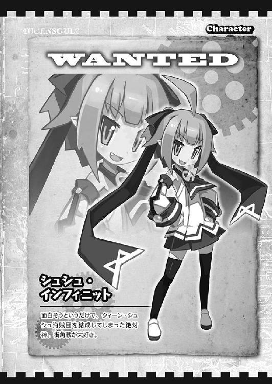

| 桜ノ杜ぶんこ 圧倒的遊戯ムゲンソウルズ ウォルギスのヤバイ財宝 圧倒的遊戯 ムゲンソウルズ | |
| 佐山操 | |
| (2013) | |
桜ノ杜ぶんこ
圧倒的遊戯ムゲンソウルズ
～ウォルギスのヤバイ財宝～
佐山 操

圧倒的プロローグ☆
とある星の大航海時代！
それは大海賊時代でもあり、世界の海を海賊たちが我が物顔で航海する世界でもあり、それを憂う勇者たちの船も行き交い、四六時中世界のどこかで交戦の火花が飛び散る大冒険世界だった。
この世界の六割を統一している大都会政府は、好き勝手に戦いまくる海賊たちの対策に奔走し、その結果、国家財政は破綻一歩手前という状況に陥っていた。
少しでもその損失を補おうと、『海賊ポルノ単純所持罪』というものを制定し、国民に重税をかけたのだった。これは、露出の高い海賊系アイドルたちの写真を持っているだけで高額罰金を取った上に無償で強制労働をさせるというもので、国民は夢も希望も奪われて怨嗟の声を上げていた。
そう世界中の人民は、この未来が見えない閉塞感を打ち破ってくれる圧倒的なヒロインの登場を待ち望んでいたのである！ そして世界各地には勇者や魔王と様々な呼ばれ方をした者たちが、その閉塞感を打ち破るべく起ち上がろうとしていた。中には『蒼天すでに死す』なんて時代錯誤な旗を掲げている者もいた。
「この世界のお宝は、わたしがぜーんぶもらっちゃうんだから！」
そして、ここにもそんな世界の閉塞感を打ち破ろうとする（？）、圧倒的な野心を持つ美少女シュシュがいた！
彼女は両手を腰に当ててムンッとふんぞり返り、暮れなずむ海辺で夕陽を見つめて己が野心を成就せんと誓っていたのである！
「具体的になにをするんスか？」
宝探しならその辺の店から宝の地図を買ってこないとと腰を浮かしかけた、シュシュの下僕一号のリュートが話しかけると、シュシュはニヤリと笑った。
「わたしは、これから女海賊クィーン・シュシュとなるの！」
「はい？ もしかして......遊ぶためにここに来たんじゃなく、海賊になるために来たんスか？」
ここは南国リゾートで有名なカリブーの街。
その街にある大型船が停泊できる港にシュシュたちは集まっていた。
「今頃気づいたの？ 下僕のくせにダメねぇ」
「っていうか、船もないのに海賊を名乗るっておかしくないッスか？」
「別におかしくないじゃない。これから船を手に入れればいいんだから」
リュートは不安な気持ちで周囲に集まっているシャンプルたちを見回した。
シャンプルとはシュシュの『下僕転生』能力──通称『萌え殺し』によって、シュシュに萌えてしまった者がなってしまう下僕の姿であり、ある程度強い力を持つ者は、リュートのように己の姿を保って入れられるが、本当に下っ端な奴らは、そろってこの不思議な石けん生物の姿にされてしまうのだった。
シャンプルたちは複雑な顔をして『ぷるる』とか『ぷるっ』とかとヒソヒソと話をしていた。
「船なんてどうやって手に入れるッスか？」
シャンプルたち下僕を代表して、リュートが質問した。
「果報は寝て待てと言うから、待っていればいいと思うの」
「ぷる」
「............シュシュ様」
リュートやシャンプルたちは、そろって頭を抱えた。
だが、リュートは気づいた。
「待ってるって、船を奪う気ですか？」
「そうよ。問題ある？」
「奪っちゃうって......」
エッヘンと胸を張ったシュシュを見て、リュートは港を見回してから肩を落として頭をかいた。
「言いづらいんスけど......」
「なによ」
「この港には、海賊船向きの船は停泊してないッスよ」
「なんで？ こんなにいっぱい泊まっているじゃない」
この港に停泊している船は船足の遅い貨物船か、近海用の小型船くらいしかなかった。
海賊船に最適な船足の速いキャラベル船が見あたらない。これらの船を奪って海に出ても、武装もないから海賊行為もできないし、近海でパチャパチャ水遊びをするしかない。仮に肉弾戦で商船を襲ったとしても、船足が遅いからアッという間に海上巡視船に捕まってしまう。最悪は軍隊のフリゲート艦に捕まって、その場で簡易裁判をされて縛り首だ。
「貨物船なんかで海賊をやるのは、ちょっと無理ッスよ」
「偽装貨物船とかあるじゃない」
「それは、足の速いキャラベルを偽装してやるんス。だから、本当の貨物船じゃないんスよ」
「じゃあ、船はないの？」
「ないですね。今の所......」
「じゃあ、待つしか無いわね」
さて、どうしようと港を眺めながらシュシュが首を傾げた時だった。
スルスルッと波の上を滑るように湾内に四隻のキャラベル船がやってきた。その三本マストの先端には、赤地の三角旗がたなびき、そこには黒い海賊マーク──ジョリー・ロジャーが掲げられていた。
「海賊船よ！」
海賊船は次々と町に向かって平行に船体を並べると舷側の砲門を開き、なんの警告もなしに砲撃を開始した。
「危ないッス！」
リュートはあわててシュシュを庇おうとしたが、シュシュはゲシッとその顔を押さえ込んで小脇に抱え、キラキラした目で海賊船を見つめ続けた。
「あれよっ！ あれをいただいちゃいましょ！」
「えええええっ!? 超絶無理ッス!! 危なくて近づけないし、どうやって奪うんスか？」
「わたしができるっつったらできんの！」
ドドドドンッ！
地響きのような大砲の砲声が轟いた。そして少しの間隔を置いて街の建物が次々と爆発していく。
接岸する様子はなく、一方的に街に砲撃を加え続けていた。
「せめて、接岸してくれば海賊船を奪うこともできるッスけど」
止むことのない砲声に両耳を押さえながら言うリュートの首根っこをつかみ、シュシュはさらに不機嫌そうに無茶ぶり叫びをした。
「だったら接岸させなさいよ！」
「無茶言わんでくださいッス！」
「だいたい砲撃ばっかりでズルイわよ！ 海賊らしくないわ！」
「海賊だから砲撃の後接岸します。だから、その時に乗り込むのが一番ス！」
「本当？」
「艦砲射撃で街を痛めつけてから上陸するッス」
「ならばその時に行くわよ！」
「了解ッス！」
「ぷるっ！」
一方的な艦砲射撃による対地攻撃が十数回続いた後、三隻の船が桟橋に接岸し、一隻の船がその場に碇を下ろしたまま陸地に砲撃を続けていた。
砲撃も一隻だけになったので耳を覆うほどではなくなったが、依然として空気を震わせ、地響きを立て続けていた。
「チャンス到来よ！ わたしに続きなさい！」
「ぷるぷるっ！」
シュシュの号令一下、シャンプルたちは一斉に腰に下げていた曲刀カトラスを抜刀してシュシュに続いた。船の観察に集中していたリュートもあわてて倣い、遅れてシュシュに続いた。
シュシュは、そのまま移動して桟橋近くの古びた倉庫の陰に身を隠した。
「いったんストップ！ 隠れて」
桟橋に接岸した三隻の船から、小汚い身なりをしたひげ面の海賊たちがワラワラと上陸し、我先にと街に向かって走り出していた。桟橋近くの倉庫に目を向ける者などいはしない。金目の物がありそうな高級住宅やホテルなどに海賊たちの視線は釘付けだった。
そんな愚か者の一団が目の前を通り過ぎるのを待って、シュシュは桟橋の様子を窺った。
「みんな行っちゃったわね。とつげきー！」
「ぷるるっ！」
雄叫びとも思える声を上げて、リュートとシャンプルたちはシュシュに続いた。
桟橋に接岸した海賊船はもぬけの殻だった。
海賊どもは留守番を置くこともなく、みんな一斉に陸上のお宝を目指して飛びだしていってしまったアホの子だった！
「ホラご覧なさい。簡単に海賊船を奪えたじゃない！」
「ほ、ほんとッスね......。あはははははははは......」
「グズグズしてないで、さっさと出航よ！」
「ぷるるっ！」
シュシュの号令一下、リュートは舵を取り、シャンプルたちは急いで配置についた。
目的は果たしたし、海賊たちが戻ってくる前にさっさと行ってしまうのが一番。
舵を切って桟橋から離れる時、船首の衝角が前に停泊していた海賊船の船尾を掠めてしまったが、そんなの無視してシュシュは湾の出口を指さした。
「進路はアッチよ！」
リュートの操船で船は桟橋を離れた。
すべては順調にいっているように見えたが、接岸せずに砲撃を加えていた海賊船は、仲間の船の異常に気づいた。同時に、船尾で指示を出しているシュシュを見つけたからさあ大変。シュシュによる船の強奪を確認した海賊船は碇を巻き上げ、大急ぎでその後を追いかけはじめた。
「見つかったッス！」
「なによ。船はたくさんあるんだから、一隻くらいくれたっていいじゃない！」
「海賊は欲張りだから、自分の物が取られることはイヤなんスよ！」
「そうなの？ 返さないよーだ！」
「どうしますか？」
相談している間に追いかけてくる海賊船は斜めに進路を取って舷側をシュシュたちの船に向けてきた。そして砲門を開いて一斉に砲弾を放った。
あちこちから激しい水柱が上がった。
航行中の船に当てることは非常に難しく、砲弾はシュシュたちの船に一発も命中しなかった。
「こっちも撃ち返しますか？」
「ンー......。戦闘なんて面倒臭いよー」
「じゃあ、逃げるんスね！」
撃ち返した反動で船足が鈍り、たとえ僅かな時間であってもロスするのなら、その分逃げ回った方がよさそうだった。
「もう船ももらったし、戦う意味ないわね」
実際、シュシュが奪った船はこの海賊船の一団の中でも最も船足の速い船で、砲撃をしてきた船は鈍足だが安定感重視の砲撃戦向けだった。そのために追いかけっこをしても次第に二隻の間隔は離れていき、やがて追う側は諦めたのかその船影は水平線の彼方に消えていった。
「これでヨシ！ さあ、冒険の世界に乗り出すわよ！」
「ぷるっ！」
これより七つの海を駆け抜ける女大海賊クィーン・シュシュの愛と勇気と冒険が詰まった壮大な物語の、はじまりはじまり～♪
第一章 飛び出せ大海賊の海（略して飛び海）
Ⅰ
最悪の船出だった──
後の世に発表されて大ベストセラーになった『クィーン・シュシュの大冒険～副長リュートの回顧録～』には、そう記されている。
あんなに颯爽とした船出だったにもかかわらず、どうしてそんなに最悪な船出となったのか？
まず、奪った海賊船が出航準備中の船ではなく、今正にやってきた船だったことが禍した。具体的には、乗っていた海賊たちはシュシュがいた街で〝略奪〟という名前の補給を行う予定だった。
つまり、食糧も水も残りわずかしかなかった。
そして、積んでいた財宝もどこかで買い物でもする予定だったのか、それともしてきた後だったのか、申し訳程度にチョッピリ積んであるだけだった。
まぁ、本来の乗組員たちは、これから街で〝略奪〟という名前のワクワクなショッピングをする予定だったわけだから、それも仕方がない。
つまり、どういう船出になったかというと、水ナシ食糧ナシ、そして金もナシといういきなり三重苦な展開だった。
「だめ......。もう、干上がるッス......」
生気のない顔をしたリュートは、カラッポのタルに背中を預け、足を投げ出すようにして甲板に座り込んでいた。
リュートのみならず、普段は元気なシャンプルたちですら、ぴょんぴょこ跳び回る元気を無くしてダラリンと、使い古された石けんのように乾きひび割れて──もとい、朽ち果てかけていた。
あの街を出てから一週間経ったにもかかわらず、この船を取り巻く世界はすべてが海だった。
わかりやすく説明すると目的地も定めず、しかも北極星観測すらしないままに当てずっぽうで船出したものだから水平線の彼方に島影が見えることもなく、行き交う商船も見えないという大海原を漂うハメになっていた。
まぁ北極星観測をしたところで、正確な観測技術を持っている者など誰もいないのだから、やるだけ無駄というものだった。
「そもそも......ちゃんとした航海士がいないことが......この海賊団の問題ッスね......」
指示を出せば従うシャンプルはたくさんいるが、指示を出せそうな人間はシュシュとリュートしかいない。おまけにその二人は正確な観測術を持っていない。
ともかく北極星を目指せば北に進める！
それにリュートが気づいたのは、船出してから実に三日が経過してからのことだった。
何はともあれ陸地を見つけるか商船を見つけるかしないといけない。
さもないとアッという間にシュシュ海賊団は、シュシュ〝死霊〟海賊団にクラスチェンジしてしまう。
「くっそ......こんな所で死んだら、カモメのディナーになるッスね......」
カモメに自分の死体を突っつかれている姿を想像し、リュートは思わず身震いした。
「縁起でもないスね。死んでたまるか！」
リュートは力なく頭をブルブルと振るって嫌な想像を頭から追い払うと、立ち上がって甲板をうろつき、シュシュの姿を探した。
とにかくなんとか現状を打破しなきゃならない。
リュートはやや前屈みになって腕を前に垂らした一見ゾンビを思わせる格好で、シュシュを探して船の中をウロウロと見て回った。
そして船尾楼の船長室で発見したシュシュは、なにやら腕組みをしてウンウンと考え込んでいた。
「シュシュ様、なにをしてるんスか？」
シュシュは現状打破の秘策でも練っているのか？
一抹の不安と期待を込めた視線でリュートはシュシュを見つめた。
「んー。この船の名前をなんにするか考えていたのよ」
「はぁ......？」
「やっぱり、わたしの船なんだからちゃんと名前があった方が良いと思うの。不細工な海賊たちが乗っていた頃の記憶を、この船だって忘れたいと思うしー」
「はあ......」
シオシオとリュートはしぼんで肩を落とした。
まぁ、シュシュ様ならそうだよなぁ......という感じで、妙に納得できるところもあった。
食糧を得る手段がないのなら、ジタバタしても仕方ない。そんな感じで吹っ切ってしまえば、きっと海賊の神様がなんとかしてくれる。飢えと渇きでカサカサになっているリュートの脳みそは、そんなちょっとおかしな認識をしかけていた。
もちろん、海賊の神様がシュシュの姿をして見えたのは言うまでもない。
「ゴージャスにゴールデン・グローリィ号にすべきか......」
「はぁ......」
「それとも可愛くプリティ・ホエール号にすべきか......」
「..................」
「うんん？ ん？ ンんーっ！ そうだ、Ｇキャッスル号にしよう！」
どうしたらゴージャスとかカワイイものからまったくかけ離れたような響きの、Ｇキャッスル号になるのか質問したい気持ちがリュートの中でフツフツと湧いてきた。
「あのー......質問してもいいスか？」
「なによ？」
「Ｇキャッスル号のＧって......どういう意味スか？」
「ギガンティックよ。ギガンティック・キャッスル号よ！ 強そうでしょ！」
「そうスね！」
「Ｇで略せばゴージャスにも見えるし、最初のゴールデンとかグローリーとかも入るわ。キャッスルでセレブな雰囲気も出るし最高ね」
てんこ盛りだった。
「かわいいは？」
「ガーリーのＧにもなるわよ」
「なるほど」
「じゃあ命名！ この船はＧキャッスル号よ！ クィーン・シュシュの乗艦に相応しい名前だと思わない？」
「そッスね。で、ついでに大事なことなんスけど......」
「なによ」
「もう食糧がないス」
「ゴハンがないならプリンを食べればいいじゃない」
「えーっと......ごめんなさい。もう、水も食糧もプリンもないス」
「ないの？」
「ないッス」
「買えばいいじゃない」
「ないッス。買うお店も、お金もないッス......」
お金もないということで、さすがにシュシュもちょっとだけ気になって、船長室にあった棚などを漁ってみた。
おそらくは元この船の船長のお小遣いと思われる小銭が引き出しにわずかばかり見つかった以外は、小さな宝石箱のようなものがひとつだけ。実にシケた船長室である。
それ以外に見つかったものは、読めない者にはまったく無用の長物である地図や航海日誌などがあるだけ。
「ないわね......」
「ないッスね......」
元船長のお小遣いも、みんなのオヤツを買ったらおしまい。
そんな一回分程度の量しかなかった。
「この......宝石箱には......」
「鍵がかかってるッスね......」
「リュートなら簡単に開けちゃうでしょ？」
「お任せを！」
リュートがピッキングの道具を取りだしてガリガリやること三〇秒。カチリと音を立てて宝石箱の鍵ははずれた。
「どうぞ」
「なんでわたしに開けさせるのよ？」
「いや、最初にのぞくのは船長特権かと思ったッス」
「モクモク煙が出てきて、わたしがオバアちゃんになっちゃったら、どうする気？」
「即刻、退職届を出させていただくッス」
「なら、リュートが開けなさいよ」
「了解しました！ あ、あれ？ じゃあ、モクモクと煙が出てきて、ぼくがオジイちゃんになっちゃったらどうするんスか？」
「クビに決まってるじゃない」
「ク、クビですか？」
「そう解雇。ああ、でもロマンスグレーのオジイちゃんになったら、老執事役として改めて雇ってあげてもいいわよ」
ポワポワポワワンとリュートの脳裏にロマンスグレーとなった自分の姿が浮かび上がり、タキシードを着てシュシュに仕えている妄想が走り始めた。
それはイイッ！ リュートの全細胞がその妄想に賛同した。必ずしもリュートがロマンスグレーの老人になるかどうかはまったく不明だったが、下僕一号よりも執事一号の方が格段に役職が上に思えたからだ。
「なら、開けるッス！」
パカッと宝石箱は開いた。モクモクと煙が出てきたが、すぐさまそれもおさまったし、リュートの外見に変化はなかった。
果たしてそこにあった物は......。
薄いピンク色のタマゴの形をした宝石（？）だった。
大きさは鶏卵ほどで、素材は軟質ウレタン素材のようなフワフワしたさわり心地の不思議なタマゴだった。追伸・安っぽい。
「タ、タマゴッスね......」
「見ればわかるわよ」
煙が出てこないことに安心して宝石箱の中をのぞき込んだシュシュは、タマゴの傍にあった説明書と思われるカードを取りだした。
『不思議なタマゴ。
水につけるとあ～ら不思議、モクモクと煙が出続けます。その効果はなんと一〇時間も持続！ 脅威のこのハイパワーの不思議なタマゴは、送料込みのお値段──ジャバネット・ダガシ屋特価のジャスト九八八〇円です』
「ジャストじゃないわ！」
まったくその通りだった。
価値ある宝石だと思ったらトンデモ隠し芸ネタだったというオチで、リュートはシオシオとその場にへたり込んでしまった。
空腹の時、こんなギャグオチはきつすぎる。
「腹減ったッス......。今夜からメシ抜きッスよぅ......」
「えええっ!?」
「マジッス......。ああ、腹減ったぁ......」
「ゴハンかぁ......」
今夜のゴハンすらないとは、シュシュも考えつかなかった。
さすがに、ゴハンがないならお菓子を食べればいいじゃないとは冗談でしか言えない。
「でも、きっとなんとかなるわよ」
「なるんスか？」
「わたしが望んで叶わなかったことはないじゃない」
シュシュが自信ありげにそう言った時、船上からフライパンを叩くような金属音が響いてきた。
「何事？」
シュシュとリュートが船長室から甲板に出ると、マストの上に作られた見張り台に乗っていたシャンプルが、懸命にフライパンを叩いていた。
「ぷるるっ！」
「一〇時の方向に船影アリ、だそうです！」
シュシュは懐から取りだした伸縮型望遠鏡を伸ばすと、リュートが通訳したシャンプルの言葉に従い一〇時方向に向けてのぞき込んだ。
「三本マスト......。大型輸送船ね。護衛船舶の姿は見えないわ。舷側に砲門見えず」
「偽装貨物船とかじゃないスね！」
リュートも望遠鏡を伸ばして船を観察していた。
「ほぉらなんとかなったでしょ！ クィーン・シュシュの初陣よ！ 水も食糧も財宝もいっただきよっ！」
「おおおっ！」
「ぷるっ！」
全員の目が食欲で燃えていた。
生存がかかっているのだから、それはもう命がけである。
「衝角戦用意！ ぶつけて接舷するわよ！ とつげきーっ！」
「ぷるーっ！」
Ｇキャッスル号と命名されて初の海賊戦闘は、この衝角を使った突撃戦闘で幕を開けたのだった。
Ⅱ
この世界が、大航海時代という名の大冒険時代に入るほんの少し前のお話──
我が物顔で世界を荒らし回り、恐怖におののいた人々から〝支配者〟とも呼ばれた大海賊ウォルギスという者がいた。もうすでに亡くなって過去の人になったので呼び方も変わり、現在では〝旧支配者〟と呼ばれている。
ウォルギスは世界のどこかにあるという〝秘密のリュリエー城〟に財宝を隠して死んでしまい、いつしかそれは大海賊ウォルギスの秘宝があるという、ありきたりな海賊伝承として語り継がれるようになっていた。
ただし、これがありがちな海賊伝承ではないことを裏付けるニュースが、魔法の鏡を使った情報ネットを駆け巡ったからさあ大変。
それは、度重なる経済政策の失策で破綻寸前となった大都会政府の新しき指導者〝偉大なる救済者エルカ大総統閣下様〟が、新政策として国軍の総力を結集してウォルギスの財宝の探索を開始したというニュースだった。
ニュースが駆け巡った当初は、そんなバカなことはやらないだろうと情報を受け取った側は半ば笑い飛ばしていた。しかし、連日のように駆け巡る情報に次第に耳を傾けるようになり、挙げ句〝偉大なる救済者エルカ大総統閣下様〟が情報ネットに出演し、自らその行為を肯定してその理由をぶち上げるという珍事が発生した。
『我が国の財政は、歴代の愚かな総統や政治家たちによって極めて危険な状態にされてしまっている！ この問題を解決出来る人間は、世界広しとは言えどもこの〝偉大なる救済者エルカ大総統閣下様〟以外に居はしない。いや、居るわけがない！
愚かな有権者たちよ聞け！
この国、大都会政府がその名の通り大都会でアーバンで、アバンギャルドでドラスティックな繁栄を遂げるためには、この俺様が支配していなかった弱腰の大都会政府時代に、政府からウォルギスが略奪しまくっていた金銀財宝を取り戻し、それを補填することが重要なのである！ もしこの財宝を確保できなければ、数年後には消費税を一一〇％かけ、さらに住民税の七〇〇％増税が必要となる！』
アバンギャルドでドラスティックな繁栄というものが、どんな前衛的な繁栄なのかはわからないが、ここで重要なことは、消費税が一一〇％もついて一〇〇円の物を買うと二一〇円必要になるとか、住民税が七倍になるとか、国家が財政破綻するとかという問題ではない。
ただひとつ、大都会政府がウォルギスの財宝の存在を認めたということだった。
しかも、大都会政府の財政破綻をナイナイして、さらなる繁栄に導ける規模の財宝だということも重要だった。
この放送の直後、世界は大航海時代に突入した！
大都会政府よりも先にウォルギスの財宝をゲットして、億万長者のセレブになってやるという野心家たちが大海原に乗り出したのである！
海賊から船を強奪して大海原に乗りだしたシュシュも、そんなウォルギスの財宝を求める冒険家の一人のはずだった。
「海賊の宝探しなんて、おもしろそう！」
その一言で、シュシュはリュートたちを引き連れて海賊になることを決めた。金が目的とか、セレブになりたいとかというよりも、純粋に冒険の匂いに引きつけられたのだった。
さてさて、シュシュの話はしばらく横に置いといて──
アバンギャルドでドラスティックな繁栄を目指す〝偉大なる救済者にして天上天下唯我独尊のエルカ大総統閣下様〟は、執務室の窓から宝探しに向かう船で賑わう港を見下ろしながら、朝食後のコーヒーを楽しんでいた。
この財宝探しの大フィーバーは、実は〝経済通の偉大なる救済者にして天上天下唯我独尊のエルカ大総統閣下様〟の仕掛けた、大都会政府経済復興政策のひとつだった。
ぶっちゃけた話をすると、財宝の存在など明かさずにコッソリと探せばライバルがいなくて済むのだが、敢えてこれを公表した理由はこんなことだった。
公表することで人々は大冒険に向かいたくなる。
↓
大冒険に向かうには船や装備が必要。
↓
船や装備を人々は買う。
↓
製造業が潤い始める。
↓
税収が増える。
↓
さらに港の関税や通行税や使用税がガッポガッポ入ってくる。
嗚呼、なんて素敵なエルカミクス！ 讃えよエルカミクス！
口八丁だけでこの状況を引き起こした〝経済通の偉大なる救済者にして天上天下唯我独尊のエルカ大総統閣下様〟は、大都会政府の救済者に相応しい大総統閣下と言えた。
さらに財宝探しにおいても、今さらウォルギスの財宝を求めて大海原に乗り出した冒険家たちよりも、一歩も二歩も先を歩んでいた。
「ふん。キミたち......今さら大海原に乗り出しても遅いのだよ......」
エルカ様率いる大都会政府軍は、ウォルギスの財宝の行方を知っている一族の末裔と言われるベルリオーズを、この情報ネットに発表する前から確保しており、現在進行形でその在処を吐かせようとしていた。
世の中すべて俺様の計画通り！ そう信じてやまないエルカ様が、財政が多少上向きになってきたことで朝食後のデザートに追加したプリンに手をつけはじめた時だった。
コンコン！ とノックの音が執務室に響き渡った。
「入れ」
「エルカ大総統閣下。失礼いたします！」
手をナナメ四五度に掲げる敬礼をして入室したのは、『元気デスカー！』といつ叫び出してもおかしくはない雰囲気と長い顎を持った海軍長官だった。
「オイ、海軍長官氏！ ちょっと待て！ 俺様の尊称を簡略することは許さんぞ！」
「は、はぁ......？」
「許さんと言ったら許さんぞ！ 俺様は〝経済通の偉大なる国家救済者にして、世界中の女性に愛されモテモテの天上天下唯我独尊のエルカ大総統閣下様〟である！」
「か、畏まりました。〝経済通の偉大なる国家救済者にして、世界中の女性に愛されモテモテの天上天下唯我独尊のエルカ大総統閣下様〟失礼いたします！」
改めて敬礼し、指示通りに尊称をつけた海軍長官を見て、エルカ様は満足そうに頷いて見せた。
「して、俺様に何用かな？ 海軍長官氏よ」
「はい。ベルリオーズが未だに口を割りません」
「ベルリオーズ？」
ハテ誰だったかな？ とエルカ様は首を傾げた。
その様子を見た海軍長官は助け船を出した。
「ウォルギスの財宝の在処を知ると言われて捕らえた一族の末裔です」
「おおおおっ。そんな奴がいたな。で、口を割ったのか？」
「いえ、ですので口を割りません」
その報告に、エルカ様は青ざめてガタガタと震えだし、へっぴり腰になって海軍長官に食ってかかった。
「なぜだ！ それでは俺様の壮大な予定が狂ってしまうではないか!! さっさと財宝を手に入れなければ、俺様は無能な政治家の烙印を押されてしまう！ それでは俺様の老後の生活設計とかに支障を来してしまうのだよ！」
「は、はぁ......」
「わかるかね!? 海軍長官氏よ！ 貴様は継続して軍人という席に座っていられるから夢の定収入を得られているのだ。だが、俺様は人気商売だ。人気がなくなれば即解雇。失策してもすぐ解雇。あっという間に忘れ去られてしまう存在。それが政治家というものなのだよ！ そして収入も任期期間しか得られないという、ある意味期間限定社員なのだ。固定収入からはほど遠い存在なのだよ！ つまり、在任期間が長ければ長いほど給料がもらえるのだ！ その夢の安定生活を、俺様から奪おうというのか!? いや奪わせまいぞ！」
なぜこの人が大総統なんだろうと海軍長官はチョッピリ思いながらため息をつきつつ、エルカ様を落ち着かせるために小脇に抱えていた書類の束を差し出した。
「なんだこれは？」
面食らったエルカ様は、書類も見ずに訊ねた。
「ベルリオーズの口を割らせるための作戦計画書であります。ご一読ください」
「ふむ......」
まじめくさった海軍長官の顔を値踏みするように見つめてから、青ざめた顔のエルカ様は書類の束に目を落とした。
厚さにして実に二センチはありそうな書類を、紐をギッチギチに締め上げたものだ。
「厚いな......」
「はっ。渾身の力作作戦計画書であります。総ページ数は二〇八枚になります！」
「読みたくない。説明したまえ」
そんな分厚い計画書はすぐに読めるものでもないし、また汚い字なので読む気も失せるものだった。
持ってきた海軍長官もその答えは予想の範囲だったのだろう。動じた様子もなく長官は計画書を手にして要点をかいつまんで話し始めた。
「ベルリオーズはのらりくらりと話を逸らして口を割らないために、誰も脱走したことがない上に、拷問を加えることで評判の獄吏がいる大監獄島に送りつけ、そこで少々痛い目を見せて吐かせることが、今回の作戦計画であります！」
「ふむ。ん......？ ちょっと待て、それだけのことが、その二〇八ページの作戦計画書に書かれているのか？」
「はっ！ 兵の配置から護送ルートに至るまで綿密に練り上げた企画が、ぎっしりミッチリとここに書き込まれてあります！」
海軍長官はツバを飛ばしながら、図説入りで細かく書いてある作戦計画書をパラパラと開いてエルカ様に押しつけた。しかし、分厚いその計画書で殴られるものと勘違いしたエルカ様は尻込みして座り込んだ。
「ご、ごめんなさいごめんなさい！」
「は？」
想定外のエルカ様の反応に、今度は海軍長官が面食らった。だが、思わぬ失態を見せてあわてたのはエルカ様も一緒だった。あわてて取り繕い、なにかにつまずいて転んだようにズボンの埃をわざとらしく払い、エルカ様は立ち上がった。
「ゴホン......。あ、いや。す、すまなかった。実に素晴らしい計画だが、確かベルリオーズとは女だったな？ しかもとびきりの美少女だった記憶がうっすらと思い出されてきたのだが......」
ちろーりとエルカ様が海軍長官を見ると、彼は澄ました顔で答えた。
「さようでございますが......なにか？」
ふむ......とエルカ様は腕を組み、左手の指先で自分のアゴをつまんで見せた。
「ここはひとつ......俺様が口説いてみるというのはどうだろうか？」
「..................」
「俺様の愛の力で誠の愛に目覚めたベルリオーズは、愛する俺様にペラペラとウォルギスの財宝の在処を吐いてしまうのではないかな？ どうだ？ 下手に拷問を加えたり投獄するよりも建設的な方法だとは思わないか？」
「却下でございます」
「なぜだっ!?」
「お忘れのようですが、すでに二度、その作戦を〝経済通の偉大なる国家救済者にして、世界中の女性に愛されモテモテの天上天下唯我独尊のエルカ大総統閣下様〟はご提案されて、その都度実行しております。が、まったく成果はございませんでした」
「三度目の正直と言うではないか!?」
「二度あることは三度あると申します！」
「キミィィィィィッ！ 部下の分際で大総統閣下の命令に従わないのか!?」
「わたくしは一重にこの大都会政府のためを思い、私心を持たずに計画しているであります！ すべては〝経済通の偉大なる国家救済者にして、世界中の女性に愛されモテモテの天上天下唯我独尊のエルカ大総統閣下様〟の国作りのためであります！」
「うっ......」
非常にマジメな顔でそんなことを言われてしまっては、エルカ様もそれ以上ワガママを言うことができなかった。
「わ、わかった......。海軍長官氏よ、キミの作戦を実行したまえ......」
「はっ！」
「その作戦を実行して、必ずやウォルギスの財宝の在処を突き止めるのだ！ 我が大都会政府の余命は、あと三六五日くらいなんだからな！」
「は、はいっ！」
ナンパ作戦を止められて泣きそうな気持ちを必死で抑えながら、エルカ様はそう海軍長官に厳命した。
Ⅲ
「はああああああああああああっ!? あたしがこの護送任務の指揮官ですかあああっ？」
海軍長官室に、海軍情報部三課所属アルティス海軍中尉の不満バリバリの叫びがこだました。
「アルティス中尉。眉間にシワが入っておるよ？ お、女の子がそんな顔をしちゃいけないと思うよ。うん」
海軍長官は声を震わせて椅子の背もたれにしがみつき、負のオーラを燃やしまくっているアルティスの視線で人が殺せるような目から逃れようとしていた。
「あたしが、なんでそんな仕事をしなければならないんですか!?」
このアルティスはいつか大都会政府の大総統になってやるという野望だけは一人前の小役人なのだが、野望に見合って態度だけは非常に大きく時として海軍長官ですら威圧してしまうほどだった。もっとも仕事では失敗ばかりしているせいで全然出世できず、自分はデキル子、すべては世間が悪いんだと悶々とした日々を送っている万年中間管理職な将校だった。
そんなアルティスに降ってわいた新しい仕事が、このベルリオーズの護送と管理だった。
「護送任務だったら、専門の獄吏とかがいますよね！ なんで情報部のあたしがやらなきゃならないんですかー!?」
ベルリオーズの護送任務は国の最重要機密だった。そのために、一介の将校でしかないアルティスには話されていなかったのだが、重要任務とは知らないアルティスにとって軍人として囚人の護送任務を任されるなど屈辱の極みだった。
なによりも上層部の陰謀で、このままなし崩しに中央の仕事からイラナイ子として遠ざけられてしまうのではないか？ そんな疑念まで浮かんでいた。このまま失墜の道を辿るのかと危惧するあまり、アルティスの反応も激しくなっていた。
「うぅ、ウォッホン！ お、落ち着きたまえ、アルティス中尉。いや、大尉だな。アルティス大尉、落ち着くのだ」
「はい......？」
いきなり上の階級で名前を呼ばれてアルティスは驚き、目を見張った。
「この任務に就くために、急遽キミは大尉に昇進したのだよ」
仕事をする前から昇進する？
イヤな予感がアルティスの脳裏を駆け巡った。
そんなうまい話には絶対に裏がある。基本ここは軍隊なわけだから、うまい話の裏となった場合、凄まじく危険極まりない任務が待ち構えているはずだった。
「しゅ......囚人は、誰かに狙われてるのですか？」
考えられる可能性はそれだ。
数千人から恨みを買っている囚人の護送という任務。
「ん......？ そうだな。まだ、狙われてはおらぬな」
「ま・だ......なんですか？」
「そうだ。まだだ」
さらに任務に胡散臭さが立ち込めてきた。
「つまりそれは、これから狙われる可能性があるということですねー？」
「その通りだ。そんな危険なミッションを獄吏如きにこなせると思うかね？」
うなずきたくはなかったが、軍人でもない獄吏にそんな大役が果たせるとは思えない。それに、ここでどれだけアルティスがあがいても、軍隊なのだから命令として任務遂行させられることは確実だった。
「で、どんな任務なんですかー？」
諦め半分で、アルティスは任務の内容を訊ねた。その彼女の態度に、海軍長官はホッとした表情を見せながら説明をはじめた。
「う、うむ。実は、我が国の一大プロジェクトであるウォルギスの財宝探索については、アルティス大尉も存じておるな？」
「知ってますよー。ウチの大総統がはじめたバカげた取り組みですよね？ 国家財政の赤字を海賊の秘宝で穴埋めしようなんてどんなバカな政策なんだと、掲げられた当時は鼻で笑っちゃいましたけどー......」
そこまで言いかけて、アルティスはその話を持ち出された理由に気づいた。
「この任務は、その海賊の財宝にまつわるものなんですね？」
「察しが良いな」
「まぁ、勘はいいとよく言われますので......」
「実は、護送対象の囚人なのだが、そのウォルギスの財宝の場所を知るとされる一族の一人なのだよ」
「はい？」
鼻で笑ったネタが現実味を帯びてきたために、アルティスは身を乗り出して声を潜めた。
「つまり......マジに財宝ってあるんですか？」
「もちろんだ。その総額は二〇〇エクサとも言われている」
エクサと聞いて、最初アルティスはどこの国の通貨だ？ と首を傾げたが、それは通貨単位ではなく数量の単位であることに気づき愕然とした。テラの上にペタがあり、その上にあるのがエクサだった。
「エ、エクサ？ い、一エクサが......百京だから......」
アルティスの耳からプスプス......と煙があがりはじめ、目がグルグルと回りはじめた。
ケタがあまりにも凄すぎて、想像の限界を軽く超えてしまっていた。
「ウォルギスって、そんなに財宝を持ってたんですか!?」
「うむ。そのうちの数パーセントが、我が国の物だった」
クラクラする頭を抑えながら、確かにそれは獄吏には任せられない任務だとアルティスは理解した。
「獄吏は拷問は上手だが、聞き出すべきことに関する理解力に欠ける。そこで、情報部のアルティス大尉も拷問部屋に同席し、獄吏を手助けして欲しい」
「はぁ......。することは、それだけですかー？」
「それだけだ。上手くウォルギスの財宝の在処をベルリオーズから吐かせられたら、三階級特進を賜ることが決定している」
「し、死んでもいないのに......三階級ですか？」
「その通りだ。成功すれば、アルティス大佐と呼ばれる地位がキミを待っている。もしかしたら、准将......と呼ばれることもあるかもしれん」
三階級どころか、四階級特進という異例も異例の大出世コースだった。
なんと言う夢のような話。
アルティスは目を輝かせて海軍長官に敬礼した。
「アルティス大尉。慎んで、この任務を拝命させていただきます！」
「うむ。それでこそ、栄えある大都会政府海軍大尉である！」
こうして命令を拝命したアルティスは、任命書と作戦指示書を受け取ってから海軍長官の部屋を後にした。
だが、廊下に出たアルティスの瞳には、なにか野心めいたものが燃え上がっていた。
──二〇〇エクサの財宝だなんて......。そんな財宝の在処を聞き出したらあたしがかすめ取り、こんな小役人など退職して、自分の王国を作って悠々自適に暮らすしかないですね！
なんという野心！
大都会政府への忠誠心を野心が圧倒的なパワーで駆逐していた。
それは小役人として日の目を見ることもなく悶々とした日々を送り続けた結果、素直な心がヒモノのようになり、いつか大総統になってやるという屈折した野望だけがグレードアップして燃え上がった結果だった。
だが、その野望実現のためには、大都会政府軍の追手から逃れる船と仲間が必要不可欠。
──護送船の艦長が、話がわかる奴だったらいいですねー。
そんな期待を抱きながら、アルティスは野望実現の未来予想図を胸の内に描きはじめていた......。
Ⅳ
そして囚人ベルリオーズをアルティスが大監獄島に護送する任務の日、その護送船の船長に使命されたのは、アルティスから見ると融通が利かない変態勇者ソゥル・スカイハートだった。
──ああ、コイツはダメです......。
ソゥルの姿を見た途端、絶対に自分の仲間入りはしない奴だと理解でき、アルティスは心の中でションボリした。
しかし、そのソゥルはソゥルで、表情こそクールに決めていたが、今回の仕事を引き受けたことを内心で後悔していた。
今回、大都会政府軍から拝命した仕事は、政府が用意した要人護送船を使って二人の人間をあの悪名高い大監獄島に護送することだった。引き受けた当初、二人がどんな人間でなぜ護送するのかという理由は、すべて特務という一言でまとめられてしまい、ソゥルには伝えられていなかった。そのために乗船時に初めて護送する二人がうら若き女の子と知り、大監獄島に連れて行く勇者らしくない任務など受けなければよかったと後悔していた。
それがただ若いだけならまだしも、セクシーな水着がとても似合って、グラドルとしてピンナップを撮ったら超絶イケそうな美少女である。
なぜ、自分がそんな護送任務を受けなければならないのか？ いや、正義のために大都会政府の仕事をすると決めたのはソゥル自身なのだが、よりによってどうして自分にそんな任務のお鉢が回ってくるのかと、ソゥルは内心で神様を呪っていた。
だが、もう受けてしまった以上は仕方がない。
ソゥルはアルティスとベルリオーズが甲板に上がってくるのを認めると、ヨッコラショと立ち上がり、二人の元に歩み寄った。
「あんたたちが、今回の護送対象だな。俺はソゥル・スカイハート。この船の船長だ。まぁ、短い航海になるが、よろしく頼む」
ぶっきらぼうにソゥルは挨拶を済ませると、近くにいた水兵に二人をキャビンに案内するように指示をして、さっさと舵の舵輪の所に駆け上がってしまった。
「なんでしょうねー。カッコつけているように見えますけどー」
ベルリオーズはコクコクと頷いた。
「むう、本当にしゃべりませんね。実は口が利けないとかじゃないですよね？」
「しゃべると疲れるから、黙ってただけ......」
「..................」
アルティスは大監獄島についてからの取り調べを想像して苦労しそうな予感を感じ取り、大きなため息をこぼした。
二人がキャビンに入った時に船出の合図である銅鑼が鳴り響き、船は桟橋から離れた。
「なんだか、船出って感じがしないションボリしたオーラに包まれていませんか？」
またベルリオーズはコクコクと頷いた。
「それじゃ、盛り上げてみる......？ ぽー、ぽっぽー...」
「......無理しなくていいです。見てて痛々しいですから」
アルティスのため息交じりの言葉に、ベルリオーズは肩を落とした。
「あう......。がんばったのに......ションボリ」
「まあ、盛り上げるシーンでもないですしね。なんせこれからあたしたちが向かう島は、かの有名な大監獄島ですし」
クシシシとわざとイジワルな笑いを見せたアルティスだったが、ベルリオーズは興味なさそうに無表情のままでいた。
しかし──
「......ひどいこととか、されちゃう......？」
表情に変化が出ていないだけで、十分に怖がっているのではないか？ アルティスはベルリオーズの言葉からそんな風に想像した。
「ふっふっふ。そりゃもう、あーんなことやこーんなことまでされちゃいますとも！ 生かさず殺さずが、大監獄島の拷問のモットーだそうですからね」
さあ怖がれ！ そしてしゃべってしまえ。そう思いながらジェスチャー混じりでにこやかにアルティスは迫ったが、相変わらずベルリオーズの表情に変化はなかった。
「怖くないんですか？」
「痛いのは、割と平気......。でも、えっちなのは、いやかも......」
「えっちなのですか......。裸にひん剥かれて、手足を縛られて羽でくすぐられるとかあるかもですよー」
「それは、えっちね......」
「だったら、今の内にさっさと話してしまうのがいいですよ」
「それは、無理......。わたしは、なにも知らない......」
──どうなのでしょうね......。
脅かすのもあまり効果がないと見て、相変わらず無表情なベルリオーズを、アルティスは少し離れた場所に座って観察することにした。
ベルリオーズはキャビンの窓際に座り、ジッと外を見ていた。
そしてかれこれ一時間ほどが経過した。
その間、アルティスはベルリオーズをずっと監視しっぱなし。ベルリオーズは涼しい顔をして、ずっと見られていた。だが、唐突にベルリオーズはチラリとアルティスを見た。
「わたしは、拷問を受けない......気がする」
「受けない......気がする？」
コクコクと頷くベルリオーズを見てアルティスはハッと我に返った。
もしかしたら、彼女を救いだそうとしている連中がいるのではないか？ そんな空気をベルリオーズは感知して、そんなことを言い出したのではないか？
大監獄島にベルリオーズを護送するこの極秘計画が、どこかから漏れてしまっているのか？ かなり早期に情報流出して計画が立てられていたら、この船にもその一味が乗り込んでいる可能性がある。
イヤな予感めいたものに突き動かされ、アルティスは甲板につながるドアを開いて外に飛びだした。
「船長さん！」
ソゥルの姿を求めて声を張り上げた時だった。
「船長！ 四時の方向に艦影ひとつ。マストには三角旗が掲げられており、ジョリー・ロジャーが見えます!!」
イヤな予感は的中した。
「海賊だと!?」
違う、そいつはベルリオーズの救出隊だと言いかけたアルティスは、それが重要機密にかかわる問題であることに気づき、あわてて口を押さえた。船内に敵が潜んでいたとしたら、さらにまずいことになりかねない。
アルティスはキャビンに戻り、ドアを後ろ手に閉めた。
「どうか、した？」
「海賊船です。襲撃されちゃうかもです」
「そう......大変ね」
まるで他人事のようにベルリオーズは呟いた。
一方、海賊船を目撃した甲板は緊張が走りまくっていた。
「船名を舷側に確認！ Ｇキャッスル号です！」
望遠鏡で迫ってくる海賊船を観察していた水兵がそう叫んだ。
「知らん船名だな。新参の海賊か......？」
波の上を滑るように迫ってくる海賊船Ｇキャッスル号。
接近する海賊船を観察しようと望遠鏡を伸ばしたソゥルは、Ｇキャッスル号の船首で船長っぽい服装のシュシュが、曲刀──カトラスを振り上げて指示を出している姿を認めた。
「あれが......船長か？」
その時、ソゥルは瞬時に頭の中で計算を開始した。
今回の任務である、いたいけな少女二人を悪魔の大監獄島に送ることは、やはり英雄志願のソゥル的には不本意でたまらなかった。かといって一度受けた任務を放棄するわけにはいかない。
ではどうすればいいか？
二人を人質として海賊船に奪われてしまえばいい。
奪われたらどうすることもできない。しかも、女の子なのだから奪われても仕方がない。美人ならなおさらだった。
さらに追いかけてきている相手船の船長が女の子──シュシュということも、この思いつきにピッタリだった。見た目からの判断でしかないが、少なくともシュシュがこの二人をどこかに売ったり、酷い目に合わせるようなことは想像できなかった。
──いつやるの。今でしょ！
ソゥルの魂に、変なオッサンの流行語が響いた。
「戦闘準備～っ！」
やや気合いの入っていないソゥルの号令が甲鈑に響いた。
Ⅴ
一方、襲いかかってきたＧキャッスル号の方はというと──
それまでアテもなくフラフラと北上していたシュシュたちは、見かけた商船や輸送船を襲ってはその食料や綺麗なモノを奪い、なんとか食いつないでいた。
「ちょっとっ！ ちゃんと羅針盤見て方位を決めてよね」
「ええっ？ ちゃんと北極星を見て北に進んでいるッスよ？」
「本当に？ 行けども行けども海ばーっかりで、お風呂もなにもないじゃない！」
「お風呂......。し、仕方ないッスよ！ ここはきっと大海原のど真ん中なんスよ。ほらほら、地図にも大きな海があるじゃないッスか」
「そうだけど......」
なにか腑に落ちない顔をして、シュシュは首を傾げた。
「ぷるるっ！」
その時、見張り番のシャンプルの声が響いた。
「二時の方向に艦影アリ！ 軍艦みたいッスよ!?」
「商船を襲っていたから、通報されたのかな？」
シュシュは船首に走って望遠鏡をのぞき込んだ。
確かに二時の方向に艦影が見えた。
形状から判断すると、軍艦ではなく大都会政府の要人護送船に思えた。
「要人護送船ッスね。たぶん」
「でも、なんだかションボリ・オーラに包まれてるわね......」
ガッカリしている人間はガッカリ・オーラに包まれてなにもかも上手くいかないように、船長がションボリしていると、負けを呼び込むションボリ・オーラがその船をも包み込んでしまう。
「要人護送船なら......お風呂があるかもッスよ」
「それよ！」
シュシュの目が輝いた。
「行くッスか？」
「衝角戦よーい！ ドカンととつげきよーっ！」
「ぷるるるっ！」
ご機嫌な鬨の声を上げたシャンプルたちと共に、リュートも鬨の声を上げていた。
一方、気合いの入っていない号令をかけたソゥルは、面舵を切って左舷側をＧキャッスル号に向けた。そして、大砲を準備させて砲門を開いて先制攻撃を仕掛けた。
ドドドンッ！
海上に砲声が響き渡り黒煙が広がった。
だが、弾は命中せずにＧキャッスル号の頭上を飛び越えてその後方の海上に着弾し、激しい水柱を上げた。
「凄い足の速い船だな！」
Ｇキャッスル号の船足の速さは、砲撃手の予測着弾点を遙かに越えていた。さらにＧキャッスル号は正面から突進してきている。命中面積の少ない船の正面に砲弾を当てるのは至難の業だった。
「奴らは衝角戦を挑んできています！」
「なんだと！」
海上では砲撃戦全盛のこの時代に衝角戦を挑んでくるとは、さすがのソゥルも思いつかなかった。
ズガガンッ！
激しい衝突音と破壊音が響き、吃水線下に仕掛けられたＧキャッスル号の衝角はソゥルの船の舷側をメリメリと破壊して突き刺さった。
当然、シュシュたちが乗るＧキャッスル号にも衝撃は走るが、ぶつかった方とぶつけられた方では、当然ぶつけられた方が激しい衝撃を受ける。同時に横腹に攻撃を受けたものだから、誰もが立っていられなかった。
「とつげきいいいいいいいいっ！」
シュシュは船首からソゥルの船に飛び移り、シャンプルたちもそれに続いた。中には舷側にロープをかけて、そこから飛び移る者たちもいた。
瞬く間に甲板のあちこちで剣戟が鳴り響きはじめた。だが、ションボリ・オーラの影響を受けている水兵たちが、フルパワー状態のシャンプルたちに勝てるはずがない！ なによりも食欲が彼らを戦いに駆り立てていた。
文字通り飢えた野獣のように血走った目で攻撃してくるシャンプルたちに恐れをなした水兵たちは、甲板の至る所で両手を上げて降伏の意志を示した。
「降伏する！ 水兵たちの命の保証を要求する！」
そして、水兵たちの様子を見たソゥルもまた、あっさりと降伏宣言を叫んだ。
だが、冗談じゃないとソゥルに食ってかかったのはアルティスだった。
ソゥルの叫びを聞いてあわててキャビンから飛びだしたアルティスは、ソゥルに食ってかかった。
護送任務中に海賊に襲われるなんて論外もいいところだし、ロクに戦いもせずに勇者が降伏するとは思いもしなかった。
「ちょっと待ちなさいよ！ ここで降伏しちゃったらどうなるんですか!?」
「積み荷に宝がないからな......。多分、あんたたちが人質に取られて終わりだろうな」
「あ、あたしたちが......人質ですか？」
「残念ながら......ジ・エンドだ」
処刑されるよりはマシだろうとソゥルは思ったが、さすがにそれを口に出してはカッコ悪いと思ったか、黙ったままだった。
「じょ、冗談じゃないですよー！」
ここでベルリオーズを奪われては、壮大なアルティスの計画に亀裂が入りまくりどころか〝夢、幻の泡となり〟もいいところになるし、任務失敗で軍に戻ることもできない。夢もなくなり、職業も失う最悪な展開だった。
「お、俺の力及ばずですまない」
なんだか自分に酔っているようなヘタな演技でソゥルは謝ってきたが、ここで謝られてもアルティスにはなんの意味もない。
あり得ない。あってはいけない状況だった。
「ずいぶんあっさりと降伏したわね」
その声に振り向いたアルティスは、海賊イコールで汚らしいひげ面のオッサンみたいな先入観を持っていたから、やってきた海賊が小娘だったのでビックリした。
「船長は誰？」
「お、俺だ！ 武器は捨てて降伏する。だから、水兵全員の命の保証をして欲しい」
「ああ、そんなのいらないから安心していいわよ」
シュシュが意外と話がわかる海賊だったことにソゥルはホッとした。
「お風呂はドコ？」
「は？ 風呂だと？」
なぜそんなものをとソゥルは眉根を寄せた。
「お風呂はドコよ!?」
シュシュの再度の質問にソゥルが近くにいた船務長の顔を見ると、彼はあわてて答えた。
「艦尾の最下層にあります」
「それは取り外しできるの？」
「か、可能です......」
この大都会政府最新鋭護送船に搭載されているお風呂は後付けユニットで、魔法で海水を真水に変えるシステムで、水の補給源としても重要な存在だった。
「じゃあ、リュート。この人に案内してもらって、お風呂をもらってね」
「了解です！ クィーン・シュシュ様」
リュートは元気よく敬礼して、船務長と数名のシャンプルを連れて艦尾に向かって行った。
彼らを見送った後、シュシュはワクワクしながら海賊のお決まりの文句を口にした。
「この船の積み荷はなんなの？」
「この船は護送船だ。積み荷はこの囚人二人。行き先は......大監獄島だ」
いつの間にかベルリオーズがアルティスの隣にやってきてニコリと笑い、膝を軽く曲げる挨拶をしてみせた。
「はああああっ!? あ、あたしは囚人じゃないんですけどー！」
「じゃあ、なに？」
「うっ......」
さすがに海軍将校ですとは、この場では言うことができない。
シュシュは再び視線をソゥルに向けた。
「こんな女の子を、大監獄島に送っちゃうの？」
さすがにシュシュも大監獄島がどんな場所かは伝え聞いて知っていた。どう考えても、そんな極悪人を送り込むような島に行かされる囚人には、二人は見えなかった。
「まぁ、いいわ。襲いついででなんだけど、この二人をわたしが助けてあげる。どうせあんたもそんな任務だから乗り気じゃなかったんでしょ？ ションボリ・オーラに包まれていたもんね」
ソゥルは図星を突かれてドキッとしたが、顔色はひとつも変えなかった。
「というわけで、囚人二人はわたしのものね！」
「ちょ、ちょっと待ってくださいよー！ あたしは囚人じゃないんですけどー！」
「じゃあ、なんなの？」
「それは......」
ピンチに陥ったアルティスを救ったのは、他ならぬベルリオーズだった。
「わたしは、ウォルギスの財宝の在処を......知ってるかも......だって。とても......残念」
「「はあああああああああああああああああああっ!?」」
ことの真相を初めて知ったソゥルと、なんでそれを今ここでバラすのよと驚いたアルティスの叫びがこだました。
「ウォルギスの......財宝ってホントに？」
財宝探しの冒険が面白そうだからと海賊になったシュシュとしては、興味深い内容だった。
「じゃあ、あんたたちを連れて行けば、もしかしたら......その、ウォルギスの財宝を、わたしがゲットできちゃうの？」
ベルリオーズはコクコクと頷いた。
シュシュがアルティスに視線を向けたので、仕方なく彼女も渋々と頷いた。もうここまできたら隠していても仕方ないし、独りで抵抗することも無意味だった。
「なら、お持ち帰りーだね！」
「よろしく」
ベルリオーズは手を差し出し、シュシュはその手を握って握手を交わした。
その様子を見て、アルティスはガックリと膝をついた。
これで宝をゲットする夢も消えたし、堅実な軍人生活にもピリオドを打つしかなくなった。海賊に誘拐された軍人は、帰っても職場復帰できないのが大都会政府海軍の習わしだった。
──いや、お宝ゲットの夢だけは消えてないですね。このシュシュ海賊団にさらわれるのだから、一緒に行ってお宝を奪えばいいのですよ。
そうアルティスが思い直して精神的なドン底から這い上がった傍らでは、さらにあちこちを見回していたシュシュが、ソゥルに別の要求を突きつけていた。
「それと、この船の食料はもらっていくからよろしくねー」
「ええええっ？」
「俺たちにヒモノになれってのか？」
ベルリオーズの価値を知り、まずい相手に預けてしまったと後悔していたソゥルは、本気で苦々しげで忌々しい顔をしてシュシュを睨んだ。
「んー。そうならないようにちょっとは残していってあげるよー」
「ご厚意感謝する......」
交渉が終了し、クスクスと笑うシュシュと愕然とした顔をしてションボリと肩を落とすソゥルを見て、アルティスは思った。
──この小娘なら操れるかもしれませんねー。
シュシュはソゥルのようにガチガチの勇者志願ではない。ソゥルとのやりとりを見ているとわかるが、わずかばかり食料を残してやるなど、ドコかしら甘い部分が見られた。
──大して頭もよくないかもしれないから、上手くやれば丸め込めるんじゃないですかね？
そんな、アルティスの心の中に潜む悪魔っ娘アルティスの囁きに乗って、ベルリオーズと共にシュシュの船に乗り込むことを決めた。もっとも、お持ち帰り決定の段階で、アルティスにＧキャッスル号に乗船しないという選択肢はないのだが......。
こうしていとも簡単に、シュシュはウォルギスの財宝の在処を知るとされるベルリオーズを手中に収めたのだった。
第二章 目指せお宝ニューワールド（略してめざにゅう）
Ⅰ
Ｇキャッスル号の衝角を引き抜く作業は、ソゥルたちにすべて任された。
電信柱ほどの太さの衝角がソゥルの船の舷側に突き刺さっており、それを人力で押し、さらにロープをかけて引き抜くのである。
護送船の水兵総動員での作業だった。
もちろん衝角の正しい使い方は〝そのまま貫く〟なのだが、乗船まで粉砕されてはソゥルがかわいそうだというシュシュの温情だった。
「武士の情けってやつね」
Ｇキャッスル号の船首で焼き鳥をほおばりながら、シュシュはそう呟いた。
これがソゥルの耳に届いていたら、ンな情けなんかいらん！ と叫んだかもしれないが、残念なことに力仕事に専念している彼には聞こえていなかった。
Ｇキャッスル号の衝角が刺さった周辺の隔壁を閉じているので、引き抜いてもこの船は沈まないようにはできていた。しかし、かなり大きな穴が空いたために水の抵抗がかかり、航行は不可能となる。このまま大海原を漂うしかない。
ソゥルたちにとって幸いなのは、ここが出発した港から一時間程度の距離にある航路上であることだ。待っていれば必ず商船か軍艦が通る場所だった。
「もうすぐ抜けるはずだ。これで俺たちは自由にしてもらえるんだろうな？」
ソゥルはシュシュを見上げて確認した。
「無益な殺生はしないから安心していいわよ」
「助かる。できれば、引き渡した二人にもよくしてやってくれ」
「ウォルギスの財宝探しを手伝ってくれるなら、ちゃんと乗組員として扱うから安心してね」
「それは......恩に着る」
二人の女の子の生命が救えたことにホッとしつつも、ウォルギスの財宝の在処を知る重要機密保持者を海賊に渡してしまったという後悔の念から複雑な顔をしたソゥルが礼を告げた時、ギシギシと音を立てながら衝角が引き抜かれた。同時に勢いよく舷側の穴から水が流れ込んでいった。浸水で吃水線よりもかなり下に沈み込んだが、船は沈没には至らない様子だった。
「どうやら保ちそうだな......」
「よかった。沈んじゃったら後味悪いもんね」
「次に会った時は、この仕返しはさせてもらう」
「次？ じゃあ、次に会ったら容赦なくわたしの下僕にして、一生こき使ってあげるわ。会わないことの方が、あんたには幸せかもよ？」
「そうはいかん。俺は勇者だ」
ソゥルにバイバイと手を振るシュシュを載せたＧキャッスル号は、水の上を滑るように海に走り出した。
「なんて船足だ？ どういう理屈をしてやがんだ？ そういえば、衝角がなんかヌルヌルしていたな......」
瞬く間に小さくなっていくＧキャッスル号の船影を目で追いながら、ソゥルは自分の手を見ると、そこには石けんの泡のようなものが残っていた。
一方、Ｇキャッスル号は──
船足も快調で文句なしという状態だった。
衝角を使ってばかりだがこれと言って壊れた様子もなく、こちらも快調そのもの。
「この船の速度は異様ですよ？ どんな機関を使っているんですか？」
後尾楼の船長室に招かれたアルティスの第一声はそれだった。
外輪はついていないが、こんなに素早い動きをする船は熱水機関（蒸気機関）を使った船じゃなければ考えられない。しかし、燃料としての石炭を積んでいる様子はなく、熱水機関の在処を示す煙突も存在していなかった。
アルティスの知らない未知の魔法技術が使われているのか？ 興味深い存在に、海軍情報部の血が騒いだ。
だが、シュシュはつまらなそうな顔をして答えた。
「シャンプルを使っただけよ」
「シャン......プル？」
聞き慣れない言葉にアルティスが首を傾げると、シュシュはそばにいて給仕をしていたシャンプルの耳をつまみ上げた。
「これ」
「ぷるるっ」
「こ......れ......？」
アルティスはますますわからないという顔を見せた。
「船底に泡立てたこの子をグイグイとこすりつけるの。すると、石けんを塗ったみたいに抵抗を低下させてくれるの」
「石けん......？ で、でも。海の水で洗い流されちゃうんじゃ？」
「海水に触れると、特殊な油を使わない限り水で落ちないヌルヌルを出す子がいたから大丈夫」
なんだかムチャクチャなことを言われた気がしたが、事実、信じられない速度で進んでいるわけで、アルティスもそれで納得するしかなかった。
「とりあえず、本当に財宝の在処を知っているのなら、教えてくれれば、あとは自由にしていいわよ」
「は？ あたしたちを解放してくれるんですかー？」
「この船に乗っていたくないなら、それもアリでいいよー。でも、大監獄島送りからは助けてあげたんだから、ウォルギスの財宝の在処だけは教えてね」
アルティスとベルリオーズは顔を見合わせた。
正直、こんな展開になるとは誰も考えていなかった。
「この船に乗って冒険し続けたいのなら、大歓迎してあげるわ」
「それは......」
「まぁ、本人の気持ち次第でいいわよ。さて、それじゃウォルギスの財宝の在処を教えて欲しいんだけど」
「それを知っていたら、さっさと大都会政府も探しに行っていますよー！」
確かにその通りだった。
「なるほど......って、じゃあ、あんたたちはウォルギスの財宝のなんなのよ？」
「たち？ あ、あたしは......」
大都会政府海軍大尉だと言いかけて、アルティスは押し黙った。
──この海賊娘は愚かにもあたしも護送対象だって勘違いしたんですから、ここは身分を隠しておかないといけないですね。バレたら殺されてしまいます。
そう心の中で決めたアルティスは、咳払いして話を続けた。
「ゴホン！ 保護者です」
「海軍なのに？」
「ええええええええっ!? なんでいきなりバレてるんですかー!?」
アルティスはテンパって目をグルグル回しワタワタと慌てたが、そんな彼女を見てシュシュは呆れたようにため息をついた。
「あんた、自分が海軍の制服を着ているのを忘れていない？」
なんと言うことか!? アルティスは周りに出世した自分の身分を誇示するために、ピッカピカの大尉の階級章と新調した制服を着ていたのである！
「忘れてましたあああああっ！」
「あなた......病院に行ったらいいかもよ？ ドジとか天然とかにいい病院、紹介してあげようか？」
「そんな紹介はいりません！ あ、あたしは、病院のお世話になんかなりません！」
二人のやりとりを黙って見ていたベルリオーズは、出されていた紅茶を一口飲んでからゴソゴソと自分のポシェットの中を漁りはじめた。
「......これ、あげる」
そう言ってベルリオーズがテーブルの上に乗せたものは、古くさい丸いデザインのメガネだった。
「メガネ......？」
「それ、我が家に伝わる......〝ムゲンのメガネ〟」
「ムゲンの......メガネ？」
名前を聞いたシュシュとアルティスは、テーブルの上のメガネに顔を近づけて観察した。
こう言ってはなんだが、なんの変哲も無いアンティークなメガネだった。
フレームのレンズとツルを繋ぐ部分になにかついていた痕跡はあるが、それ以外は一般に使われているメガネと変わった所は見られない。
「なにか変わったものでも見えるのかな？」
シュシュはメガネを取ってかけてみた。
しかし、度も入っていないし、変わったモノが見えるわけでもない。
メガネを外し、今度は角度を変えて窓から入ってくる光にかざしてみたが、プリズム効果すらない。極々普通のガラス板がはめられているだけのメガネにしか思えなかった。
「これ、なんなの？」
「それ、ウォルギスの財宝にかかわる......かもしれないメガネ」
「それを早く言ってください！」
アルティスはシュシュからメガネを取り上げて自分でもそれをかけてみたが、シュシュ同様にそこからなにかを得ることはできなかった。
「な、なんなんですかコレは!? そもそも、なんで今まで黙っていたんですか!?」
「しゃべると疲れるから......って、もう言った」
「そ、それはそうですけど！」
「わたしは、ウォルギスの財宝の在処は知らない。ウォルギスの財宝の在処を知らないか？ と、聞かれても、答えられない」
「あなたね......。ああああっ！」
アルティスは文句を言いかけたが、すぐに思いとどまった。
ベルリオーズが気を利かせずにずっと黙っていたから、この財宝のカギを手中に収めるチャンスがアルティスに回ってきたわけだ。
「助けてくれた、お礼。あと、わたし、冒険したい」
「うん。いいわよ。じゃあ、ベルリオーズはこれから仲間ね。で、ベルリオーズは他になにを知ってるの？」
「わたしの家は、どういう経緯か知らないけど、ウォルギスの財宝伝承を......ずっと受け継いできた」
「そうなんだ。で、このメガネは？」
「これは、ムゲンに動き続けるシンゾウを、見つけ出す......かもしれない、ムゲンのメガネ。だから、ウォルギスの財宝とは直接関係ナイ......かもしれない」
「直接関係ないの？ でも、ウォルギスの財宝の伝承として、伝えられてたのね？」
シュシュの言葉にベルリオーズはコクコクと頷いた。
「ムゲンのシンゾウ......ねぇ」
その時、アルティスは閃いた。
ムゲンのシンゾウとは、『無限の心臓』ではないか？ と──
それはつまり、無限に動き続ける不老不死の妙薬!?
「どうせ目的もないし面白そうだから、そのムゲンのシンゾウを探そうか！」
シュシュは乗り気だった。
「で、あなたは軍人みたいだけどどうする気なの？」
「え？ あたし......ですか？」
シュシュはニィと人の悪い笑みを浮かべ、アルティスは若干たじろいだ。
軍人とバレた以上（最初からシュシュにはバレバレだったが）、ここで軍人らしくお国に忠実なことを口に出せば、絶対に海にポイッとされてしまうだろう。
まだまだ生きていたいアルティスとしては、それだけは避けたい。若い身空でサメの餌食かおぼれ死ぬなんて、絶対に取りたくない選択肢だった。第一、元々国に対する忠義心なんて持っていなかったから、そんな真似をする必要もない。
「あたし、もう軍から見放されているんですよ！」
「大尉なのに？」
見放されたというには階級章はもらいたてのピカピカだった。磨かずに汚しておけばよかったと内心思いつつ、なんとかテンパるのを食い止め（？）つつ、アルティスはしどろもどろな返答を続けた。
「ほ、ほら......。えと、あたしはベルリオーズさんと一緒に、大監獄島に送られる予定だったんですよぅ」
「あー......そういえば......」
ソゥルがやたらとベルリオーズとアルティスのことを気にしていたのを、シュシュは思い出した。
「とにかく、あたしは大罪人なんです！」
アルティスはもう完璧にテンパっていて、自分がなにを言っているのかすらわからなくなっていた。
「反逆罪かなにか？」
「そ、そんなものです......」
ウォルギスの財宝を横取りして、己の国を建ててやろうということを考えていたのだから、それはもうただの反逆罪どころか国家反逆罪級の重罪である。内心で思っていただけだから、まだバレてはいないけど......。
「そうなんだ。じゃあ、わたしの船に乗っていいわよ。とりあえず、その〝ムゲンのシンゾウ〟を一緒に探せばいいよね」
意外に簡単に丸め込めたので、アルティスは拍子抜けした。
「え......？ あ、はい！」
「仲間入り......残念」
「あなたに言われると、なんだか複雑な気分になるんですが......」
「そう？ 早く仲間になれると......いいね」
「..................」
いざとなったら、〝ムゲンのシンゾウ〟はあたしのモノですよーなんて、腹黒いことをアルティスは考えていたわけで、それを見透かされたような気分がして、アルティスは余計に複雑な気持ちになった。
こうしてアルティスとベルリオーズの二人も、Ｇキャッスル号の乗組員として認められたのだった。
Ⅱ
「おおおおおおおおおおおおおおい！」
ソゥルは水平線上に船影を見つけて大きく手を振って大声を上げた。
「信号弾上げ！ 手旗信号用意!!」
指示を受けた者以外の水兵たちは声を張り上げた。
そして、指示を受けた者たちは赤色の信号弾を上空に打ち上げ、信号員は手旗信号を送り始めた。
ヒューッ！ という音を立てて朱い煙を放ちながら信号弾が空高く打ち上がった。
そして、手旗信号員が船尾楼の端に立って、救助求むの信号を送り続けた。
やがて、船影の見張りがソゥルたちに気づいたのだろう。望遠鏡で観察していたソゥルは、船の船首で手旗信号を振る船員の姿を確認した。
「わ・れ・し・ろ・が・ね・か・い・ぞ・く・だ・ん・そ・ち・ら・きゅ・う・じょ・す・る・ま・た・れ・よ......か。くそっ......」
やってきたのが海賊だとは、さすがにソゥルも思わなかった。もっとも、白銀海賊団なら海軍とも懇意にしている義賊団のために危険がないことは承知していた。しかし、勇者を志すソゥルとしては海賊に救われるということに多少の抵抗が感じられた。だが、今はそんなことを言っている場合じゃなかった。
勇者はやるべきことを忘れていたのだ。
とても重大なことを──
それを行うためにも、一刻も早くシュシュの船──Ｇキャッスル号を追わねばならなかった。
「ええい、遅い！ 白銀はなにをしている！」
ソゥルはイライラしていたが帆船の速度なんてタカが知れている。Ｇキャッスル号のような特殊装備（？）でも付けていない限り、平均五ノットくらいが限界である。だが、Ｇキャッスル号は、ソゥルが見た感じ一七ノットは出していた気がした。
──赤く塗ってないのに三倍の速度を出すとは......。
ちなみにこの木造帆船で平均一七ノットという速度だが、現実世界では、お茶を輸送したティークリッパーと呼ばれる帆船のカティサーク号とサーモピレー号が出している。もちろん、それはＧキャッスル号のような特殊装備ではなく、形状で速度を出せるように工夫されたものである《圧倒的お役立ち情報より》。
どう考えてもシュシュの船を追いかけることは不可能に思えるのだが、ソゥルには追いつける自信があった。
それは、勇者の勘！
なんともアテにならない自信だった。
ともかくさっさとシュシュたちを追わねばならないわけで、ソゥルのイライラが頂点直前に届きそうな時、ようやく白銀の超巨大帆船である白銀城が近づいてきた。
「こんなバカデカイ船だから船足が遅いんだ......」
「そう荒れるな。遅れてすまんすまん。しかし、勇者様の船がこんな無様な格好を曝してるとは、どういうことだ？」
「うるさい。俺も好きで自分の船をなくしたわけじゃない」
「面白いことを言うなぁ。まぁ、上がってこいや」
「助かる」
甲板から下ろされた縄ばしごを使い、ソゥルたち護送船の乗組員たちはようやく救助された。
護送船がＧキャッスル号に襲われてから、実に三時間が経過していた。
「久しぶりってやつだな。なにがあった？」
「白銀。あんたはなんの用事があってこの海域にきた？」
白銀城の乗組員から受け取ったタオルで身体を拭いていたソゥルは、白銀が声をかけるやいきなり話を切り出した。
「おお？ いや、なんとなく世界の危機を感じて海を巡回していただけで、別段これといった行き先はねえよ」
「なら、時間は十分にあるわけだな？」
「まぁ、ヒマじゃねえが、さしあたってやることはねえな」
それをヒマというんじゃないのか？ とソゥルはツッコミたかったが、今は速度優先だった。
「頼む、俺の船を沈没させた海賊を追って欲しい」
「海賊？ おぬし、いつから海賊狩りを行うようになった？」
「いつからも今日からもない。三時間前に二人のいたいけな女の子が海賊団にさらわれたんだぞ」
「なんだと？」
その言葉に平和を願う大魔王こと白銀の目がギランと輝いた。
「そういうことはもっと早く言え！」
いたいけな少女たちの誘拐を見過ごしては、白銀の名前が廃る。
この近くにある島はソゥルたちが出航してきた港がある島か大監獄島だけであり、海賊船が逃げ込む島はない。三時間しか経っていないなら、その海賊船はまだ海原を航行中のはずだった。
白銀は、航海長と相談して海賊船の予測航路と目標地点を探し出し、急ぎ進路を決めようとした。
が──
「俺はまだ、あの二人の女の子に水着を着せてない」
「は？」
大急ぎで航海長と副長を呼び寄せようとした白銀の手が止まった。
「おぬし、今、なんつった？」
「だから、俺はまだあの二人の女の子に水着を着せていない。いたいけな女の子が女海賊にさらわれたんだぞ」
白銀は、なにかが頭の中でこんがらがった気がした。
「ちょっと待て。今の話を聞いていると......だな。どっちかってーと、おぬしの手から女海賊が二人のいたいけな女の子を救い出していったように聞こえるんだが......」
「おまえはバカか？ 俺は勇者様だぞ。いたいけな女の子を俺の元から海賊がさらっていったんだから、犯罪者は相手の海賊の方だろうが！ そんなこともわからんのか？」
「いや、だから......」
「いいかよく聞け。一＋一は二にしかならん。俺は大都会政府の依頼を受けて、護送船で二人のいたいけな少女を護送していた。行く先はあの悪名高い大監獄島だ。どういう罪があったのか、その時は俺は知らなかった。そして、少女たちは大監獄島に送られそうな罪人には見えなかった」
「..................」
「しかし仕事は仕事だ。護送を開始して一時間も経たないうちに、ジョリー・ロジャーを掲げた海賊船が接近してきた。防戦虚しく、俺の船は奴らの衝角で貫かれて漂流するハメに陥った」
「おぬし......本気で戦ったか？」
ソゥルが戦った相手のシュシュを、白銀はまったく知らない。
しかしソゥルはそれなりに腕の立つ自称勇者様である。それを相手に白兵戦をして勝ったということは、海賊は相当腕が立つヤツか、それともソゥルが意図的に手を抜いたかのふたつにひとつしか白銀には考えられなかった。
「な、なんでそんなことを言う？」
「なぜ、目を逸らした？」
「いや、俺は目を逸らしてなどいない！」
「ぐうう......どうにもわからんな」
「なにがわからない？」
「海賊に二人の女の子がさらわれた。これは合っているな？」
「そうだな」
「二人の女の子を助けに行かねばならない。これも間違いないな？」
「ああ、間違いない。少なくとも正義を愛する者なら、窮地に立たされた美少女を助ける義務がある」
その言葉には、白銀も激しく同意できた。
しかし、白銀には引っかかる言葉がひとつだけあった。
「そこに......なぜ水着がかかわってくるのだ？」
まったくその通りだった。
白銀の疑問の通り、なぜ海賊に誘拐された美少女に水着がかかわってくるのか理解できない。
しかし──
ソゥルはアゴに手をかけてポーズをキメ、冷たい眼差しで白銀を見据えた。
「白銀。おまえはもうろくしたな」
「なんだと？」
「美少女だぞ？ 美・少・女。漢の浪漫を持つ者として、美少女に水着を着せて当然だと思わないのか？」
「いや、だから......」
やっぱり白銀にはソゥルの言葉が理解できなかった。
漢の浪漫とは『剣に生き、正義に生きる』ことではないのか？
それが白銀の考える漢の浪漫だった。
そして今、なにか凄まじくザンネンな行動計画に足を踏み入れようとしているのではないか？ そんな予感も白銀は感じていた。
──引くなら今しかないか？ いや、しかし......。
白銀の中で、さらわれた二人のいたいけな少女を見殺しにしていいのか？ という思いが頭を持ち上げていた。
そして、なぜ誘拐されたのか？ ということも。
「そもそもその美少女たちは、なぜ海賊にさらわれたんだ？ 相手は女海賊だったのだろう？」
男の海賊なら女をさらって、いけないことをし放題ということもあり得る。
しかし、女海賊だとその可能性は極めて低いと、最近の百合ブームに疎い白銀は考えていた。しかし、どちらにしても身代金目的というものは考えられた。
「その二人の美少女は、どうやらウォルギスの財宝に関係があるらしい。さらわれる直前に、そう話をしているのを聞いた」
白銀の背筋がゾワッとして、一瞬で脂汗が体中から吹き出した。
「ぬおおおおおおおおおおおっ！ なんでそれを早く言わない!!」
なんとなく世界の危機を白銀が感じていたのは、やはり気のせいではなかった。
ウォルギスの財宝はただのお宝だけではないということを、海賊である白銀も十分承知していた。
世界を股に掛けて蹂躙しまくった大海賊ウォルギス。その使っていた兵器やらなにやらまでもが、財宝の中に含まれているのだ。
それこそ、世界を七回破壊してもお釣りがくるくらいの大量破壊兵器すら存在しているという噂まであった。
「つまり、本気で世界の危機ってわけか。くっそ、おぬしが優先順位を間違えるから、余計な時間を取ってしまったではないか!?」
「なんだと？ それを言うなら、おまえがあと三時間早くここにきていれば、安心してあの二人をおまえに託せたんだ。そしたら、今頃、水着のことでこんなにもヤキモキすることはなかった」
「いや......だからなんで......そこに水着がかかわってくるんだ？」
「このままでは会話がエンドレスになりかねん。まずはあの方角に船を出せ、それから小一時間ほど説明してやる」
ともかく船は動きだし、ここにシュシュを追いかける白銀＆ソゥルの臨時チームが結成された。
Ⅲ
噂というものはどこから出回るのか本当にわからないもの。
白銀＆ソゥルの臨時チームが結成され、ウォルギスの財宝を追い求めているという噂は瞬く間に近隣の島々にいた海賊や冒険家たちに知れ渡った。
大都会政府が本格的にウォルギスの財宝探索に乗り出したということが告げられてから大航海時代が始まり、海賊も冒険家たちも耳よりな情報を集めていた矢先にこの噂である。
勇者と魔王がタッグを組んで財宝を追うというだけでも、財宝について貴重な情報を得たと思われても仕方がないだろう。
まして、ソゥルは大都会政府の仕事を請け負っている最中、謎の女海賊に船を撃沈された（本当は航行不能になっただけで、されていないけど）というニュースまで流れていたのだから、これは政府が握っていた貴重な情報が奪われたに違いないと情報を入手した船乗りたちは推測した。
問題は、その情報を入手したからと言って、アノ白銀を誰が追うのか......？ ということだった。
白銀は白銀城という巨大戦艦の船長であり、その船は並大抵のことでは撃沈することは不可能な不沈艦とも謳われていた。
そこに勇者ソゥルまでもが加わったのである。
ハンパなヤツが挑めば、瞬く間に返り討ちにあうことは目に見えて明らかだった。
「ふっふっふ......。ここはヤッパリ、アイドル海賊団の魔戦姫アレスの出番よねぇ」
白銀とソゥルがタッグを組んだということを港近くのカフェの二階のテラス席でアフタヌーンティーを楽しんでいたアレスは、特急スポーツ新聞の号外をクシャッと握りしめつつ、不敵な笑みを浮かべていた。
「ウォルギスの財宝って言ったら、大都会政府の財政赤字を解消してお釣りがくるってくらいの代物よね。そんなお宝をゲットしちゃったら......」
不敵な笑みは一瞬にして夢見る乙女の複雑なうっとりとした表情に変わっていた。
そんな財宝があれば、アイドルっぽい目立つ服だけではなく、地味でもゴージャスな大人の女が着そうな服を着ることもできる。永遠のアイドルとしての地位も獲得できる。
「アイドルにしてセレブの仲間入りね......。はぁ......また、世間の注目を浴びちゃう。そのお金でレーヴァンティン・ランドを建設して、誰もが四六時中アレスの夢の世界にいられるようにできるわ......。アイドルの生公演は年に三回、いいえ四回かな......。ファンサービスは重要だもんね」
うっとりとした表情でいたのもつかの間、アッという間にアレスは現実に帰ってきてクシャクシャに握り占めた新聞を開いた。
「でも、相手が二人っていうのは、ちょっとズルイよね......」
どうやってこの劣勢を挽回しようかとアレスが企んだ時、カフェのテラスに面した道をトボトボと歩く巫女のような和装を着た少女──月香が歩いていることに気づいた。
月香はカフェから流れ出る美味しそうな香りに気づいて立ち止まり、お店の方を見た。
ぐぅ～......。
お腹の鳴る音が聞こえてきた。
「はぁ......」
月香はため息をつきながら、懐から財布を取り出してその中身を確認した。
「うう......。全然お金入ってない......。困ったなぁ......」
彼女はガックリと肩を落として、またトボトボと今までの半分くらいの歩幅でヨロヨロと歩きはじめた。
「困ったなぁ......。昨日からなにも食べてないし......。このままじゃ今日もなにも食べられず、そして野宿......」
ぐぅ～......。
トボトボ......。
もうお腹が空きすぎて意識まで朦朧としてきた時だった。
「ハィ！ そこの人～！」
アレスの声が飛んできたが、声を掛けられるおぼえがまったくない月香は見事にスルーした。
「困りましたね......とほほ」
「えっと、そこの人～！ もしも～し！」
「匂いだけなら、泥棒さんにはなりませんよねぇ......くんくん」
そんな美味しそうな匂いを嗅いだら、余計にお腹が空きそうな気がするが、もう背に腹は代えられなかった。せめて気持ちだけでもお腹いっぱいになりたかった。
「そこでクンクンしてる巫女さん！」
「はっ？ だ、誰......？」
空から降ってきた声にようやく月香は気づいたが、どこからきている声かわからずドギマギしてキョロキョロと当たりを見回した。
「こっちこっち！」
カフェのテラス席から手を振っているアレスに気づいた月香は、呆然とした様子で、無言のまま彼女を見上げていた。
「..................」
「あの、ちょっと上がってきて」
「..................」
「えっと......聞こえてる？」
「う、うち......ですか？」
「そう。アレスが誰に話しかけてんだと思ってるの？」
「......ほ、他の人......」
「あんたよあ・ん・た！」
「で、でも......なんの......ご用ですか？」
「ちょっと上がってきてよ」
「うち、お金ないからお店には入れません」
「お茶代くらいアレスがご馳走するわよ」
「ほ、ほ、ほ、ほほ、ほん、ほんとですか!? あ、いや......知らない人から、ご馳走していただくわけには......いきません」
そう断ったものの、月香のお腹が全力で抗議の声を上げ、ギュルルルルルルッというお腹の音が街路に響き渡った。
もう、恥ずかしさで月香は死にそうになった。
「そんな遠慮することなんかないんだから！」
「し、しかし......」
見知らぬ人の目の前でこんな恥ずかしい思いをするなど、月香的には逃げ出したいくらいの気分だった。しかし、もはや倒れてもおかしくないくらいの空腹。逃げ出す体力すらなく、その場に座り込んでしまった。
「ちょっと待ってて。ねえ、あの人をアレスの元に連れてきてあげて」
「ハイッ！ アレス様！」
アレスの傍らにいた執事風の優男が深々と頭を下げると、彼はキランッと目を光らせてパチリと指を鳴らした。その直後、どこにいたのか、大量のアレスの取り巻きが月香のそばに出現し、瞬く間に組体操よろしく組み上がり、二階のテラスまで続く人の階段を通りに作り上げた。
そして、スッと現れた例の執事風の男がへたり込んでいる月香をお姫様抱っこで抱き上げ、しずしずと人階段を上ってアレスの元に連れて行った。
「ごめんなさい。みんな悪気はないんだけど、目立っちゃって恥ずかしかったかな？」
「は、はぁ......」
もう、なにがなんだかわからず、月香の頭はショート寸前だった。
「お座りください......ミス」
執事が月香を椅子に座らせた時には、もう彼女の前にはアフタヌーンティーのセットがもう一人分用意されていた。
「アレスよ。よろしくね」
差し出された手をどうしたらいいのかわからず、ドギマギして考え込んだ末、握手だと気づいた月香は、ソロソロとアレスの手を握った。
「は、はい......。えと......うちは月香言います。よろしく......」
思考能力が低下し、それに反比例するように血圧が上昇していた。人見知りには辛い瞬間だった。
「見たところ、勇者様？」
席につくなりその話題を振られて、月香は困った顔を見せた。
「は、はい。一応、なぜか勇者って肩書きのある巫女です」
「そうなんだ。アレスはアイドルだけど、一応魔王の一人なんだ」
「は、はぁ......」
月香は返事をしながら、出されたスコーンに手を伸ばした。
久々の食事。一口食べるだけで、スコーンの控えめの甘さが身体に染み渡る気がした。
──ああ、至福の一時......。
「もっと、ガッツリ食べられものがよかったかな？」
「え？ い、いえ。大丈夫です」
「ちょっと待ってて」
アレスは月香の返事も聞かずに給仕長を呼ぶや、肉を中心とした料理をいくつか注文した。
「す、すみません......」
「お金ないの？」
「は、はい......。財布に穴が空いていることに気づかないまま旅してて、それで......一文無しになってしまいました」
「そうなんだ」
アレスから見るとなんとなく頼りなさそうに感じるが、それでも一応勇者様の一人。白銀とソゥルを追うための相棒としては、申し分ないように思えた。
「あのさ、じゃあ一緒にお仕事しない？」
「どんな仕事ですか？」
月香は麻薬密輸とか臓器密売とか以外なら、とりあえずなんでもやる気になっていた。
生きるためにはあまり仕事を選んでもいられない。
「んー。簡単にできてしかも高収入かな。とりあえず、この新聞見てよ」
月香はシュークリームを食べてから、差し出された号外を受け取って一面を見た。
「これはっ!?」
「あら、知ってた？」
「白銀さん......」
「あらら知り合い？ ちょうどよかった？」
「なぜ、白銀さんを？」
「ウォルギスって大昔の大魔王の財宝を見つけたっぽいの。正しくは財宝のカギかもしれないわ」
「大魔王の......財宝......」
「それでね......あ、あれ？ どしたの？」
「うぐ......ぐすっ......ぐすっ......」
「えっとぉ......」
いきなり泣き出した月香に、アレスは困った顔をして取り巻きを見回した。しかし、そこに答えはない。
「ど、どうしたのよ？」
「ぐすっ......白銀さん、とうとう、本気で......うぐ......魔王になっちゃう、気なんですね......うううっ......」
「はあ？」
「うちは、ただ白銀さんを......ぐす......助けたかっただけなのに......ううっ」
「えっとぉ......。あんた、確か勇者よね？」
「ぐすっ......はい、そうです......」
「で、この白銀って、魔王よね？」
「うぐ......魔王というか、ぐすっ......魔神です......」
「その魔神の記事を見て、勇者のあんたがなんで泣くわけ？」
まったく意味がわからないという顔をして、アレスは首を傾げた。
「うちは、白銀さんを助けたかったんです......」
「ああ、わかった。助けたくても、助けられなくて魔神になっちゃった......みたいな？」
月香はフルフルと首を振ってさらに泣き出した。
「うちが至らないばっかりに、白銀さんが......大魔王に......」
「あー。泣くんじゃないの。そういうウジウジしたのを見てるとイラッとするのよ」
「うぅ......ごめん、なさい......」
グシグシと手ぬぐいで顔を拭く月香を見て、アレスは内心でため息をついた。
──面倒臭いのを拾っちゃったかなぁ......。
「と、とにかくソイツを倒して、大魔王のお宝をアレスたちのものにしたいわけ。だから、協力してくれないかな？ とにかく、そいつをぶっ倒すのと、財宝探しは別契約にして、お金もちゃんと払うから。白銀退治は前金で支払うし、一緒にやらない？」
「は、はい。白銀さんを助けるためにも、がんばります」
「助けるって言うか......退治しちゃっていいんだけどね......」
こうしてここにアレス＆月香チームも誕生したのだった。
Ⅳ
白銀＆ソゥルのチーム結成から五日後で、アレス＆月香チームの結成から二日後。
両チームは大海原の暗礁が多い海域で遭遇した。
正しくは暗礁海域で進路に難航していた白銀城の背後から、アレス＆月香チームのアイドル海賊団ｆｅａｔ．月香が襲いかかる予定だった。
しかし──
航海長と副長、そしてソゥルを交えながら、暗礁海域をどうクリアして進むかという会議をしていた白銀は、嫌な予感を感じて顔を上げキョロキョロと辺りを見回した。
「どうかしたのか？」
「嫌な予感がする」
白銀の真剣な顔つきに、ソゥルは彼が本気で言っていることに気づき、周辺警戒を密にするように部下に叫んだ。
「まさか......月香がいるのか！ こ、この海域に迫っているのか!?」
「はぁ？」
ソゥルはさらに怪訝そうな顔を見せた。
しかし、副長も航海長もソワソワとしはじめたので、白銀がなにか見えない霊のようなものを怖れているわけではないとソゥルは結論づけて副長に訊ねた。
「いったいなにが起きてる？」
「お、お頭を付け狙うヤツが迫っているんです」
「白銀を付け狙う？」
ソゥルとしては白銀を殺せる人間などそうそういないと思ったが、とにかくまずは彼を落ち着かせることが先決だと思えた。
「落ち着け」
「落ち着いていられるか！ わしはあいつに生命を狙われとるんだ！ こうしてはおれん、すぐに逃げなくては......」
「だから落ち着け。ここは暗礁海域だ。そう簡単に逃げられないし、迫ってくるとしても方角は限られる」
「そ、そうかっ!?」
ソゥルの言葉に、あることに気づいた白銀は望遠鏡で背後の海を見回した。
すると、迫ってくる小型船の船影が見えた。
「発見した！ 一キロ後方に敵船アリ！」
「おいっ！ 敵船って限ったわけじゃないだろ！」
「いいや、あの殺気は月香のものだ！ 肌で感じるヤツの気配が、わしの皮膚を粟立たせてんだ！」
確かに、白銀の腕は鳥肌が立っていた。
「しかし、後方とは......」
白銀城が入り込んでいる暗礁地帯は左右に広がっており、ヘタに舵が切れない。回頭でもしようものなら、即暗礁に乗り上げてしまう。
「後方砲座を用意！」
「こ、後方に砲座があるのか!?」
他の船の倍の船体幅がある巨大船ならではの仕掛けだった。
白銀城の後方には二門砲台があり、そこには３インチ口径（約七・六センチ）の大砲が備えられていた。
「わしにヌカリの文字はない！ 射程にははいったしな！ 各砲門用意ができ次第発射しろおおおおっ!!」
本来ならひっそりと近づいて後方から不意打ちを考えていたアレスのマジカルプリンセス・アレス号は、白銀の月香レーダーによって探知され、逆に不意を突かれて砲撃を受けることとなった。
ドドーンッ!!
雷鳴を思わせる砲声が轟き、黒煙が海面に広がった。
初弾は二発ともマジカルプリンセス・アレス号の遙か後方に着弾し、巨大な水柱を上げていた。
マジカルプリンセス・アレス号にとって幸いだったのは、舷側の砲列による艦砲射撃を食らわずに済んだことである。縦に長い巨大艦の白銀城は、舷側に五〇門もの砲列を抱えており、そこから弾を撃たれたら、雨あられと降り注ぐ砲弾によって瞬く間に撃沈されてしまうだろう。
「お尻に砲座を持ってるなんて聞いてないしー！」
マジカルプリンセス・アレス号は小型の高速帆船。それ故に砲門も舷側に限られ、しかも左右五門ずつという貧弱な火力だった。元々戦闘艦ではないのだから仕方ないが、この暗礁地帯では航行する幅も限られて得意の高速帆走も行えず、的もいい所だった。
「超接近しなさい！ あの巨大艦のお尻に、ブスーッと衝角を突き立ててあげるのよ！」
話を聞いていると腐女子的会話にも聞こえる指示をアレスは放ち、操舵手に可能な幅でジグザグ航行することを命じて船首に移っていった。
衝角を突き立てたら、そのまま白銀城に強制乗船して白兵戦に持ち込む気だった。
この状況では、打てる策はそれしかない。
後部砲門が二門しかないとは言えども、接近するまでの間に幾度となく砲撃を受ける。
しかも撃つたびに照準は正確になっていった。
砲弾がマジカルプリンセス・アレス号のマストを掠めてヤード（横木）を破壊し、その船足の速度を奪った。
「くっ！」
もう海上は大砲の黒煙に包まれて視界は最悪となり、勘で航行しているようなものだった。
「もう少し......もう少しよ......」
白銀城まであと数十メートルまで迫った時、再び放たれた砲弾によりすべてのマストが破壊され、瞬く間にマジカルプリンセス・アレス号は速度を落としていった。
慣性走行では、引き離されるばかりになってしまう。
──ああ、これで......追撃はおしまい？
アレスがそう嘆いて甲板に膝をついた時だった。
おもむろに碇を手にした月香が、その鎖をつかんで軽々と頭上で回転させはじめた。
「え？ ええええっ!?」
ヒュンヒュンという風切り音を上げてしばらく振り回されていた碇は、次の瞬間、月香の手を離れて遠のきはじめた白銀城の砲門のひとつを壊してその中に突っ込み、引っかかったのだ。
「凄い！ 信じらんない!!」
「白銀さん！ 逃げないでください！」
ぐいっ、ぐいっと鎖を引っ張る月香。その力でふたつの船の間隔は徐々に縮まりはじめた。
もうひとつある砲座が、近づくマジカルプリンセス・アレス号の甲板に狙いをつけようとしたが、それは『弾幕っ！』というアレスの指示に応じた親衛隊たちの銃撃によって沈黙した。
「接舷!!」
月香の叫びにマジカルプリンセス・アレス号の甲板から歓声が上がった。そして、鉤付きロープが次々と放たれ、甲板にロープがかけられた。
その間に月香は碇の鎖をよじ登ると、後部砲撃室に乗り込んだ。
「白銀さん！」
こんな後部の砲撃室に白銀がいるはずがない。
月香自身もそう考えていたものの、呼びかけずにはいられなかった。
だが、返事があった。
「白銀は甲板にいる。残念だが、あんたはここで終わる。白銀に会うことはできない」
「どなたですか？」
「俺は無敵勇者！ 最強にして至高の勇者ソゥル・スカイハートだ！」
「そんな凄い方が......。うちは巫女勇者の十六夜月香と申します。よ、よろしくお願いします！」
月香が刀を青眼に構えるやソゥルは剣を低く構えていきなり間合いを詰めた。
ガッ！ という激しい金属音と火花が飛び散ったが、二人はすぐさま間合いを取った。
「やるな！」
再び二人は間合いを詰めて二合、三合と打ち合ったが、互いの切っ先は間一髪のところでかわされて届かない。
「うちは白銀さんに用事があります。邪魔しないでください」
「一応仲間ということになったし、助けられた恩もある。ここで引くわけにはいかん」
ソゥルは思い切り床を蹴って横跳びして壁を蹴り、そして天井を蹴って四方八方に跳びはじめた。
「空中殺法ですか......」
対する月香は目をつぶり右手で太刀を持ち、左手で作った刀印を刃の峰に交差させるように十字に構えた。
「ひ・ふ・み・よ・い・む・な・や・ここの・たり！ 破ッ！」
月香が祝詞と共に刀を振るったのと、あり得ない角度からソゥルが斬り込んだのは同じタイミングだった。
月香の眼前の空気が剣圧で歪み、一気に放たれた。とっさにソゥルは身構えたものの吹き飛ばされ、壁に背中から叩きつけられ、それをぶち抜いてさらに隣の部屋に転がり込んだ。
「なん、て......馬鹿力だ......」
衝撃でしばらくの間、呼吸ができなくなったが、ソゥルは身体を引きずるように起こして、自分を壁に叩きつけた月香の姿を探した。
しかし、月香はソゥルを吹き飛ばした後、すぐさま踵を返して甲板に駆け上がっていた。
「くっそ......。ソニックブームってやつか......。このままじゃ埒が明かないな」
ソゥルが立ち上がった時、ちょうど乗り込んできたアレスと目が合った。
「え？ あんたソゥル・スカイハートじゃん」
「そういうおまえは、アイドル海賊団のアレス・レーヴァンティンか......。あの怪力娘を抱き込んで、美味い汁を吸おうって考えだな」
「ご名答！ ご褒美にあんたを地獄に送ってあげるわ！」
ソゥルは今度はアレスと刃を交えることとなった。
「ぬああああああああああああああああっ!!」
所変わって甲板には、ユラリと上がってきた月香を見て白銀が悲鳴を上げていた。
「白銀さん......。お願いですから、言うことを聞いてください」
「な、何度も言うがな、どこの世界に勇者の言うことを聞く魔王海賊がいるんだ？」
「ち、ちがいます。うちは白銀さんの生命を......」
「ぐううううっ！ わしにはまだ生きてやらねばならんことと帰るべき場所があるんだ！ 殺られはせん！ 殺られはせんぞ！」
「ち、ちがいます。え、えと......うちの言うことを聞いて......」
「だから勇者の言葉は危険...いや、聞けんと言うとるんだ！」
「う、ひぐっ......ぐすっ......」
「だあああああああっ！ だから泣くな！ 落ち着け！ おぬしが泣いていいことがあった試しがないんだあああああっ！」
「うぅ......白銀さんの......白銀さんの......」
その時、白銀は己の死を覚った。
走馬燈が流れた。そして──
あんなこともあったね♪ こんなこともあったね♪ もう終わっちゃうね♪
という走馬燈の歌が白銀を包んだ。
「嗚呼、我が人生は悔いだらけじゃ。わしにあと一年時間があったら......」
「白銀さんの......ばぁぁっ！」
「ちょっと待ったああああああああああああああああああっ！」
ソゥルの制止の叫びが響き渡り、白銀の鼻先五ミリの所で月香の拳が止まっていた。
「セ、セーフ......か？ 白銀？」
「か......かも、な......」
ギリギリの所で月香の拳は止まった。
その月香の視線の先には、ソゥルに並ぶアレスの姿があった。
「アレスさん......」
「とりあえず武器を収めてくれ。俺たちの利害は一致して、交戦しないで済むことになった」
「本当ですか？ アレスさん」
「本当よ。だから、白銀を討たなくてもいいんだよ」
月香に迷うことはない。すぐさま月香は太刀を鞘に収めた。
そこで月香を除く三人が一斉にため息をついた。
ソゥルと刃を交えたアレスは、これはマズイと思い、すぐさま同盟を提案したのだった。もしもウォルギスの財宝を見つけた時は、四等分することを条件に。条件の変更を言われるかという危惧もあったが、Ｇキャッスル号を追うことが最優先のソゥルにとっては、ここでヘタに他の海賊とやり合っている時間がもったいなかった。
「良いだろう。協定成立だ」
こうしてソゥルとアレスは、甲板で白銀に襲いかかっているだろう月香を止めるために急いで階段を上ったのだった。
そして今に至る。
「我々は同盟を結ぶこととなった」
「なんだと？ わしに黙って勝手に！」
「おかげで助かっただろう？」
「う......ま、まぁな」
白銀はマジマジとソゥルのことを見つめた。
そう本来のソゥルの姿は、この沈着冷静で寡黙な男だった。ただし、水着が絡んだ瞬間からおかしくなってしまう。
「とにかく、月香とも同盟ってことか？」
「そうなるな」
「わかった。受け入れよう。月香とも和解ができんなら、同盟くらい安いもんだからな」
「話し合いの場がある時は同席してやろう。船上で話がこじれると、面倒だからな」
こうして、ソゥルを中心に、白銀、アレス、月香によるシュシュ追撃チーム（ただし思惑はバラバラ）が結成されたのだった。
Ⅴ
そしてようやくシーンは主人公サイドに移る！
シュシュたちは例の〝ムゲンのメガネ〟の使い方についてアレコレ悩んでいたが、一向に使用する方法を見出すことができなかった。
まずメガネをかけて地図を見てみる。お約束ならアラアラ不思議、地図に不思議な図版が浮かび上がって見えるわ～ということになるのだが、そんなことは起こらなかった。
次にランプの明かりを通して、メガネ越しに地図に光を当ててみる。しかし、これもなにひとつ起こらない。
「本当に、これはウォルギスの財宝に関係あるんですかー？」
ため息をつきながらアルティスが言ったが、誰もが首をひねるしかない。
「パーツが足りないとか？」
確かにメガネの縁の部分にはねじ穴が空いており、そこになにかを留められるようになっていた。
「ずっと、担がれてきた？」
ベルリオーズがションボリとした様子で呟いた。
もしもそうだとしたら悲劇もいいところである。
この世界ではウォルギスは二世紀も前の人物だった。つまり約二〇〇年もの間、役立たずなガラクタを大切に護り続けてきたことになる。
「とにかく、なにか別の方法を考えようよ。ここで悩んでいても仕方ないからね」
そのシュシュの言葉で会議はお開きとなった。
「あのー......いいッスか？」
そのタイミングを見計らっていたかのようにリュートが顔を出した。
「なに？」
「炊事当番のシャンプルさんが誤って種火を消しちゃったんで、そのメガネを貸していただいてもよろしいッスかね？」
全員顔を見合わせ、そしてベルリオーズがコクリと頷いた。
「いい、使って」
「すみませんス」
リュートはそう言ってテーブルの上からメガネを拝借した。
「リュート。でも、そのメガネのレンズはガラスよ？」
「うはっ、そうなんスか？ でも、水を垂らせばレンズになるっすよ」
「そうね......」
リュートは火を起こすのにメガネを使う気なのだろう。
確かに、火起こし棒を使ってゴシゴシやるよりも体力はいらなそうに見えた。
シュシュがリュートと出会った頃は、家事くらいしか出来なかった彼なのだが、シュシュのために頑張ろうという気持ちから、様々な知識を得て使える子に成長しつつあるらしかった。
「しかし、パーツを探すとなると心当たりはあるの？」
リュートが甲板に出て行くのを見守ってから、シュシュは話題を戻した。
「ある程度、ウォルギスが回った島は......わかる。そこに行く？」
「ウォルギスが回った島ですかー......」
その提案にアルティスは内心でガッカリした。
基本的に知られているウォルギスの足跡が残された島とその周辺の島々には、すでに海軍が部隊を派遣して調査に当たっていた。しかし、そこから財宝は一欠片も見つからず、唯一の手がかりとして見つかったものはベルリオーズの一族が、なにかを知っているという話だけだった。
「あのー。本当に他に伝えられている伝承とかないんでしょうか？ 一子相伝の言葉とか、口伝でしか残さない歌とか、そんなものがよくあるじゃないですか？ 滅びの呪いとかっていうのもありますしね。どうでしょう？」
しばらく考えてから、ベルリオーズは首をフルフルと横に振った。
「はぁ......そっかぁ......。ちなみになにかの石の結晶とかが伝えられていて、暖炉の裏に隠されているとかはないですかー？ 結婚式の時にしか身につけないものとか？」
「そんなの、ない。あっても......煤だけ」
「うーん......そっかぁ......。もう、お手上げですねー。あははははは......」
アルティスは自分がとんでもない貧乏くじを引いてしまったと思うようになっていた。
このウォルギスの財宝はやはり眉唾ものであり、財宝の話自体がただの噂話だった。
ということは、この財宝に一縷の望みをかけている大都会政府の赤字財政の解決はできず、結果として国家経営破綻は現実のものになる。
──これは、さっさとこの船から脱出して軍に戻り、そのまま退職して退職金をもらった方がよさそうですねぇ......。
退職金はすべて金に代えて現物資産化しておけば、国家経営破綻になって紙幣がゴミクズになったとしても生きて行ける。
──あれですね。コーヒー一杯が入店した時と帰る時で値段が大幅に変わってしまうって、社会の時間に習った世界恐慌が間近に迫ってるって感じですねー......。
そうなった時、生きやすい道は海賊ということになる。衣食は略奪で済ませられる。寝る所は海賊船がある。必要なものはすべてそろっている。
──そう考えると、このＧキャッスル号という船は美味しいですねぇ......。
この船に恩を売って居座るべきか？ それともさっさと本国に帰って退職し、利殖に励むべきか？ アルティス的には悩みどころだった。
「そういえば、この船はドコに向かっているんですか？」
「んー......」
シュシュは腕組みして考えはじめた。
「..................」
「..................」
「..................」
三人に微妙な沈黙が流れた。
「んー......北？」
「北？」
なにやらイヤな予感がアルティスの心を捕らえた。
「北って......目的地はどこに？」
「ないわよ」
「はいいいっ？」
「とりあえず船を奪って逃走して、突然、リュートが北極星に向かいましょうと言い出したから、それにしたがっているだけだよ？」
「北極星......？ えっと、今までの航海図ってありますか？」
「ないわよ」
あっけらかんとしたシュシュの答えに、アルティスは頭を抱えた。
「もしかして、航海長っていません？ 海図が読める人とか？」
「いないよー」
「あううううっ。じゃあ、もしかして、今、ここが地図のドコなのかもわからないってことですか？」
「うん」
ニッコリ笑って頷いたシュシュの顔を見て、アルティスは猛烈な目まいを感じてクラクラした。
「わかりました。あたしがこの船の航海長を引き受けます！」
「測量できるんだ！」
「海軍ですから、基礎教育ですよ！」
アルティスはとんでもない海賊船に乗り込んでしまった気がしたが、これはこれで選択肢のひとつが強化された気がした。つまり、この海賊船で重要な地位を得たのである。
「お、火が着いた着いた！」
「ぷるるっ」
甲板の方からそんな声が聞こえてきた。
「火が、着いたようね......」
「そうみたいね。メガネを返してもらってこようか」
「わたしも、いく」
「じゃあ、あたしもいきますよー」
三人が船室から出ると、甲板は昼時のまぶしい光であふれていた。
そして、その脇をすり抜けるようにして、種火となる火がついた松明を持ってキッチンにシャンプルが駆け込んでいった。
「おかげ様で、火が着いたッス」
「よかった。でも、考えてみたら船長室のランプから火を取った方が早かったわね」
「や、でも......そうすると火をもらってる間、船長室が暗くなっちゃうスからね」
「で、メガネはドコ？」
「あ、えっと......」
リュートがキョロキョロと辺りを見回すと、自分のすぐ脇に置いてあるのが目に留まった。起きた火から離すためにそこに置いたのだ。
「これッス。あれ、甲板を焼いちゃったかな？」
見ると、甲板に黒い焼け焦げのようなものができていた。
おそらくはレンズを通して集まった太陽光がそこに当たって焼いたのだろう。
「すんませんッス。後で磨いて落としておくッス」
「気をつけてよね」
リュートとシュシュのやりとりを見ていたアルティスは、床に四角くできた焼け焦げを見て眉間にシワを寄せた。
「ちょ、ちょっと待ってください！」
普通に考えれば、そんな模様染みた焼け焦げができるはずがない。
「これは!?」
なにかの文字に見えた。
「地図！ 地図をここに持ってきてください！」
アルティスの叫びに甲板は一気に慌ただしくなった。
すぐさまリュートが海図室に入り、そこにあった地図を持ってきた。
アルティスは地図を受け取ると、太陽の光をメガネのレンズで集めて、地図に光を集中させた。するとどうか？ 瞬く間に、地図には今までなかった別の文字や島の図が浮かび上がってきた。
「このレンズは、地図のようなものを認識すると絵図面を描き出す魔法がかかっていたんですよ！」
「じゃあさっきの焼け焦げは、甲板の床板の模様を地図と勘違いして焼いちゃったのね」
「そうですよ！」
地図に焼いて浮かび上がったあらたな絵図面は、未だに知られていない島や暗礁海域が書き込まれており、そしてひとつの島にはウォルギスの海賊旗のマークが刻まれていた。
「ここが、わたしたちの目的地ね！」
「そうですね。そのためにも、今の場所を割り出さないと」
「じゃあ、宝探しはできる？」
「そうです！ このメガネは、やっぱりウォルギスの財宝の位置を示すカギだったんですよー！ ちゃんと護ってきてよかったじゃないですか！」
「そう、だね」
よもやリュートのミスから地図の発見に至るとは思いも寄らなかった。
シュシュはニッコリ笑って、船首を指さした。
「財宝に向かって一直線よ！」
第三章 リュートの艱難辛苦バラード（略してリュートばらばら）
Ⅰ
アルティスの測量によって自分たちのだいたいの位置を把握したシュシュは、Ｇキャッスル号の目的地を地図に示された謎の島に向けた。
場所的には大海原のど真ん中にある孤島であり、通常の船が行き来している海路から大幅にズレた位置にある無人島群だった。
ムゲン諸島──
地図には力強い筆跡で、そう書かれていた。
もしかしたら、この地図を描いた人物はウォルギスその人だったのかもしれない。
意気揚々とシュシュはＧキャッスル号の進路をムゲン諸島に取った。
時同じ頃、白銀城もまた同じ方向に進路を取っていた。
Ｇキャッスル号が逃走した方角しかなかった手がかり以外に、所々補給地に寄った形跡が見えてきたせいだった。
しかも、Ｇキャッスル号が次第に南下していることから、徐々に先回りする形で進路を取ることにより、白銀は船の速度差から開いていた距離を縮めることに成功したのだ。
なによりも白銀城は巨大船。対するＧキャッスル号は高速の小型船。積んである水や食料などの差が出てくる。Ｇキャッスル号が補給のために途中にある港に停泊する間も、白銀城は余裕で航行し続けており、距離は瞬く間に縮まったのだった。
そしてその距離が近づいていることは、まるでナニかの禁断症状にかかったかのように「白銀さん......いいですか？」
突然かけられた声に、白銀はビクッとした。
いつの間にやってきていたのか、そこには月香がいた。
「な、なんだ？」
「すみません。でも、白銀さんには聞きたいことがあったので......」
「聞きたいこと？」
仲間になったとは言えども今まで散々殺されかけてきたことを身体が憶えており、白銀の心拍数は上昇傾向にあった。
「まだ慣れてねえから、身構えてすまんな」
「い、いえ......」
「で、話ってなんだ？」
「え......あ、はい」
月香は促されるままに口を開いた。
「白銀さんは、どうして大魔王とまで呼ばれたウォルギスの財宝を探すんですか？」
「ちょ、ちょっと待て。わしはなにも財宝探しをしているわけじゃ......」
「そんなにまでして力が欲しいんですか？」
「いや、だから......」
「やっぱり、白銀さんの夢は世界を支配する魔神になることなんですか？」
「だから違うと言ってんだろ！ わしの話を聞け！」
「だって......白銀さんは......」
「はいはい、そこでストップ」
近くで成り行きを聞いていたアレスが、見るに見かねて口をはさんだ。
「月香。もう少し落ち着いて白銀の話を聞きなさいよ。あんた、思い込みが突っ走りすぎてるよ」
「え、で、でも......」
「わしの話をちゃんと聞け。わしは、別にウォルギスの財宝を追っているわけじゃない。わしが追っているのはその財宝を追う一味だ」
「は？ で、でも......」
「元々、わしはソゥルが遭難した現場に出くわしただけにすぎねえんだ。わしは世界の平和を乱すなにか強力な力を感じて、海をうろついていたんだよ」
「で、では......大魔王の財宝の力を使い、世界征服を企んでいるわけでは......」
「ないない。全然ないっての！」
月香はどうしようという顔をしてアレスを見つめた。
アレスは肩を竦めてみせた。
「信用してやってもいいんじゃない？ むしろ、アレスがアブナイと思うのは、あっちの方だと思うけどな......」
船首に立つソゥルは血走った目を暗い海上に向けて、ただひたすらその先の水平線を見据えていた。
「まぁ、なんとかなるんじゃねえかな。しかし、この先に本当に二人の少女をさらったヤツらがいるとしてだ。こんななんにも無い場所をなぜ航行しているのかってことだな」
白銀たちが持つ海図には、当然この近海に島があるとは書かれていない。なにもないはずの外洋であり、白銀城のような巨大船ならいざ知らず、高速船とは言えども小型船に近いＧキャッスル号が入り込むような場所ではなかった。
「ん？」
その時、妙な気配を感じてソゥルが姿勢を変えた。
同時に空気の変化を白銀も読み取った。
「なにか......くる？」
「十一時の方向に接近する船影あり！」
見張り台から悲鳴に近い叫びがあがった。
「通常の三倍の速度で接近してきます！」
「なんだと！」
恐るべき一七ノットの速度で接近してきたのは、言うまでもないＧキャッスル号だった。
「面舵一杯！ 左舷砲撃手は弾種・粘着弾で弾幕を張れ!!」
即座に白銀の指示が飛ぶ。
粘着弾とはその名の通り相手に当たるとベッタリと貼りつく弾で、その重量で船足を遅くする非殺傷弾だ。
「おもーかーじ、いっぱい!!」
操舵手は復唱しつつ舵をめいっぱい切った。
船は急速に右旋回していく。それは、左舷にある五〇門の砲列をＧキャッスル号に向けるためだった。
だが、その回頭を予期していたようにＧキャッスル号も取舵を切って対応していく。それは、白銀城について知っているアルティスの意見からだった。
巨大船の白銀城の接近をシュシュは早くから察知していたのだった。
理由は簡単である。
「なんだかゾワゾワする」
そんな、シュシュの一言からだった。
急ぎ、リュートをはじめシャンプルたちが見張りを増加させると、後方遙か彼方に巨大船白銀城を発見したのだった。
速度的に逃げ切ることは可能だった。しかし、ここで逃げてもずっと追いかけてくることは予想できた。
なによりも、白銀とソゥルが手を組んだことは、特急スポーツの新聞記事で確認していた。
『あり得ない勇者と魔王のタッグ！ ウォルギスの財宝を追う!!』
という見出しに呆れつつも、そのタッグを組んだソゥルは、唯一シュシュがアルティスとベルリオーズを誘拐（？）したことを知っている人間だった。早晩、彼らに追われることになると──主にアルティスが──警戒をしていた。
「しかし、こんなに早く追ってくるとは、ソゥルのヤツは凄い勇者だったんですね」
「なぜ、わたしたちの位置......わかった？」
ベルリオーズの発言にアルティスも首を傾げた。
これから先も追跡されることを考えると、ここで追跡を絶っておく必要がある。
「挨拶しに行こう」
「挨拶......ですか？」
挨拶をしようにも、そのためには接近しなきゃならない。
「あたしたちを奪い返す気できてるでしょうから、こっちが挨拶をするつもりでも、あっちは攻撃する気満々でしょうね。」
「そんな攻撃をかいくぐって挨拶をするスリルは面白そうじゃない？ そもそも、不沈艦とか言われてる伝説を、そういうバカにしたやり方で塗り替えてあげるのも楽しいと思うの」
「はぁ......」
「あと......あれだけ大きな船なら、お風呂が大きいと思うの！」
「要するに風呂目当てで行くわけですねー？」
「大きなお風呂、泳ぎたい」
「じゃあ、それで決まりね！」
そんなわけで、不沈艦とも称される戦闘する気満々の白銀城に、大きなお風呂を奪いたいというバカげた目的で接近する計画が成されたのだった。
接近にも、あの巨大戦艦を相手ではかなり苦しいことが予想できた。
唯一の死角は前方は一時と十一時の方向。後方は五時と七時の方向であり、そこは船としては砲をおくことができないためだ。
つまり、活路はそこにしかない。
Ｇキャッスル号の舷側一〇門の砲列では、火力勝負の殴り合いはできなかった。だとすると船足の速さを利用して巧みに死角に潜り込み、衝角戦を仕掛けるしか方法がない。
結局その方法で攻め込んだのだが、微妙なタイミングで発見されてしまい、敵前面舵回頭という恐るべき戦法をとられたのである。
「取舵！ 微妙に角度調整!!」
「とーりかーじ！」
操舵手兼副長のリュートは、白銀城の動きを見ながら取舵を微妙に角度調節して切っていく。切りすぎては急速回頭してしまうし、遅すぎては凶悪な弾幕の嵐に巻き込まれてしまう。
白銀城の左舷砲列は五〇門が一斉に砲撃を開始して弾幕を張っていた。
黒い海面に黒色火薬の黒い煙がもうもうと広がっていく。
夜で視界も悪いし、Ｇキャッスル号は灯火管制をしているから、そうそう目視できるはずもない。だから砲手は当てずっぽうで弾をぶちかましてくるため、弾幕は予測不可能の厄介すぎる代物になっていた。
操船を一歩間違えると、アッという間に弾幕に曝されて船はボコボコのベタベタになってしまう。
「水柱が追いかけてくるッスゥゥゥゥゥゥゥゥゥゥッ!!」
砲撃によって起こる水柱が、確かにＧキャッスル号を追いかけてきているように見えた。
「こうなったら、バブル・シャンプル作戦よ!!」
泡立ちやすいシャンプルがまとめてロープで括られ、Ｇキャッスル号の船首から海に放り込まれた。
「ぷるるっ!!」
果たしてそれは抗議の声なのか？
それとも歓喜の声なのか？
リュート以外はまったく区別はつかなかったが、その声と共にＧキャッスル号の舷側には無数の泡がわき起こり、白銀城からは艦影が変わって見えるほどの変化をもたらしていた。
「なんだありゃあああああああああっ!?」
そんな叫びが白銀城からも聞こえてきていた。
そう泡立った物質はＧキャッスル号の舷側にまとわりつくように伸びてゆき、やがて船体から尻尾のように長く長く伸びていったのである。
同時にそれは水の抵抗をさらに弱める効果が発揮された。
白銀城から見たら、船が巨大化したのにさらに速度を増したように見えた。
「敵船加速！ さらに加速！ 我々の四倍、いや五倍以上の速度が出ております！」
「信じられん......」
ただでさえ一七ノットという三倍強の速度を出す高速船だったのに、今や三〇ノットの怪物としか言えない速度を出していた。
ちなみにわからない人のために解説しよう。
一ノットとは時速にして一・八五二キロ（一海里）の船速であり、一七ノットは時速約三一・四キロという、原付スクーターの制限速度くらいの速さである。帆船の平均時速が約五ノットということを考えると相当な速さであり、三〇ノットにもなると時速約五五・六キロという驚異的速度になる。ちなみにこの船速がどれくらいの速さかというと、現代の自衛隊イージス艦の公称速度がこの三〇ノットである《圧倒的お役立ち情報より》。
物凄い勢いでＧキャッスル号は白銀城の左舷から右舷に回り込んでいた。
さすがに左舷の砲手を右舷に移動させることはすぐにはできない。
さらに急速旋回をそんなに続けているわけにもいかず、白銀城も体勢を整えるべく舵を戻していた。
その間に右舷に回り込んだＧキャッスル号は、一〇門の砲列で砲撃を加えながらさらに白銀城の艦尾に回り込もうとしていた。
「くそっ。ちょこまかと動き回りやがって!!」
巨大船故に命中弾は多かった。だが、それでもびくともしないのが白銀城だった。
Ｇキャッスル号が艦尾に回り込む前に白銀城の右舷の砲門の準備が整った。
「あの伸びた尻尾に高速の謎があるのかもしれん！ 尻尾を撃って速度を落とさせろ！」
白銀の指示に砲撃手は従い、可能な限り尻尾を狙って砲撃を加えた。
激しい雷鳴を思わせる轟音が響き、右舷からも砲弾が放たれた。しかし、高速移動するものをそう簡単には狙えない。だが、Ｇキャッスル号の尻尾に数発の弾が命中した。
「砲弾命中！」
「よしっ！ ぬああああああああっ!?」
命中はした。しかし、しょせんそこは泡の塊。砲撃を加えようがＧキャッスル号の速度に変化はなかった。むしろ、予想以上に泡が出すぎて舵が取りづらくなっていた問題解消に協力したようなものだった。
「シャンプル退避!! 吶喊!!」
「ぷるるっ!!」
船首から海中に放り込まれていたシャンプルたちは引き上げられた。そして、甲板に勢揃いしていたシャンプルたちはシュシュの叫びに従い、一斉に鬨の声を上げた。
大きく右舷から艦尾に回り込んだＧキャッスル号は、その勢いのまま衝角戦を仕掛けて艦尾五時の死角から白銀城に突っ込んだ。
ゴギャンッ！ バキバキバキッ!!
耳を覆いたくなるような破壊音が響き、無数の板がへし折られる音がこだました。
三〇ノットの勢いで巨大な砲弾が艦尾から突っ込んだようなものである。白銀城の巨体だから押しとどめられたが、船体破砕されてもおかしくはない勢いだった。
乗組員たちも衝撃で持ち場から放り出され、ある者は船縁から真っ暗な海に落ちていった。
当然、白銀たちも立っていることはできず、よろめき倒れ、あるいは手すりにつかまってなんとか放り出されることを防いだ状態だった。
衝撃は当然Ｇキャッスル号にも伝わっていた。
そのために即襲撃はなく、戦場はこの瞬間だけ静まり返った。
しかし──
「後部船底浸水！」
「後部倉庫浸水！」
「後部弾薬庫浸水!!」
瞬く間に報告が白銀の元に寄せられた。
ノンビリと倒れているヒマは白銀にはなかった。
「甲板要員は白兵戦準備！ 船内要員は浸水対策に走れ！」
指示は下された。
白銀城の水兵たちは立ち上がり、走り回って対応に追われた。
しかし──
「なんだこいつらは!?」
船内の破損場所にたどり着いた船員たちは、その状況を見て驚きを隠せなかった。
シャンプルたちが四列縦隊を作り、ドドドドドドドッと一斉に乗船してきたのである。
そのちょっとカワイイかもしれない外見に似合わず、全員が曲刀カトラスや短銃やらと物騒な武器を手にしており、しかもかなりの使い手だった。
「浸水ヶ所を占拠され、対策が取れません！」
シャンプルの攻撃から這々の体で逃げ出した船員は、そう白銀に注進した。
「なんてこった、船底から攻め込んできたか。てっきり、甲板からくると思っていたんだが......」
そう呟いた時、殺気を感じた白銀はとっさに手にしていたキセルを掲げた。
その瞬間、ガッという金属音と共に強い衝撃がキセルを襲った。
「くっそ！」
白銀がキセルをはねのけるや、シュシュは飛び退いてすぐさま横薙ぎにカトラスを振るった。その刃を白銀はまたキセルで受け流した。
「上手いことよけたわね！」
「くっそ。キセルの管が半分割れちまったじゃねえか。これじゃ使い物になんねえ。それにしても、おぬしどうやって乗船した!?」
カトラスを構えたシュシュは、ニヤリと不敵な笑みを浮かべた。
「ふつーに乗船できたわよ」
「なん、だと......？」
白銀が辺りを見回すと、立っているのはアレスと月香、それにソゥルの三人だけであり、自分の手下もソゥルの手下もポカリとやられて目を回し、床に倒れていた。
「おもしれえことしやがるじゃねえか......」
白銀は腰に下げた刀に手をやった。
もちろん、ソゥルもアレスも剣を構えていた。アレスに至っては、これが敵？ というように疑問符の浮いた表情を見せながらも武器を構えていた。そして月香も戸惑いながら刀を抜いていた。
「ここで話し合いって言ったらどうする？」
「なんだと？ 話し合いって言っても、どうせ降伏勧告かなんかだろ？ 無駄な話だが、聞くだけは聞いてやろう？」
「お風呂ちょーだい」
「は......？」
緊張に包まれていた船上が、今度は静寂に包まれた。
「なんだって？」
「こんだけ大きな船なんだから、それに見合った大きなお風呂くらいあるでしょ？ それをちょーだい」
シュシュの素直な要求に誰もがポカーンとして動けなかった。
「ふ、風呂が欲しくて戦闘艦にケンカ売ってくるバカがいるとは......」
呆れて物が言えないという調子で白銀は額に手を当てながら、甲板にあぐらをかいた。
「俺としては預けた二人を帰しにきたと考えたが、違うのか？」
「あら、本人たちに帰る気があるなら、いつでも帰ってもらっていいんだけどー。二人はどうしたいの？」
シュシュの後ろから白銀城に乗り込んできたベルリオーズとアルティスは、いきなり話を振られて驚いたが、ベルリオーズは即座にフルフルと首を振った。
「まぁ、あたしももう海軍には戻れないですしねー」
「なぜだ？」
「意外にＧキャッスル号の水が合ったって言いますかー......」
さすがにシュシュと共に財宝の在処を探す方が海軍に残るよりワリがいいし、もしかしたら野望を達成できるから......と言う理由は口に出せなかった。
「では、俺が追いかけてきたことは無駄だったわけだな......」
ソゥルはそう言うと甲板に剣を突き立てて白銀の隣に座り込んだ。
「おいっ！ 甲板を傷つけんじゃねえ！」
「ん？ ああ、すまん」
「ちょっとちょっと！ 男たち二人で妙に納得して戦闘放棄しないでくれる!?」
「ああっ!? ああ、わしは戦闘放棄はしてねえぞ。ただ、呆れて若干やる気が削がれただけだ」
「同じだって！ ソゥルだって人質にされた女の子があっちについちゃったから戦闘放棄してさ。ウォルギスの財宝についてはどうでもいいわけ？」
「ん？ あんたの目的は、ウォルギスの財宝探しなの？」
「う......ま、まぁ......」
シュシュに対してどう返事をしたらいいのかアレスは迷った。
この状況で勝てる気がしない。しかし、ここで財宝なんかいらないと言ったら絶対にその後財宝に関わる機会はなくなってしまう。
「宝探しよ！ 悪い？ アレスだって浪漫を追っているんだからいいじゃない！」
「宝探し浪漫を追ってるの？ じゃあ、一緒に探す？」
「はいいいっ!?」
また話が素っ頓狂な方向に流れて、白銀城の面々は顔を見合わせた。
「数世紀前の海賊王とまで呼ばれた海賊が隠した財宝を探すのって、なんだかワクワクしない？ 面白そうでしょ？」
「ま、まぁ......ね」
「だから、探すと楽しいと思うの！ その気があるなら一緒にきてもいいわよ」
「一緒にきてもって......」
アレスは助けを求めるように白銀たちを見た。
「ひとつ聞いておきてえ」
「なによ？ お風呂はもらうからね」
「お風呂の話じゃねえ！ だいたいウチの風呂は備え付けの旧式だ。おまえさんがソゥルの護送船から奪ったものの方が、最新式でいいもんだよ」
「なんだ......。でも、大きいでしょ？」
「ま、まぁ......な」
「だったら、泳ぎたくなった時に使えばいいかな！」
激しく同意するように、ベルリオーズがコクコクと頷いた。
「勝手に所有物化すんな！ わしの話は終わっちゃいねえ！ おまえさんが狙っている大海賊ウォルギスの財宝は、危険なものなのか？」
白銀の質問にシュシュはキョトンとした顔をして、隣に立っているベルリオーズを見た。
「そうなの？」
さすがのベルリオーズもそこまではわからないらしく、首を傾げたままだった。
「どうなの？」
仕方なくアルティスをシュシュは見たが、いくらなんでもそれは無茶ぶりもいい質問だった。
「いや、さすがに危険なものかどうかは、開けてみないとわからないですねー。でも、大都会政府は、国家財政再建に使おうとしていたわけなんで、危険なモノというよりも、お金になるものではないでしょうか？」
「ふぅん......。だって」
「だってって......おまえの意見はないのか？」
「わたしは、宝探しの過程が面白いかなって思っただけで、財宝がなにかまでは知らないわ。もちろん、綺麗なものなら欲しいけどね」
なんとも危なっかしい連中が財宝探しをしているとしか白銀には思えなかった。
もしも大海賊の破壊兵器を見つけて、『わー花火？ 面白そう』などと衝動的に動かれた結果、この星がボガンと花火のように炸裂してしまう──なんて可能性がないとは言えない。
「お目付役が必要そうだな」
「お目付役？ そんなのいらないわよー。第一、一緒にきたいのなら、わたしの手下にならない限りは連れて行かないし、分け前もあげないんだからね！」
「わかった。世界の平和を護れんなら、おめーの手下にでもなんでもなってやるよ。その代わり、大量破壊兵器を見つけた時は、わしが破壊させてもらう。それでいいな？」
「し、白銀さんが行かれるのなら......う、うちも......行きます」
「じゃ、分け前くれるならアレスも行くよ！ 人手が必要なことって絶対あると思うしさ。仲間が多い方がいいでしょ」
「ちゃんと手下になって、わたしの命令を聞くならいいわよ！」
なんともあっさりとした承諾だった。
そして残り一名──ソゥルの顔を全員が見た。
「俺か？ ここでついて行かないと言っても、船がないからなにもできんだろう？ 宝探しには付き合う。宝が見つかるまでの間の暫定手下でよければ、手下にもなってやる。それでどうだ？」
「いいわよー」
本当にあっさりと決まってしまったが、こうしてシュシュは巨大戦艦白銀城と、腕利きの手下たちを手に入れたのだった。
そして夜の闇の中で始まった海戦は、朝日を迎える前に決着がつけられた。もちろん、この後、翌日まで白銀城の浸水対策で動けなくなったのは、ご愛敬だった。
Ⅱ
白銀城の破損箇所の完全修理は行えなかったが、隔壁代わりの扉を下ろし、その周囲を蝋で固めながら土嚢を積んで防水処理をする方法で当面の浸水対策は終了した。
苦楽を共にしてきた船がこんな破損したままの状態で航行するのは、白銀としては忍びがたいものがあったが、完全破壊されるよりかマシだった。
──いや、もうなにも思うまい。
「しかし、わしらはどこに向かってるんだ？」
「んー......ムゲン諸島って言う、地図にない諸島らしいわ。アレスもそんな島は知らなかったけどね」
先導する船足を抑えたＧキャッスル号から、迷っている様子は感じ取れなかった。つまり、行き先はしっかりと定まっていると白銀も理解した。
「地図にない島か......。そいつは面白そうだな」
そこまで言って、白銀は思い出したように辺りをキョロキョロと見回した。
「月香はどうした？」
「牽引時にあの怪力が使えそうってことで、Ｇキャッスル号に行ったわ」
「そうか......」
白銀はホッとして甲板にどっかりと座り込んだ。誤解は解けたが、やはりまだ月香の姿を見ると緊張する白銀だった。
一方、Ｇキャッスル号の方はちょっとイライラした空気に包まれていた。
それは戦闘前まではあれほど早かった船足が、今は白銀城に合わせた鈍足になっていることが原因だった。
「むかあああ！ なんとかなんないわけ!?」
「なんとかって言ってもわかんないッスよ」
短気なシュシュがイライラするのも仕方がない。
今までの風を切って快適に進む感覚がまったくなく、カメの如き歩みで進んでいるのだから......。
「せめて倍速にできたらいいんですけどね......」
「倍速って言ったって、あの白銀城をどうやって早足にするんスか？」
「んー......。そうだ！ この船にやったみたく、シャンプルでコーティングしちゃえばいいのよ！」
「それは無理なんスよ！ あのデカイ船だと、一度陸に揚げないとコーティングは無理なんス」
「ええええっ！ まったくモウッ！ あの船は根性なしね」
「根性なしとかって問題じゃないッスよ」
「じゃああれよ！ バブル・シャンプル作戦で速度を速めるのよ！」
「それがいいんスけどね......」
現在、Ｇキャッスル号と白銀城は曳航するわけではないが、迷って離ればなれにならないようにロープでつないでいた。しかし、その間隔は一〇〇メートルは取ってあり、Ｇキャッスル号から泡立てても白銀城までは石けん効果が得られそうもなかった。
「ロープをうんと伸ばしても、ここからの操作じゃあのデカ物の速度アップが難しそうッスからね」
「ん？ ここからの操作？」
「そうッスよ。バブル・シャンプル作戦をやるならＧキャッスル号からロープにくくりつけたシャンプルを伸ばすしかないじゃないスか......」
「ロープ......ね」
その時リュートは思った！
なにかヤバイ予感がする、と──
「ロープで括っておけば、こっちには戻れるよね」
「あのぉ......もしもしッス」
なにやら熱心に考えはじめたシュシュにリュートは焦る気持ちで話しかけた。しかし、シュシュはブツブツ呟きながら白銀城を見て、そしてリュートを見ただけだった。
「もしもしッス？ なんスか？ なにかイヤなことをたくらんでないッスか？」
「リュート。綱渡りであっちまで行ってみない？」
目をキラキラさせて訊いてきたシュシュに、リュートは思わず〝はい〟と頷きそうになり、あわてて首を横に振った。
「無理ッス。こんなに動いている縄を伝ってアッチに行くなんて、勘弁して欲しいッス！ ぼくもシャンプルさんたちも無理ッス！」
「じゃあ、船の間隔を狭めてもらってもダメ？」
「うーん......」
リュートは船の間の様子を見て肩を竦めた。
「Ｇキャッスル号が減速した時が問題ッスね。あっちの船はいきなり止まれないですから、最低安全距離はこれが限界なんスよ。ぶつけられてＧキャッスル号の舵が折られたら、元も子もないッス」
「うーん......」
さすがに舵を折られたら困るので接近させる策は無理とシュシュも理解した。
「じゃあ、最後の手段ね。月香。ここから白銀城まで、モノを投げられる？ ロープつきで」
「え？ えええええっとぉ......。投げられますね。大丈夫です」
「投げられるって、よかったね！ リュート」
「え？ えええええええっ！ ちょ、ちょっと待ってッス！ な、なんの話ッスか？」
もうすでにリュートはわかっていた。だが、そんなのはウソだと思いたくて、リュートは叫んでいた。
「リュート、わたしのためにがんばってね！」
「行くッス！ もうバリバリ行くッス！」
「頑張って......ね」
「イヤっす！ なんかその言い方めっちゃイヤッス！」
「わたしじゃ、ダメ。シュシュ、凄い......」
「リュート、ガンバレー！」
シュシュたちの声援を受けたリュートは意気揚々と月香の前に立った。
そしてシュシュの意図を覚ったアルティスは、細くて抵抗が少なそうなロープをリュートの身体に縛りつけた。
「亀甲縛りはあたしできないんで、普通の縛りで勘弁してくださいね」
「普通の縛りで十分スよ！」
アッという間に支度はできあがり、本当に投げていいのか月香は一瞬だけためらったが、やってやってというシュシュの合図に頷き、リュートを軽々と頭上に抱え上げた。
「シャンプルさん！ 白銀城に手旗信号を送って！ コレカラ荷物オクル、ウケトレって伝えてください！」
「ぷるっ！」
リュートの指示に敬礼を返した手旗信号担当のシャンプルが、一言一句違えずに白銀城に合図を送った。
「リュート、テイクオフ！」
それを合図に月香は軽く助走を付けてから白銀城に向かってリュートを投げつけた。
「うわあああああああああああああああああああああああっ!!」
「あれ......」
「どうかした？」
「すみません。助走が足りなかったみたいです」
「あーあ......。たぶん、投げる時にためらっちゃったんですねー。下僕一号くん、かわいそうに......」
「届かないの？」
「多分、無理だと思います」
月香の予想通り、白銀城のわずか手前でリュートは失速した。
「わっわっわわわっ！ ああああああああああああああっ!!」
ぽちゃ！
そして、海に落ちた。
「ごぼあぁぁぁっ！」
「まぁ、落ちちゃったものは仕方ないですよねー」
「そうね。この時のためにロープで縛っておいたようなものだし。月香、思いっきり引っ張っちゃって」
「はい......」
言われるままに、月香はロープを引いた。
海に落ちてガボボ、ガボボともがいていたリュートは、いきなり腰から引っ張られて鼻から大量の水を吸い込み、ツーンとした状態でＧキャッスル号に引き上げられた。
「もうちょっと角度をつけて投げないとダメかな？」
「げふっ、げふっ......仰角が......もっといるッス」
「す、すみません」
「まぁ、月香も気にしないの。最初だから遠慮しちゃっただけでしょ。次は思いっきり投げればいいって」
「そうですね。さっきのだって下僕一号くんが最終段階で空中遊泳すれば、もしかしたら届いたかもですよー？」
「げふっげふっ......と、届くわけないッスよ！ あっちの船までは、優に五メートルはあったッスよ！」
「さて、じゃあ次行こうか！ さっさと片付けたいしね」
「えっと......もう少し強めに投げて、仰角で三度ほど高めにお願いするッス」
「はいはーい。月香、やっちゃって」
「は、はい。すみません、行きます」
月香は先ほどよりも三歩ほど後ろに下がり、ちょっとだけ助走距離を取ると、今度は思いっきり力を込めてリュートを放り投げた。
「うわあああああああああああああああああああああああっ!!」
「あー......今度は届いたけど......ちょっとオーバー気味？」
「帆があるから大丈夫じゃないですかね？」
バスッ！ という音を立ててリュートは帆に引っかかり、そのまま甲板にズルスルっと落ちていった。
オマケに白銀たちの予想よりも遙かに後ろに飛んでしまったために、誰も受け止めるためにそこに待機していなかった。
だから──
「ごぶぁああああっ！」
リュートは頭から逆さまに突っ込む感じで甲板に激突した。
「この子あっちの船の副長でしょ？ 扱い悪いわね......。生きてる？」
「わしはなんだかおぬしを見ていると、不憫でならなくなってきたぞ......」
「まぁ、それでもコイツが幸せならいいだろう......」
三者三様の意見を言っていたが、誰もリュートを助けずにその回りに立って見ているだけだった。
それからきっかり五分後、リュートはフラフラしながら立ち上がり、自分の経験則から白銀たちの立ち位置を決めて、後から送られてくるシャンプルたちが痛い目に遭わないように手配した。そのおかげで、無事にシャンプルたちはこちらに乗り移ることが可能だった。
「いったいなにをするんだ？」
興味津々という様子でなにをするのか見ていた白銀は、シャンプルに指示を出しているいるリュートに訊ねた。
「バブル・シャンプル作戦で、この船の足を早くするッスよ。Ｇキャッスル号なら二匹もいれば十分なんスけど、この船はバカデカイから、かなりの数のシャンプルがいるんスよ」
「バブル・シャンプル？ なんだそれ？」
「船の抵抗を少なくして高速化を図る技ッス。交戦した時、途中でＧキャッスル号が加速したッスよね？ あれと同じ技をこっちでもやるッスよ」
「なんと......」
面妖な技を使うと白銀は首を傾げた。
「手旗信号で、シャンプル上げって言われたら、すぐに上げて欲しいッスね」
「わ、わかった」
「じゃあ、ぼくはこれであっちの船に戻るッスよっ！」
そう言うが早いか、気の早い月香がタイミング悪く引っ張ったために一気にリュートはＧキャッスル号側に引っ張られ、勢いもないためにそのまま途中の海面にダイブした。
そんなリュートの犠牲の下に行われたバブル・シャンプル作戦は成功し、三倍速は出なかったが倍速になり、少しは早く進めるようになったのである。
船足も速くなり、少しはシュシュのイライラも解消できたのだった。
Ⅲ
そして大海原を進むこと二日──
青く染まっていた東の空がオレンジ色になり、朝焼けが水平線を輝かせた時だった。
朝焼けの光の中に黒い島影が浮かび上がった。
「ぷるっ！」
見張りのシャンプルが叫び、Ｇキャッスル号の甲板は一気に慌ただしくなった。
眠い目を擦りながら起き出してきたシュシュは、朝焼けの眩しさに顔をしかめながら、その黒く浮かび上がった島影を凝視した。
円錐状の成層火山を中心に造山された島を中心に、四つの大きな島と無数の小島で構成された諸島であり、その成層火山がある島がムゲン島という島だった。地図を見ると、真蔵山という命名がされており、ムゲンのシンゾウとはどうやらその島の山を指していることがわかった。
「ま、どうせそんなことだろうと思ってましたけどねー......チッ」
無限に動く心臓イコールで永遠の生命ではと内心期待していたアルティスは、その事実にかなりガックリしていた。
とにかく上陸する準備を整えるためにＧキャッスル号と白銀城を結ぶ牽引ロープをはずし、それぞれの船が接近できるギリギリの深さを測りながら、二隻の船は島に近づいた。
もちろん、微妙な操舵を要求されるために、白銀城はバブル・シャンプルを引き上げて通常の状態に戻していた。
「かなり遠浅の海だな」
舷側から海をのぞき込んでいた白銀は、舵輪を握る部下に指示を出しながらそう呟いた。
島をぐるっと一周してちょうど良い停泊地を探したが、湾になっている場所はいずれも遠浅だった。
「これ以上こっちは近づけない。ボートを下ろしてそれで上陸する。碇を下ろせー！」
一方、Ｇキャッスル号は小型船であることを利用してより深く湾に侵入していたが、それでも接岸は不可能だった。
「この湾の中なら、波の荒れも大丈夫でしょ。こっちもボートで上陸するわよ！」
「ぷるるっ！」
シャンプルたちはテキパキと碇を下ろし、上陸用のボートを海に下ろした。
シュシュたちがボートに乗り移って陸を目指して漕ぎ出すと、すぐさま水深一メートルほどの深さになり、真っ白な海底の砂が見える綺麗な湾が広がっていた。
「泳いだら、気持ちいいでしょうねー」
「水着ならあるぞ」
「後で貸してくださいねー」
おそらくサイズはピッタリだと思われる、今年流行の水着をソゥルから差し出されたものの、さすがに今着るわけにもいかずアルティスは辞退した。
シュシュは乾いた海底同様に真っ白な砂の上に地図を広げた。
「バカなことをやってないで、この地図を見て！」
それはあのメガネのレンズが地図を焼いて描き出したものだった。
周辺海図なので、この島は本当に小さく描かれていた。しかし、小さいながらも円錐状の山がきっちり描かれており、この島で間違いないことを暗示させていた。その島の脇にウォルギス海賊団のマークが刻まれており、小さな文字でメッセージが書かれていた。
『ムゲンのシンゾウの懐に入り、その内臓蠢く道を乗り越えて進め。さすれば新たな扉が開かれん』
「こんな事が書かれているの。内臓蠢くっていうのが気になるけど、懐って言うからには、あの山の裾野とかにある洞窟だと思うのよね」
「そうですねー。懐というからにはそれなりに高い場所にある洞窟でしょうか？」
「でも、成層火山が噴火した時に、麓に洞窟とかがたくさんできる」
「たくさんあると、面倒だな......」
その時、地図をジーッと見ていた月香はなにかに気づいたように地図に顔を近づけた。
「どうかしたの？」
「この洞窟は、わざわざ四角く描かれているように見えるのですが......」
そう言われて全員が地図に顔を近づけた。
「そういえば......人工の入口みたく、石組みしてあるようにみえますねー」
「たぶん、入口は人工だと思う」
「じゃあ、あの山にある人工の入口を探しに出発ね」
そして一行はジャングルへと足を踏み入れた。
浜辺近くは椰子の木やバナナの木などが点在していたが、先に進むにつれて巨大なシダなどが生い茂るジャングルへと変貌していった。
「亜熱帯か熱帯性の気候なんスかね......」
「なんにしても、歩きづらい土地だな......」
白銀はしゃがみ込んで地面を確認した。
地面に足跡もなければ、踏み固められた様子もない。それどころか、草が踏み折られたり、切られた様子もない。
どう考えても、ここに人は住んで居なそうに思えた。
湾は遠浅の海だが、湾から出たらすぐに深い海となる。漁場としては悪くないように思えるが、小型帆船クラスが停泊できないと湾外での漁は不可能に思えた。
なによりも浜辺から島の奥地に入る道がない。獣道も見いだせないことから中型動物がいない島であり、鳥の楽園のようにも思えた。
なによりも、人を見ても鳥が逃げない。
「つまり、鳥を狩る陸生動物もいないってことだな」
先頭に立つ者が鉈を振り回して生い茂るシダなどを切り捨て、二番目に立つ者が踏み固めることで道らしい道ができあがる。それぞれを交代制にして、シュシュたちは島の奥へと前進し続けた。
二時間ほど、そんなジャングルを進んだ時だった。
二番目に立って地面を踏み固めて進んでいた白銀が、足下の異変に気づいた。
「ちょっと待ってくれ！」
白銀が屈んで地面を見ると、そこは大昔の石畳のように思えた。
「明らかに人工物だな」
数百年の時の流れの間に石畳の隙間から草が生え、石を持ち上げたりしたのだろう。石畳はデコボコになっていたが、まだ、すべてが完全に壊されるには時間の流れが足りなかったようだ。
「わざわざ余所から石を持ってきたのか？」
「道を整地しなきゃ運べないほどの量のお宝を、運んでいたってこと？」
アレスの言葉に全員が顔を見合わせた。
石畳を作るには、それなりに理由があったはずだ。
宝を隠すなら、そんなものはない方がいいに決まっているからだ。
「ここは浜からは見えん位置にある。二時間もわざわざジャングルを抜けてこなければならないなら、早々見つかるはずはないという思いがあったのだろう」
「つまり、石畳を敷いてでも、効率よく運んでも問題ないって踏んだわけね。ふんふん。アレスの知性が輝いちゃったわね」
「あんたの知性なんてどうでもいいわよ。問題は、この石畳がどう繋がっているかね」
シュシュたちは山を目指してまっすぐ上ってきていた。しかし、それに対して、直角に交わるようにして石畳は作られていた。
「わしの勘だが......いいか？」
「もちろん」
「右に向かう方が、正しい道に思えるな」
「なんで？」
「木の生え方を見ると、左がやや下がっている。たぶん、左に行くと谷のような場所につながるんじゃないか？」
「そうか。谷にある小川とかを使ってそこまで荷物を運び入れ、そこから石畳の道を使って荷物をあげるって感じですかね？」
「そうだな」
「ふむ。そういうことなら、右に進むわよ！」
一行は進路を右にとってジャングルの中を前進した。
さすがに下が石畳だった場所だけあって、生えている草もヒョロヒョロで鉈を振るうリュートの手もかなり楽になっていた。
石畳は時折踊り場のようなスペースにぶつかり、そこで道を急転回していた。おそらくは、いくつにも折れ曲がって進むつづら折りの道になっているのだろう。
そんな形で何度も方向を変えて山を登って行くと、道は狭い峡谷のような場所に入り込んでいた。峡谷というよりも行き止まりというべきだろうか？ そこは丸い窪地になっておりを、その周囲を山と断崖に覆われた土地。唯一の入口は、この壊れかけた石畳の道だった。
「ここが終点かな？」
窪地は直径が五〇メートルほどあった。
もしかしたら石畳建築当初は、ここは城砦のような役割も果たしていたのかもしれない。
そして、真蔵山と名付けられていた山側には、地図に描かれていたのと同じ四角い人工の入口が存在していた。
苔むした大きな岩の扉。その周囲は、簡素ながらも彫刻を刻んだらしき枠が設けられていた。
「この岩を動かすには......」
シュシュは月香を見た。
「お願いできる？」
「え？ あ、はい......。がんばります」
岩の扉の大きさは、幅三メートル、高さが五メートル。厚さまではわからないが、重さは推定で（軽くても）二、三トンはありそうだった。
岩の扉にも彫刻が施されており、デコボコしているためにつかみ所はあった。しかし、扉を引き開けるには向いていない。
「壊しても、いいでしょうか？」
「いいわよ。やっちゃって！」
「では......」
スーハースーハーとしばらく深呼吸をして呼吸を整えていた月香は、気を拳に溜め込みそれを拳に乗せて一気に放出した。
「破ッ!!」
軽く殴っただけで白銀を遙か彼方まで吹き飛ばす勢いを持つ月香の拳。
その本気の力が今、巨大な岩の扉に向けて放たれた。
ピシッ！ という音が聞こえた。
それはやがてピシピシッという連続した音となり、月香の拳が炸裂した場所から周囲に細かい亀裂が広がっていった。そしてバキッ！ という音を立てて岩の扉は真横に割れ、上部は拳サイズの破片に割れていき粉々になった。
扉の厚さはおよそ三〇センチ。
相当な重さと硬さであり、それを見た白銀はかなり怯えた目で月香を見つめた。
「どうかしたか？」
「わし、今までよく生命があったもんだと本気で思ったぞ」
「まぁ、手加減されていたんだろうな」
ソゥルは白銀の頭からつま先までを確認してから言葉を続けた。
「生きていておめでとう」
「くっ......おまえはよくもまぁ、そんな風に冷静に話せるな」
「他人事だからな」
「それにしても......」
「でっかい通路ですねー」
扉の奥は、真っ暗闇の通路になっていた。扉のサイズよりも中の通路は小さく、幅は二・五メートル。高さは四メートルといったところだ。
ソゥルはリュートが船の種火から移して持ってきたランプの火から松明に火を付け、暗闇でしかない通路の奥に投げ込んだ。
その明かりで通路の壁はきちんとした石組みがされていることがわかった。
「火は燃え続けている。空気はちゃんとあるようだ」
それだけ言うと、ソゥルはリュートの肩をポンと叩いた。
「いくぞ」
「了解ッス」
リュートとソゥルは先頭に立ち、ゆっくりと前進していった。
だいたい二〇メートルくらい進んだだろうか？
壁の石組みが小さな石を組んだものに変わってきた。入口の付近を固めていた石は、どれもこれもリュートが一抱えするほどの大きさだったが、今はリュートの頭ほどの大きさになっていた。
「短い間に、石組みがずいぶんと変わるもんですね」
「よそ見していると、大変だぞ」
「は？」
ソゥルになにが大変なのか聞こうとした時だった。
カチッ！
「はっ!? なにか踏んじゃいました！」
後ろの方を歩いていたアルティスが叫んだ時、ヒュッと空気を斬り裂く音が響いてなにかが飛来したが、リュートに突き刺さるすんでの所で後ろを歩いていた白銀が飛来してきたソレをつかみ止めていた。
「危ねえ危ねえ。おぬし、大丈夫だったか？」
「は、はい......」
飛来したのは古びた矢だった。
先を進む誰もが踏まなかったスイッチをアルティスが踏んでしまい、作動させたアロートラップだった。
「リュート。白銀がいなかったら、あんた死んでたわよ？」
「そ、そッスね......あは、あははははは......」
「下僕一号くん、ゴメンなさい！」
「あは、あは......いいッスよ......。これから気をつけてくださいッス」
リュートは乾いた笑いを浮かべながら、今生きていることに感謝していた。
入口から人工洞窟に入って、約二〇〇メートルほど歩いただろうか？ 途中何度か道を折れた関係で、すでに入口の様子は見えなくなっていた。
その間に、アルティスは二度もアロートラップを作動させて白銀とソゥルにリュートを助けさせ、さらに落とし穴を作動させてリュートを白銀に助けさせていた。
「アニキって呼んでいいッスか？」
「いや、遠慮しておく」
誰もが踏まなかったトラップのスイッチを、悪意無くことごとく踏んで作動させてしまうアルティスは、その後、不運のナニかに憑かれてるんじゃないかとリュートに怖れられ続けたのだった。
なんにしてもさらに進んだ一行は、行き止まりの四角い部屋のような場所に突き当たった。
部屋の壁はすべて組んだ石でできていたが、巨大な石製の組木細工のような模様になっていた。
部屋の大きさは約五メートル四方。高さも五メートルという立方体の部屋だった。
部屋の中央に四角い石製の黒い柱が立っているが、それは構造体の柱ではなく飾り柱なのか、高さが一メートルほどしかない。
「黒曜石みたいね。傷ひとつなくてツルツルだわ」
シュシュは注意深くその柱を観察したが、見ている限りだとそれくらいの情報しか得られなかった。
柱の周りをグルッと回ってみたが、コレといって変化はない。
仕方なく、シュシュはその柱に手を当ててみた。
ヒンヤリとした石の冷たさが掌に伝わってくる。
その時、青白い光が黒い柱の角を走った。
「え？」
その直後、青白い光で象られた大小一〇個の三角形が出現した。
「なに......これ？」
そして天井からは、無感情な女性の声が響いてきた。
『問題・次のふたつの問いに答えなさい。
設問一 一〇個の三角形で構成された大小三個の四角形をひとつの四角形の中に作り出しなさい』
全員の目線が黒い柱の上の三角形に集中した。
「一〇個の三角形で作られた、大小三個の四角形......ね。ただし、それらはひとつの四角形の中に作り出さないといけないわけね」
普段は面倒臭がりなシュシュだったが、久々に頭を使う問題にぶつかって面白く感じたのだろう。柱の上の三角形をとりあえず分類してみることにした。
「三角形は全部で三種類あるのね。サイズのそろった大きめの三角形が四つ。サイズのそろった中くらいの三角形が四つ。ちょっとサイズの違う中くらいの三角形が二つ......か」
シュシュは三角形を揃えてから、ちょいちょいといじりはじめた。
アッという間に、多角形が出来上がった。
『ブッブー バーカバーカ、一昨日おいで』
無感情な女性の声が、無感情な感じでバカにしてきた。
「むっかっ！ なによこれ！」
「あたしにやらせてくださいよー。こういうの得意なんですから」
結果は──
『ブッブー バーカバーカ、一昨日おいで』
「これは不良品ですよー！ だいたい三角形が四角形になんてなるわけないじゃないですか!!」
「わしに貸せ！」
三角形の破片のサイズを確認した白銀は、チョイチョイとその三角形をいじり出した。
「簡単だな。まずはふたつの三角形を合わせて四角を作る。これで四角形がひとつ完成。その四辺に合わせて中くらいサイズのそろった三角形を組み合わせて一回り大きな四角形を作る。その四辺に合わせて大きな三角形を組み合わせていけば、三つ目の三角形ができる。これで、ひとつの四角形で大小三個の四角形ができる。これでどうだ!?」
白銀がパパッと四角形を完成させると、どこからともなく正解を示すピンポンピンポンという音が鳴り響いてきた。
「こんなもの、大して考える必要もなかろうに......」
居心地悪そうな顔をしてシュシュとアルティスがそっぽを向くと、また天井から無感情な女性の声が響いてきた。
『おめでとうございます。
次のふたつめの設問に答えられた暁には、財宝への道が開かれます』
その新たなアナウンスがされた時、三角形の集合体は柱の中に消えて行った。その代わりに、柱の上部の四角の面が青白く光った。
『設問二 その柱の上部の正四角形の四辺に、必ず五ヶ所接触する角を持つ図形を一筆書きで描きなさい』
「はあああっ？」
また、変な問題が繰り出されてきた。
「シュシュ様。今度の設問二こそチャチャっとクリアしちゃってくださいッス！」
「え......？」
リュートがワクテカした顔をしてシュシュの様子を見守っていた。今度こそと期待しているのだ。
「じゃ、じゃあ次行くからね......」
仕方なくシュシュは設問二に挑みはじめた。
だが──
一筆書きで作るというこの図形。
シュシュにはまったくわからなかった。
そもそも、四辺の四角形なのに五ヶ所接触する角を持つとは何事か？
「パスッ！」
「はやっ！」
「だ、だってわたしはさっきの設問に挑んだんだから、今度は他の誰かがやるべきだと思うの。そ、そうだアレスなんかがクリアしたらいいんじゃない？ アイドルなんだし、知的アイドルとして、さらに売り出せると思うよ！」
「え？ ア、アレスがやるの？」
「そう。がんばんなさいな。アイドルなんだから、頭が使えないとすぐに廃れちゃうんだからさ。感謝してよね」
「え......。ええ......」
シュシュに指名されてアレスは仕方なくその図形の前に立ってジッとそれを見つめた。
「四角形が......えと、五ヶ所の接点で......えっと......えっと......」
アレスはしばらくの間悩んでいた。
そして、キリッとした表情を見せて全員を見回した。
「パスッ！ アイドルは図形がわからなくてもできるわ！」
「いや、図形クイズがわかるとバラエティとか出してもらえますよー」
「ア、アレスはバラエティ番組で売り出さなくても大丈夫！ 絶対不動のアイドルなんだから！」
キリッとしてそう言い切ると、アレスはキョロキョロと周りを見回し、スタスタと月香の前に歩み寄った。
「あ、あんた地味なんだから、この解答権を譲ってあげてもよくってよ」
「ウ、ウチですか......？」
「ア、アレスに比べれば格段に地味よ！ さあ、このクイズに答えて目立ちなさいよ」
「そう、ですか......。や、やってみます......」
アレスに指名されて、今度は月香が前に歩み出した。
月香はしばらくの間、四角形を見つめていた。
「みなさん、四角形に五ヶ所の接点という言葉に引っかかりましたね」
そう言うと、月香は四角形の中に五芒星を思わせる星形を描ききった。
「四辺のドコに、いくつの角の接点を持つという指定はありません。つまり、五つの角がある図形で一筆書きができるならなんでも良いということです」
白銀が解答した時と同じように、どこからともなく正解を示すピンポンピンポンという音が鳴り響いてきた。
『正解です。正解の皆様には、ウォルギス様からの素敵なプレゼント。宝物庫に続く道が開かれます』
「やりました」
「ま、まぁまぁね。アレスが解答権を譲ってあげたんだから、感謝してよね？」
妙に押しつけがましいアレスだったが、月香はほんの少し照れくさそうな微笑を浮かべて頷いた。
すると、本当に組木細工のように壁のタイルがカチカチと動きだし、やがて人が二人ならんで入れるほどの大きさの入口が壁面に開いた。
「これが......宝物庫の入口？」
また暗く先が見えない通路が闇の中に伸びていた。
「じゃあ、進もう」
ソゥルは先に立って、中の様子を窺いながら暗い通路を歩き出した。
それに全員が続いていく。
今度は一〇〇メートルほど歩いただろうか？
二〇〇メートルに一〇〇メートル。山のかなり深い位置まできた気がした。
そしてたどり着いた先は、長い方の直径が一〇〇メートル。短い方の直径が六〇メートルほどの楕円形の競技場のような部屋だった。
だが競技場につきものの観客席はない。
入口は楕円形の長い面の部分にあり、その正面にもうひとつ扉があった。だが、鍵穴らしきものはひとつもなく、楕円形の部屋の中央に謎めいた石製の球体が置かれていた。
球体の表面には三つの手形が刻まれていた。
「なにこれ......」
「あ、説明書きがありますよー。なになに？ この岩の手形に魔神か魔王、あるいは神の手を押しつけよ。必ず四人の手が必要となる......だそうです」
「魔王か神様限定だと？」
「この説明書きによるとそうですね。勇者様はお断りのようです」
「なに？ この宝物庫を作ったヤツは、よほど勇者がキライだと見えるな」
ソゥルはそう言い切ったが、このダンジョンを作ったのは大魔王ウォルギスなわけで、当然、その側近に勇者とかヒーローがいるはずがない。つまり、ヒーローは入れないという理由付けに問題はなかった。
「つまり、わたし一人だけでここにきても、ウォルギスの財宝の扉は開かなかったってこと？」
「そうなりますねー。少なくともシュシュの他にもうお二方の魔王が必要なわけですよ。つまり、このお二人を道連れにしたってことは、必然だったってことですね。あともう一人......どうしますか？」
少なくともアルティスにその資格は無く、リュートにもソゥルにもない。
「もしかして......アウト？」
その時、ベルリオーズがおずおずと手を上げた。
「わたし、実は......破壊神」
「..................」
一瞬、場が静まり返ったが、すぐに何事もなかったかのようにアルティスが声を上げた。
「実はきっちりそろってたってことですねー。ウォルギスの財宝を知ってるって段階で、気づいておくべきでした」
「じゃあ、チャッチャとカギを開けちゃおうか」
「うむ」
「了解～♪」
コクコク──
ここまできてカギを開けることに反対する者はいなかった。
シュシュたちはそれぞれの手形を選び、一斉のセッと同時に手形に自分の掌を押しつけた。すると球体はゴゴゴゴゴッという音と共に震えはじめた。
「カギが開くの？」
宝物庫があるのなら、その場所は入口の反対側にある扉の奥。
誰もがそう思っていた。
そして──
球体に数字が浮かび上がった。
「今度はなに？」
数字は徐々に減っており、なにかをカウントしていることがわかった。しかし、なにをカウントしているのかはわからない。
「時間が減っていくとしたら、それはなぜ？」
「爆発させるためのカウントダウンとかかな？」
「なぜ、ここにきて爆破するわけ？」
「俺たちは秘密を知りすぎたから消しちゃうとか、そういうことじゃないのか？」
「そんな!?」
しかし、辺りの様子を窺うと爆破するにしてはおかしな様子だった。
なによりも入って来た入口が閉ざされていない。
そして、カウントダウンする数字だが、どう考えても二〇分くらいはカウントしている計算になる。それだけ時間があれば、この山塞から脱出することは可能だった。
じゃあ、いったいなにをカウントダウンしているのか？
「このカウントダウンは、扉が開くまでの時間だわ！」
「えええっ!?」
「なに面倒臭いことをしているわけ？」
「わたしに聞いても知らないわよ！ とにかく、カウントダウンはそれで間違いないわ。あと二〇分も待っていれば、財宝とご対面よ！」
最後の最後まで、妙に焦らすダンジョンだった。
だが、これで財宝にたどり着ける。
そう思った時だった！
「ぶるあぁぁぁぁぁぁぁっ！ 貴様ら、そこ、までだ！」
その叫びと共に、入口から大量の大都会政府海軍海兵隊が乗り込んできた。
「ええええっ!? みなさん、なんですか!?」
「ごく、ろうだったな......。アルティス大尉」
奇妙なくせにやたらとドスの利いた独特のイントネーションの声の持ち主がこの部屋に入ってくると、全員が驚きの声を上げた。
「吾輩の顔を見て驚くとは、不愉快千万だな！」
──いや、驚くなって言う方が無理ッスから......。
そうリュートが内心でぼやいたが、それもそのはず、海兵隊を引き連れて現れた声の主は偉そうな将軍が着るコートを身にまとって、海軍の帽子を被った将軍らしき人物だった。なぜ疑問系なのかと言うと、顔になぜかモザイクがかかっているせいで、誰がその顔を見ても、いったい何者なのか判別がつかないせいだ。
「吾輩は、大都会政府東部方面隊所属第二秘匿艦隊司令長官のドン・ヴァルボアであーる。すべての者よ、吾輩の前にひれ伏すがよ～い」
「なんで顔面モザイク男にひれ伏さなきゃいけないわけ？ あんたは顔に放送禁止用語でも書かれているの？」
シュシュは仁王立ちになってそのドン・ヴァルボアの前に立って彼を睨みつけた。
「ふふふふ。い～い質問だ～。吾輩は、秘匿艦隊の司令長官である。つま～り、吾輩の身分を明かすわけにはいかないのであ～る」
「それにしちゃ、割と素直に名前を教えてくれたじゃない」
「貴様はほんと～に頭の回りが遅いな。吾輩が教えた名前が、本当に正しい名前なのかどうか、貴様に判別がつくのか？」
「え......」
「吾輩の名前が本当に吾輩のものであ～る証拠は、ドコにもな～い」
「くっ......」
「そして動くな、くそったれどもめ。我が精鋭部隊を相手に、貴様らが勝てる可能性は一パーセントもナイッ！ と断言できる」
「それにしても海兵隊って、どうやってここを突き止めたんですか？」
アルティスの質問に、ドン・ヴァルボアは答えた。
「アルティス大尉。貴様はこの任務の前に階級がひとつ上がったな。その理由はなんだと思う？」
「まさか......」
「アルティス大尉の階級章は発信器になってお～る。つま～り、貴様を引き連れてウロウロしていたクィーン・シュシュ海賊団の行動は、すべ～て我々にダダ漏れになっていたのだよ」
「そんな！」
「貴様のようなまともな仕事もできぬような軍人に、本国が大切な任務を任せるとでも思っていたのか～？」
「で、でも......だからって」
「今から自分の罪を悔い改めるな～ら、貴様の助命嘆願をしてやっても構わないぞ。んんー？」
「なんですって？」
「我らが敬愛すべき大総統閣下である、流し目ダンディの世界を救う偉大なるエルカ大総統閣下がウォルギスの財宝で国家を建て直そうとされておる。ここにいるすべての者たちは、大総統閣下の崇高なお役目の邪魔をしかねない。そのために秘密裏に排除せよと、海軍長官が令を下された。つま～り、貴様は生きているが、もう国籍もなにもないただの犯罪者である。だが、吾輩の胸先三寸でこやつらを裏切り、我が闘争の手助けをするな～ら、除名嘆願をしてやっても、構わないぞ？」
おそらくはモザイク処理された裏側の素顔で、この秘匿艦隊司令ドン・ヴァルボアはフフンとせせら笑っているのだろう。
アルティス的には遊びは終わったと、ここでリタイアを宣言してドン・ヴァルボアの元に下っても問題はないはずだった。今後の出世に響くかもしれないが、とにかくドン・ヴァルボアが海軍の中枢にいる限り、その身の安全は保証されるだろう。
だが、シュシュたちはどうなるのか？
アルティスがシュシュに目を向けると、彼女は小さく笑って手を軽く振ってくれた。
シュシュはアルティスにそのまま降伏して生きる選択肢を選べというのか？
──いや、そうじゃない。これはあたしが選ぶべき道じゃありませんよー。このまま下った所で、こいつが本気で助命嘆願なんかしてくれる保証はないじゃないですかー。
そう、こんな場所でチクチクと内職をやるような道をアルティスは選んだわけじゃない。彼女の夢はウォルギスの財宝を獲得し、新たな国を作るという目的があったのではなかったか？
そして、このドン・ヴァルボアが約束を守るとは限らない。というか、こういう登場をしてくるヤツは、絶対にこの手の約束を破るのが定番だった。
「どうした、アルティス大尉？」
「お断りします！」
「つま～り、コヤツらと共に処刑される道を選ぶと言うのか？」
「はい！」
「この愚か者がああああああああああああああああああああっ!!」
「ひっ!!」
大音声で叫ばれて、アルティスは思わず耳を塞いだ。
「貴様は兵隊になる時、海軍本部に忠誠を誓ったのではないのか？ 貴様の忠誠心の中心には、我らが偉大なる指導者の大総統閣下がおわすのではないのか!? 貴様は今さらそんな好き勝手なことができるとでも思っているのか？ 兵隊なら死ぬまで働くのが筋というものだろう？ 二四時間、生きている限り働け！ 私心をなくして歯車として働くのが兵隊の筋というものだろうが！ この敗北主義者め！」
「や、やっぱりごめんなさい。降伏します！ 軍隊大好きです！」
「ならばよかろう！ 貴様を除く全員を逮捕する！ しかる後簡易裁判にかけて全員ここで縛り首にしてやろう！ ぶらあああああああああああああああああっ！ 我らが海兵隊諸君よ！ 全員突撃!!」
その叫びを合図に、入口から数百人の海兵隊が突入してきて、部屋は瞬く間に大混乱に陥っていった。
空を飛んだり跳ねたりして、空中に余裕があったりするなら、この程度の人数くらい全員で捌けたかもしれない。しかし、ここは微妙に戦いづらい場所だった。足場になるものもなければ、壁は遠すぎて使えなかった。すべての距離が微妙なのだ。
「くっそ！ 叩いても叩いてもキリがねえ！ このままじゃやられちまうぞ！」
「俺の魔法がなぜか使えん！ ここは対魔法シールドがかけられているのか!?」
白銀とソゥルの叫びがどこからか聞こえてきた。
だが、あまりにも海兵隊の人数が多くてどこにいるのかシュシュには見当もつかない。
こうなったらとシュシュは必殺技のひとつである下僕玉を生成し、一気にケリをつけようとも考えた。それはシュシュの下僕と化したシャンプルを集めて一気に放つ必殺技。だが、ほとんどのシャンプルが船で留守番をしている状態であり、今ここで下僕玉を使ってもロクな効果は出せそうもなかった。
さらに白銀の言葉通り、海兵隊は飽くことを知らないのか次から次へとやってくる。
やがて部屋一杯に海兵隊が詰め寄せてきて、誰もが身動きを取ることすら難しくなっていた。
逃げられるものなら逃げて再起の機会を窺い、しかる後に戻ってきてみんなを助けるという方法もあっただろう。だが、たったひとつしかない入口は海兵隊で埋め尽くされて脱出もできない状態だった。
「そおおおおおおれえええええええええっ！ 取り押さえろおおおおおっ！」
「ちくしょおおおおおおおっ！」
海兵隊が白銀にのしかかり、その上に別の海兵隊がのしかかる。次々と海兵隊は人の上にのしかかっていった。
それはシュシュも同じだった。
しばらくの間、シュシュはカトラスを振り回していた。しかし、振り回しても斬りつけても問題ないように分厚く大きな盾を構えた連中に取り囲まれ、脱出路を探している隙を突かれて背後からタックルを食らい、シュシュはつんのめるように床に這いつくばった。
その瞬間、海兵隊がのしかかり、さらにその上にのしかかりと凄まじい量の海兵隊によってとうとうシュシュも取り押さえられてしまったのだった。
シュシュや白銀、ソゥルだけじゃない。
この部屋にいた仲間すべてが取り押さえられ、身動きひとつできない状況に押さえ込まれていた。
「ぶああああああっはっはっはっはっはっ。完ッ璧な捕り物だなぁ？ クィーン・シュシュだったか？ 白銀城に衝角戦を仕掛けた度胸は褒めてやろう。貴様らの船はすべて没収だ。海兵隊が使ってやるから、あの世でありがたく思うがいい」
「卑怯よ！ このモザイク顔！」
シュシュは押さえ込まれながらもキツイ視線でそのモザイク顔を睨みつけた。
「ぶるぁぁぁああああああっ！ なぁにが卑怯だ、この海賊風情があああああっ！ 貴様らが財宝に目が眩んでアルティス大尉に協力することくらいは最初から読んでいたわ、はっはっはっはっはっ！」
「なんですってぇ......」
「わしらよりも、欲に目が眩んでいるのはどっちだよ！」
「モザイク、最低」
「大都会政府に代わって御礼を申し上げておこうか。このお宝が見つかったおかげで、大都会政府の赤字は解消される。むろん、貴様らがその新たな繁栄をその目で見ることはないのだがなぁぁぁっ。はっはっはっはっはっはっ」
ふんぞり返って笑うドン・ヴァルボアをシュシュは歯を食いしばって睨みつけた。
「みてなさいよ。必ず、わたしはあんたを地獄に落としてあげるわ！」
「クィーン・シュシュよ。それこそ、負け犬の遠吠えというのだよ。あーっはっはっはっはっはっはっはっはっ！ ぶるあぁぁぁぁああああああああああああああああっ！」
楕円形の部屋にドン・ヴァルボアの嘲笑が響き渡った。
「海兵隊よ！ 勝利のときの声を上げろおおおおおおおおっ！」
「うおおおおおおおおおおおおおおっ！」
「我らは最強海兵隊秘匿部隊であああある！ ぶるあああああああああああああっ！」
「ぶらああああああああああああああっ!!」
海兵隊の勝利宣言とも言えるときの声が何度となく部屋に響き渡った。
そして、どうすることもできない絶望感が、この部屋に充満していった......。
第四章 ウォルギスの財宝と呪い（略してワルノリ（略してない？））
Ⅰ
「ぶるぁああああああああああああああああああああああっ！ 海兵隊第二中隊は全員扉の前に整列しろおおおおおおっ!!」
顔にモザイクがかけられた司令官の叫びが部屋にこだまし、それに呼応して海兵隊員が気味が悪いほど整然とした様子で扉の前に整列した。
もう、カウントダウンのタイマーが残り六〇秒を切っていた。
「第一、第五中隊には、クィーン・シュシュとベルリオーズを除く囚人たちをここから外に連れ出して、艦隊停泊地への護送を命じる！ 第三、第四中隊はこの場にて待機。以上！ さっさと指示された仕事に取りかかれえええええっ！」
「サーイエッサー!!」
海兵隊員たちは見事に足音を揃えて行動を開始した。
取り押さえられたシュシュとベルリオーズは縛られて部屋の隅に転がされていた。そして、土壇場で海軍側に寝返ったアルティスがコソコソとその傍らに近寄っていった。
「大丈夫ですかー？」
「別に痛くもないんだけど......なんで、こんな風に捕まったのか、わかんないのよ」
戦ってる最中は気づきもしなかったが、考えてみると一般人である海兵隊員たちにシュシュは捕らえられたのである。シュシュだけなら偶然とも考えられたが、歴戦の猛者であるソゥルや白銀までいとも簡単に捕らえられていた。
「動きづらかったけど......。いっぱい兵隊がいたから？」
アルティスは小さく頷いた。
「海兵隊が編み出した、集団戦法みたいです。特殊な念力を持つ兵士を一ヶ所に数多く集めることで、やたらと強い力を発揮するみたいです。こういう場所とか、船上では有効な戦法みたいですね」
「そんな戦法があるの？」
「あたしもよくは知りませんけど。まぁ、海兵隊は変わった軍隊ですから」
「そうね。でも、あんたもその軍隊にいたんでしょ？」
「脳みそにウ○チが詰まっている海兵隊と一緒にしないでください。あたしはちゃんと考える頭も持っています！」
「脳みそウ○チなんだ」
「そうです。だからだっさくて汚いんです。汗臭いし」
「確かにそうね......」
「確かに、臭い......」
全国の海兵隊さんごめんなさい的な発言をシュシュとアルティス、そしてベルリオーズが海兵隊たちに聞こえるように話し続けていたが、聞かされている海兵隊たちは表面上はまったく気にした様子もなく、整然と宝物庫と思われる扉の前に並び、白銀たちを連行していった。
シュシュもアルティスも、白銀たちが連行されていく時は黙ったままその姿を見送ったが、彼らもチラリとシュシュたちを見るだけで言葉ひとつもらすことはなかった。
口に出さなくても、機会があれば脱出して見せると彼らの目が語っていた。
だが、司令官はそんなことも理解できず、今生の別れを告げているとでも思ったか、得意そうに笑っていた。
「安心しろぅ。貴様らも、すぐぅぅぅにあいつらの下に送ってやるわあああ。はっはっはっはっはっはっはっはっ」
「あいつらの下って......」
「むぁだぁわからないのかぁ？ 子猫ちゃんたちよぅ。我が艦隊には簡易裁判所があるのだよ。つまぁぁりぃ、連れて行けばすぐぅさまぁ裁判ができるわけだ」
「裁判って言ったって、こっちに弁護士もいないんですよね」
「バカを言ってはいかんなぁ。我々は民主主義国家であるぞ。国選弁護人の用意くらいはきちんとしておるわ」
「それ、本当？」
ベルリオーズの質問にアルティスが答えた。
「用意はしてありますがそれだけです。弁護のフリをするだけの存在ですから」
「それ、弁護士？」
「悪徳弁護士ですかねー」
「それ、納得」
「貴様らゴミにはそんな弁護士でもつけられるだけありがたく思え！ 正に、ゴミが人のようなフリをしているのだからなぁ！」
「そういうあんただってゴミじゃない！」
「な......」
「あんたらが言うゴミの後をコソコソつけ回して、ゴミが見つけたお宝を横取りしようなんて、ゴミ以下のなんだって言うわけ？」
「本当ですねー。そもそも階級章に発信器を付けて女の子を追跡するなんて最低ですよ」
「それは立派なストーキングだわ！」
「ですよねー」
「パワハラってヤツ？ 上司が軍の機材を使って勝手に部下の素行を見張ってるって感じで、もうちょーキモイ」
「さいってーですね」
「本当に、最低......ゴミ」
「貴様ら、大人しくせんかあああああああああああああああああっ!! アルティス大尉、貴様はどっちの味方だ!?」
「はいっ！ 栄光ある大都会政府海軍であります、サー！」
司令官に怒鳴られてアルティスはあわてて居住まいを正して敬礼したが、シュシュはケロっとした顔をしてジト目で睨みつけた。
「いいじゃん別に。このバカチンが」
「なんだと？」
「そもそも顔もさらせないってことは、やっぱりお天道様の下を歩けない胡散臭い仕事をしてるんでしょ！ 海軍の秘匿艦隊司令とか言ってるけど、本当は違って臨時とか予定とかだから顔を出せないんじゃない？」
「なっ......ぬあにぃぃいぃっ!?」
「あはははははっ。面白ーい！ モザイクが赤とかピンクになってるー！」
シュシュがケタケタと笑ったが、司令官の顔の部分に相当するモザイクが赤やピンクに明滅しており、怒りで顔を真っ赤にしているらしい様子が見て取れた。
「ぬぐおおおおおおおおおおおおっ！ ぶるぁああああああああああああっ！ 貴様、貴様だけはこの吾輩が直々に絞首刑にしてやるからありがたく思え！ 首をロープに引っかけたあとはジワジワと死ねるように足を持っていてやる！ すぐには死なせんぞ！ 死んだら即甦生させて、また絞首刑にかけてやる！ 七回だ！ 俺をバカにした以上は七回殺してやるからそう思ええええええっ!!」
シュシュの言いたい放題にそう怒鳴りつけた司令官は、モザイクを赤とかピンクにしておそらく顔を真っ赤にさせながら、整列している海兵隊第二中隊の脇に立った。
「もうじきこのドアが開ぁぁぁああくっ!! だがいいか、猫ババは許さんぞ！ ここに収められている財宝の中で俺が受け取っていいという許可をもらったものはひとつだけだ！ 故に貴様らが取っていいモノはない！」
「なんか......ずいぶん酷いこと言ってない？」
「偉そうに威張ってる指揮官なんてあんなものです。大都会政府は汚職にまみれた政軍社会ですから」
「ふぅん......」
大して興味もなさそうな返事をしながらもシュシュは司令官のことをずっと見ていた。
もちろん、どうにかして逆転するチャンスを探すためだ。
しかし、ヒマをもてあまして待機している中隊もおり、ここから逃げ出すことは中々難しそうだった。オマケに司令官は絶えずこっちをチラチラ見ているようにも思えた。まぁ、顔にモザイクがかかっているので、本当にシュシュたちを見ているのかどうかまではわからないが、なんとなくそんな雰囲気を感じることはできた。
──さて、どうしようかな......。
司令官を手玉に取ることもできず、逃げ出すキッカケもつかめない。アルティスがなにかを考えているのはシュシュにもわかるが、行動に移すこともできないでいるようだった。
そんな時、ブーッ！ という音程の外れた金属系管楽器のような音が部屋にこだました。
「いよいよか......」
そう呟き、司令官はシュシュたちを振り返った。
悔しそうな顔をしていると思ったのだろうが、シュシュは不敵な笑みを浮かべて睨み返した。
「ぬぐうううううっ。中隊、前進準備！」
その号令の後で、部屋には金属の巨大な歯車が回るような軋んだ音が響きはじめた。
そして、ゆっくりと重そうなドアが横にスライドしてゆく。それは当初想定していたドアよりも大きなサイズのものだった。
つまり、あのドア自体がダミーだった。
重い音を立ててドアの背後の壁ごとゆっくりと動きだし、やがてその動きは止まり、部屋は静まり返った。
そこには──
ぽっかりと暗い通路が開いていた。
「なんだとっ!? まだ、この先があったのか？」
これまでの経緯こっそり盗聴していて、ここで終わりと思って乗り込んできたにもかかわらず、この先があるとは予想外もいいところだった。
幅が約七メートル。高さが三メートルほどの大きな通路。
両サイドの壁はしっかりと石を積み重ねて作られた人造のものであり、床も大きめの平に削った石が並べられていた。
「ぬうううっ！ 構わん。中隊前進！ おまえたちがこの先に謎があれば解明せよ！」
「はっ！ 第二中隊前進！ ハイヨゥ、シルバー！」
四列縦隊の隊列で新たに開いた通路に進んだ第二中隊。彼らは一列目は左端の兵士が松明を持ち、二列目は右端の兵士が松明を持ちという隊列で視界を十分に確保できる明かりを持っていた。
それだけの明るさがあれば、こっそりと仕掛けられたトラップの起動装置も見落とさないだろう。そう海兵隊員たちはちょっとだけナメて考えていた。
シュシュたちのような小娘がここまでやってきているのだから、大したことはあるまいという考えがその根底にはあった。
そして、先頭列中央の兵士が、通路の床に埋め込まれた三〇センチ四方の金属板に気づいて足を止めた。
「全体、止まれ！」
「どうかしたのか？」
中隊の中央にいた中隊長が先頭に声をかけた。
「中隊長殿！ 床にメッセージが書かれたプレートが埋め込まれています」
「よし、読んでみろ！」
「はっ！ 最初の人間となれ──以上であります！」
「最初の人間......だと？」
中隊長はしかめ面をして首をひねった。
この大都会政府軍の海兵隊は、海軍叩き上げの猛者集団を口にするだけあって個人戦闘力はどの部隊よりも優れていた。しかし、戦闘力に重点を置けばオツムがおろそかになるというのは世の習いである。結果、アルティスの言葉ではないが、脳の代わりに頭にウ○チが詰まっていると言われるくらい、頭脳労働がまったくできない集団ができあがったのだった。
その代わりと言ってはなんだが、司令官の指示には絶対の忠誠をという単純なことは刻み込められており、未だに破ったものはいないというのが、彼ら大都会政府海軍特殊海兵隊の自慢だった。
だが──
こういう頭脳労働が必要な場所に、知力が一とか三とか言う連中（二〇段階評価で）を連れてきてもまったく意味が無い。
「よしわかった！ 軍曹これからおまえが最初の人間だ！ 先陣を切って進め！」
「サーイエッサー！」
なにやらワケのわからない命令を出した中隊長は、最前列中央の兵士を前進させた。
その直後だった。
最前列にいた四人が吹っ飛ばされて気絶した。
「なっ!? 戦闘用意！ 見えない敵がいるぞ！」
二列目にいた者たちは着剣した銃を構えて一斉突撃を開始した。
身をピッタリと寄せ合って槍を構えれば、少なくとも正面から襲われることはないと踏んだのである。しかし、彼らもまた吹き飛ばされて頭を打ち、目をクルクル回してしまった。
「全軍退却！ 司令官閣下の指示を受ける！ 負傷兵を救助して後列より整然と下がれ！」
この中隊長の指示によって整然と撤退できたのがせめてもの救いだった。
「ぐぬぬぬぬぬぬっ！」
さすがに司令官もバカではない。
海兵隊の隊員たちが頭脳労働には向かないことは承知していた。
──ならば！
司令官は（たぶん）キッとした顔をして、シュシュたちを振り返り、カツカツを革靴の踵を鳴らして近づいてきた。
「おい、貴様らあああああああっ！ 貴様らがやることが、むぁだ残っていたようだぞ」
「なんですって!?」
「どうせ処刑される身だろう。ここで人様の役に立てばその分、死後の世界でいい評価がもらえるかもしれんぞぅ。さあ立てっ!!」
司令官は手近にいたベルリオーズを縛る縄を掴んで引きずり上げようとした。しかし、そんな司令官の手をシュシュが蹴り上げた。
「ちょっと待ってよ！ わたしたちが謎解きをするのは別にいいけど、この縄をほどいてくれない？」
「ぬぁんだとぅ？」
「縛られたままじゃ、マトモに調査できないって言ってんのよ！ このバカチン」
「貴様、七回殺してやるのを六回に減らしてやろうと思っていたが......いい度胸だ」
「なに世迷い言を言ってんのよ！ さっさと縄を解きなさいよ！ どうせ、海兵隊が見張ってんだから、逃げられっこないでしょ！」
「ぐぬぬぬぬぬぬぬぬぬぬぬぅっ！」
「司令官。あたしが直接見張ります。どのみち、広間は海兵隊で埋め尽くされているわけですし、脱走は不可能です」
司令官はしばらく考え込んだ後、待機させていた第三中隊を外に繋がる廊下に配置してシュシュたちが絶対に脱走できない配置を形成させた。
「さぁああ、これでいいだろぅ。縄をほどいてやる。だから謎を解いてこい！ アルティス大尉も同行せよ！」
「いいわよ！ わたしたちの頭が海兵隊みたいにウ○チでできてるわけじゃないってことを、証明してあげるわ！」
キッと司令官を睨みつけたシュシュはベルリオーズの手を取って巨大な通路の入口に立った。そして、司令官に敬礼をしてからアルティスもそこに合流する。
「一応、全員で松明を一本ずつ持ちましょうかねー」
「そう、ね......。それなら......誰かが死んでも、大丈夫」
「そんなことにならないわ。わたしたちは全員でクリアするんだから」
シュシュたちは松明の明かりを頼りに、やけに広い廊下をまっすぐ進んでいった。
途中、なにか重要なヒントや痕跡がないかと辺りを見回しながら歩いたが、海兵隊が大人数で入り込んだために、プレートに至る道筋にはなにひとつ残されていなかった。
そしてなにも見つけることなく、問題のプレートの所までたどり着いた。
プレートのちょっと先には、トラップにやられた海兵隊員の銃が転がっており、そこまで進むとやられることを暗示していた。
距離的にはプレートから五、六メートルという所だろうか？
シュシュは明かりを高く掲げてプレートから落ちている銃までの間の道をよく観察したが、スイッチになっていると思われるような場所は見当たらない。
「これが、問題のプレートですね」
通路を観察する傍らで、アルティスとベルリオーズがプレートをのぞき込んでいた。
プレートは銅で作られていたのだろう。あちこちに緑青が浮いていて読みづらくなっていた。
「やっぱり、海兵隊ってバカですねー」
「そう、みたい」
確かにプレートには〝最初の人間となれ〟と刻まれていたが、その前の緑青が浮いた部分に、もう一文だけ言葉が刻まれていた。緑青で読みづらくなっているとはいえども、そこを読み逃すというのは、本当に脳みそがウ○チと言われても仕方なかった。
「リドル......なぞなぞ、ですかね」
「そう、謎かけ。なぞなぞ......なぞー」
ベルリオーズはそう返事をしながら、他にも刻まれている言葉がないか探したが、そこに刻まれているものはそれだけだった。
全文をつなげて読むとこうなる。
『なぞなぞに問う 最初の人間となれ』
「なぞなぞに問う......最初の人間？」
「もしかしたら、これを海兵隊は『なぞなぞ・最初の人間となれ』と解釈したんでしょうか？」
「ありえそうね。でも、この問題はなんなの？」
全員が首をひねった。
だが、ベルリオーズがすぐに口を開いた。
「ウォルギス...は、大海賊だけど......学識は、なかった......聞いてる」
「そうか。つまり、そんなに難しいことは選ばないですよね」
「でも、側近に頭が良い人がいたら、捻った問題にならない？」
「たぶん、ならない」
「ウォルギスがわからないことは、ウォルギスが用いたくないはずですからねー」
「そっか......」
なるほどと頷いたシュシュに、アルティスはそれならと笑顔を浮かべた。
「おそらく古典的で全世界的に知られているなぞなぞですよ」
「え......？ なにそれ？」
「なぞなぞは、スフィンクスが最初」
ベルリオーズの答えにアルティスが正解ですと頷いた。
「そうです。朝は四本足、昼は二本足、夜は三本足。これはなにか？ と言う質問です。答えは人間なんですよね」
と、ここでわからない人がいるかもしれないから説明しておこう。
これはギリシア神話に登場するオイディプス王とスフィンクスのエピソードなのだ。
ピキオン山を通りかかるイケメンを見つけては、この『朝は四本足、昼は二本足、夜は三本足。これはなにか？』という質問をぶつけて、答えられなかったら頭からバリバリ食べちゃう肉食女子のスフィンクスがいて、これに対してオイディプスが『生まれた時は赤ん坊だからハイハイで四本足。成長して二本足。晩年には杖をつくから三本足。答えは人間だ』と答え、スフィンクスは答えられたショックで海に身投げしたっていうお話。
ちなみにこのオイディプスは、後にエディプス・コンプレックスの語源になった、母子婚王様である。《圧倒的お役立ち情報より》
「つまりこのなぞなぞの最初の人間になるってことは、赤ちゃんになれってこと？」
「赤ん坊のように、四つん這いになって進めってことでしょうね」
果たしてその解釈はどうなのか？
シュシュを先頭に、アルティス、ベルリオーズの順番で四つん這いになった三人はハイハイで前進した。
すると、シュイーンという音が微かに聞こえてきて、三人の頭上を回転する二枚の車輪のようなモノがすり抜けていった。車輪には足が生えており、ケリ技を繰り出せるようになっていた。
「仕掛けは壁にあったのね！」
「そういうことですね」
入口からは見えづらいように細工されたスリットが壁に走っていた。高さはだいたい人間のおへそくらいの高さであり、立って歩いている人間のお腹にケリを入れて吹っ飛ばせるように作られていた。
「じゃあ、先に進みましょう」
Ⅱ
三人がさらに歩いて行くと、やや大きめの部屋にたどり着いた。
そこの床石のすべてには文字が刻まれていた。
「なにこれ......」
「今度は壁にプレートがありますよ！」
アルティスが指さした壁にはこう書かれていた。
『神様が好きなモノはなにか？』
「わたしの好きなモノは綺麗なもの！」
「シュシュの好みを聞いているわけじゃありませんよ」
「わたし、たこ焼き......食べたい。はふはふ......」
「それも今は無理ですし、ベルリオーズの好きな物ではないと思います。でも求められているものは、誰の神様でしょうかねー？」
三人は顔を見合わせた。
当然、ここで聞かれているのはこのイジワルな迷宮を作った大海賊ウォルギスの神様のことだろう。だが、彼がどんな神様を信じていたなんて伝説はどこにも記されていない。当然、シュシュたちは誰もしらなかった。
「ふん。貴様ら、いったいここでぬぁにをやっているかっ!?」
そうこうしている間に、最初のプレートのリドルのシュシュたちの突破方法を見て真似してやってきた司令官と海兵隊員たちが追いついてきた。
「司令官は、この問題をどう解きますか？」
アルティスの質問に司令官はプレートにモザイクのかかった顔を近づけた。
「むぅぅぅ、吾輩は無神論者だ。そうだ、この中にナニャドラ教を信じている兵士がいたな？」
司令官の質問に、海兵隊員の一人が挙手して前に出た。
「ハッ、自分はナニャドラ様の信奉者であります！」
ナニャドラ教とは、大都会政府の東北部の一部で信奉されている重要無形文化財的な扱いを受けている古代宗教のことだった。
「毎朝毎夕に欠かさず、ナニャドラ、ナニャドナサレム、ナニャドヤランランと唱えております！」
「それは良い。で、貴様はそのナニャドラ様の好きなモノを知っているか？」
「は？」
海兵隊員はポカーンとした顔を見せた。
それは仕方ないことだった。例えばあなたは、自分が信じる神様の好きな食べ物について知っているだろうか？
「ぞ、存じ上げません。申し訳ございません、サー！」
「貴様はまったくの役立たずだな」
「サー・イエッサー！」
「貴様はこれ以上吾輩に役立つことを進言できると思うか？」
「サー・ノーサー！」
「では消えろ」
「サー・イエッサー！」
海兵隊員はすぐに自分が元いた隊列に戻っていった。
その海兵隊の群れに向かって、司令官は呼びかけた。
「他に、なにか神を信じる者はいるか？」
その言葉に先ほど現れた海兵隊員以外の全員が声を揃えて言った。
「自分と戦友以外を信じる者などおりません！ サー！」
「は？」
いきなりの展開にシュシュは眉をひそめた。
「貴様らが信じる者はなんだ!?」
「戦友と自分であります！ サー！」
「ということだ。悪いが、我々は手を貸せんな」
胸を張って言う司令官に、三人は不味い物をムリヤリ食べさせられたような渋い顔を見せてそろって首を傾げた。
「本当にバカなんじゃないの？」
「だから言ったじゃないですか。頭の中にウ○チが詰まってるって......」
「わたしは、それ......ウ○チ以下だと、思う......」
三人はそんな風にヒソヒソ話しながら、同時にこの神様が誰なのか？ ということを考えていた。
「大海賊ウォルギスについて、他になにか伝承を受けていないのですか？」
アルティスの質問にベルリオーズは考え込んだ。
コウォルギスの伝説も含めて、口伝で先祖から代々伝えられてきたものの中に、ウォルギスが崇拝している神様についてなど一言もなかった気がした。そもそも、あのウォルギスが神を信じていたということ自体が信じられない。
「わたしが、知る限り......ない。ゴメン」
「き、気にしないでください。大昔のことですし仕方ないですよー」
答えられずにショボンとしたベルリオーズに、逆にアルティスがあわててしまったくらいだった。
「それにしても......ここまできながら、最後の最後で詰まらせるとは、さすがウォルギスですね」
「自分しか信じていなかったウォルギスに、神様なんて言葉が出てくるなんてね......。ンんー？」
「シュシュ、どうかしましたか？」
突然考え込んだシュシュ。
つま先立ちながら身体を逆Ｕ字に傾けて、ンンー？ となった姿に、アルティスもベルリオーズも顔を見合わせた。
「ウォルギスの別名は？」
「は？」
そのままの格好で振り返ったシュシュの質問に、アルティスは考え込んだ。
「別名......ですか？ そもそも大海賊ウォルギスという名称自体後世につけられたものですからね。生前名乗っていた名前は......」
「確か......。そう、破壊神ウォルギス」
「そう、それです......。え？」
「やっぱりそうね。つまり、この神様って、ウォルギス自身のことよ」
「あああああああっ！」
「じゃあ......ウォルギスの、好きな物って......なに？」
大海賊ウォルギスは二世紀も前の人物なので、その姿は版画やペン画といった写実的ではない、誇張した姿でしか後世には伝えられていない。ひげ面で地球に杭を突き刺して食べようとしている絵とか、金貨の山に座って笑っている絵とか──。
「色々な逸話がありますが、この場合の好きな物って食べ物ではない気がします」
「そう......。ウォルギスが好きな物は、嫌がらせ、殺人、強盗、強奪、破壊、消滅、殺戮......。悪い言葉を挙げていくだけで、すべて該当しそう」
「ンんー......。でもさ、ひとつだけハッキリしているモノはあるわよ」
「なんですか？」
アルティスもベルリオーズ同様に思いつくものは、山のように存在する犯罪に関係する言葉だった。だから、シュシュの言うハッキリしているモノがなんだかわからない。
「別名──というかふたつ名？ それとして使っていたってことは、お気に入りだったんじゃないかしら？ つまり〝破壊〟よ」
「ああ......」
「それ、いい答え」
「ということで司令官。海兵隊の隊員から一名出して、あのタイルを〝Ｄｅｓｔｒｏｙ〟のつづりで踏ませてよ」
「ぬぁんだと!? なぜ貴様らがやらずに、我が海兵隊員から選出しなければならんのだ」
「わたしたちがやってもいいけど、もしもわたしたちが失敗したら、考える人がいなくなっちゃうわよ？ それでもいいわけ？」
破壊を意味する言葉だけでもかなりの数がある。当たりが出るまで繰り返さなければならないわけだから、ヘタすると言葉の数だけ人が必要ということになる。
もちろん、一発で当たる可能性もあるので、その時はその時だった。
「ぐぬぬぬぬぬぬ......。貴様......。海賊風情が、我が軍を相手に取引をする気か？」
「んー。別にわたしたちがやってもいいんだけど、その場合、失敗は三回で終わりよ」
「なんだと？ なぜそんなことになる？」
シュシュは大げさにため息をついてみせた。
「はぁ......。わかってないのね。今までの罠とかを見てよ。失敗したら気絶よ気絶。気絶した後で、すぐに問題に取りかかるなんてできるわけないじゃない」
「ぬうううううううっ」
「わたしたちは三人しかいないわ。つまり、チャンスはそれしかないのよね。そして、それだけ考える脳みそがなくなっちゃうと思うけど......。どうかしら？」
「ぐううううううううううっ」
「まぁ、別にいいのよ。無理に海兵隊から選んでとは言わないから。まぁ、そうなったらそうなったで、あとは脳みそウ○チで考えるしかなくなっちゃうんだけどね」
シュシュの挑発に、再びモザイクが赤だのピンクだのに染まっていった。
「ぬうううううううっ！ ぶるぅあああああああああああああっ！ いいだろう。貴様のその話に乗ってやる。ただぁぁぁしっ、我が海兵隊を一人失うごとに、貴様を処刑台に吊す回数を一回増やしてやるからそう思えよ！」
モザイクがかかっているために表情が見えないのでなんとも言えないが、おそらく司令官は血走った目でシュシュを見据えてから、整列している海兵隊員たちの前に行き、居住まいを正して叫んだ。
「勇気ある我が精鋭たちよおおおっ！ よく聞け。これより誰か一人を選抜してこの先に送り出さねばならん！ 志願する者はおるか!!」
部屋は静まり返った。
──志願兵などいるわけないでしょ。さっさと選んでよ......。
そうシュシュが内心で愚痴った時、一人の兵士が挙手した。
「自分が行きます！」
「よく言った！ 降伏クソくらえだ！」
「ハッ！ 降伏クソくらえ！ です！」
二人のこの不可思議なやりとりを聞いて、シュシュはアルティスを見た。
「なにあれ？」
「海兵隊がよく使う気合いを入れる言葉ですよ」
「あんなことを言ってるから、脳みそが......まぁ、いいわ」
志願した海兵隊員が近くにきたので、シュシュは口を閉ざした。
「志願兵です。ご指示をお願いします！」
「おそらく、この仕掛けのカギは、そのプレートに書かれた〝神様が好きな物〟の名前をアルファベットの順に踏んでいくことよ」
「踏んでいく......でありますか？」
「そうですよー。あの床石を見てください」
脇から口を挟んだアルティスが部屋の反対側に並ぶ床石の群を指さした。
三〇センチ前後の床石タイルに、一文字ずつアルファベットが刻まれていた。
「わかった？ こうなっている以上は、床石を踏んでいく仕掛けだと思うの」
「では、つづりを間違える......と？」
「たぶん、落とし穴だわ」
シュシュはヒューッ、ポンッ！ というゼスチャーを交えた。
「落ちたが最後、理解した？」
「は、はっ。わかりました」
「それで、踏んでもらいたい言葉は、〝Ｄｅｓｔｒｏｙ〟よ。サーチ・アンド・デストロイのデストロイよ！」
シュシュは軍人にわかりやすい表現で〝Ｄｅｓｔｒｏｙ〟を伝えた。
「了解しました。サーチ・アンド・デストロイのデストロイ。〝Ｄ・ｅ・ｓ・ｔ・ｒ・ｏ・ｙ〟ですね！」
「そう。がんばってね」
「イエス・マム！」
志願した海兵隊員はシュシュに敬礼すると、装備を解いて身軽になってから、自分が踏むべきタイルを探した。
そして、一歩、また一歩と、ゆっくりと〝Ｄ・ｅ・ｓ・ｔ・ｒ・ｏ・ｙ〟の文字を踏んでいく。
そして最後の〝ｙ〟の字を踏みしめた時、部屋が揺れた。
「失敗したの？ 違う言葉だったの？」
「もしかして......。失敗したら挑んだ当事者一人だけじゃなく、この部屋にいる全員があの世行きなんですかー？」
ゴゴゴゴゴゴゴゴッ！ っと激しい地鳴りが鳴り響き、巨大地震を思わす揺れが部屋全体を包んだ。
その揺れは一〇秒ちょっと続いただろうか。やがて揺れも地鳴りもなくなり、部屋は元通りに静まり返った。
「な、なんだったの......？」
「失敗ってわけでは、なかったみたいですね......」
激しい揺れと地鳴り以外に、これといったことは起こらなかった。
同時に、宝物庫らしき場所に続く道もできていない。
「つまり、デストロイじゃなかったってことかしら？」
「じゃあ、気取ってデモリッシュとかですかねー」
そうアルティスがふざけた直後だった。
ダーンッ！ という激しい音と共に、キリキリキリというたくさんの歯車が回る音が部屋中の壁という壁から響いてきた。
「な、なんなんですかー!?」
「わ、わたしも知らないよー！」
「わたしも、知ら......ない」
なにかが持ち上がってくる音。そして、ズレていく音。
様々な音が部屋中から聞こえてきた。
「なんななんだ、このうるささはあああああああああああああっ!!」
指揮官の叫び声ですら、よく聞こえないほどの騒音だった。
そして、やがて入口の壁以外の壁がすべて床下に沈むように下がっていった。
その奥から出てきたものは──
眩いばかりの黄金の山。そして様々美術工芸品の数々。
そこには人を圧倒するばかりの量の金銀財宝や彫像などが眠っていた。
「すごい......」
シュシュですら圧倒されて、そう呟くのが精一杯だった。
それくらいの量の財宝が、ここには眠っていた。
「これは......想像以上だな......」
司令官もようやく声を絞り出した様子だった。
「ふっ......ふふふふふふ......。よくやったぞ、小娘どもよぅ。これで我が国、大都会政府の財政破綻は免れるわい。わはっ、わはははははははははははははっ！」
その声に我に返ったアルティスは、改めて四方の財宝に目をやった。
──おかしいですね......。
世界中を荒らし回ったというわりには、ここに収められている財宝は少ない気がした。しかし、この部屋にはこれ以外にドコかに繋がっている様子がない。
──まぁ、世界中を荒らし回ったウォルギスの財宝隠し場所のひとつってやつですかね......。
そう自分に言い聞かせて、アルティスは納得することにした。
Ⅲ
そして司令官や海兵隊員たちは、手放しで財宝発見を喜んでいた。
「まずは財宝発見の感謝に、生命をかけたこの第二中隊の隊員たちにひとつかみだけ財宝をやろう！ 全員喜べ！」
「ハッ！ サー・イエッサー！」
海兵隊員たちは、敬礼するや蜘蛛の子を散らすように財宝の山に向かって散っていった。
そして、その様子を見てウンウンと頷いていた司令官は、シュシュの前に立って敬礼した。
「ご苦労だったな。大都会政府の財政破綻を救ってくれた海賊娘に、感謝を込めて敬礼をしてやろう」
「そんなのいらないわよ！」
シュシュはプイッとそっぽをむいた。
「ところぉで話は変わる。おまえたちに、ウォルギスの財宝として証明できるものをひとつ選んでもらいたい」
「なぜ？」
「吾輩はこの宝の山から一品だけもらっていいことになっておることは話したな」
「たぶん」
「どこかで聞いたかもしれませんね」
「知ら......ない」
三者三様の答えに、司令官は苛立ちつつ咳払いをした。
「おっほん！ とにかく吾輩は大都会政府大総統閣下直々に、宝を見つけた場合は一品のみどんなものでも我が物にしてよいというお許しを得ておるのだ」
「ふぅん。それで？」
「まだわからんのか。これだから海賊は脳がヌタウナギの粘液でできているというのだ」
「ヌタウナギ？」
ヌメヌメしたスライムのような粘液を発生させるウナギのような生き物に例えられて、シュシュはウエーっと言う表情を浮かべた。
「どうせいただくのであれば、ひと目でそれがウォルギスの財宝だとわかるものであって欲しいのだよ。わかるかな？」
「はぁ......。要するに、他人に見せびらかした時、それがウォルギスの財宝であると証明できればいいんですね」
「まぁ、そういうことになるな。見せびらかすつもりはないがな」
「偶然見られた時に、気づかれたいと？」
「そういうことだ。というわけで、そんな価値がある宝を貴様らに発見して欲しいというわけだ」
「はぁ......」
「いいわよ。乗りかかった船だから探してあげるわ」
そうシュシュは二つ返事で司令官の言葉に頷いた。
「おおっ。探してくれるか。それは助かる」
司令官は満足そうにまた頷いた。
「じゃあ、探しに行こう」
「はい」
シュシュたちは連れ立って財宝の山に向かった。
実際、司令官のそばでジッとしていても仕方がない。それはただ死を待つのと同じだった。それなら少なくとも財宝を漁り、そこに脱出に使えるマジックアイテムなどがないか、確認することが、反撃の可能性を探る上でも重要だった。
「ウォルギスの、財宝の......証明。とても......難しい」
「これだけの数の宝物があるから、もしかしたら、ウォルギスと名前を書いている物があるかもしれないですよー」
「それ......あると、面白そう」
アルティスとベルリオーズは、そんなオシャベリをしながら財宝を漁っていた。
実際、ウォルギスの筆跡すらもハッキリと断定されるものが残されていない今、サインが書いてあったとしても、それが本物だと証明する方法はない。
「なにを見つければいいんでしょうねー」
「なにをって、そりゃ呪われたアイテムとかそういうヤツでしょう」
シュシュはしゃべりながらも宝物を漁り続けた。
「呪いの......アイテムですか？」
「そうよ。あの司令官をなんとか呪ってくれるものでもあれば、少しは溜飲が下がるってもんじゃない。完璧に呪ってトンデモないことになるなら、万々歳だわ」
「シュシュ、反撃......諦めてない？」
ベルリオーズの質問にシュシュは手を止めて答えた。
「当たり前じゃない。なんとしてでもここから脱出して、面倒臭いけど白銀とかも助けてあげるわよ。少なくとも、わたしの下僕に、わたし以外の誰かが罰を与えるなんて許せないわ！」
そのシュシュの言葉を聞いて、ベルリオーズは笑った。
「それなら、わたし......がんばる」
「そうですね。あたしもこのまま終わらせるつもりは毛頭ないですからね。あっちについたフリをしたって、どうせこのまま島から出してもらえると思えませんしね」
三人はいいイタズラを思いついたいたずらっ子が浮かべるような笑みを浮かべて、いかにも呪われていそうなアイテムを探し回った。
そして──
「これなんかどうでしょう？」
アルティスがひとつの王冠を見つけた。
王冠には注意書きのメモが貼られており、そこにはこう書かれていた。
『これ被るとヤヴァイ。ワロス』
「なにがヤヴァイのかはわかりませんが、とんでもないことが起きそうなワクワク感がありますねー」
「そうね......。でも、この王冠はなんなのかしら？」
装飾は中々凝った作りになっており、猿の装飾が刻まれていた。
「王冠......猿？」
「かぶった人を猿にしちゃう呪いでしょうか？」
「そうかもしれないわね」
ウォルギスはよほどこの冠が気に入っていたのだろう。王冠の裏側に、直接サインまで書いていた。そのサインの脇には『月が出ている間は無敵で解けない』とさらに刻まれている。
「夜の間は、解けない呪い？」
「そんな感じかなぁ......？」
もしかしたら大した呪いのアイテムではないかもしれない。だが、そこで隙が生じれば逃げ出すチャンスが生まれるかもしれない。
「じゃあ、これを渡しちゃいますか？」
「いいけど、それを取るのを忘れないでよ」
シュシュが指摘したのは、ワロスと書かれていたメモだった。
「りょうかーい」
ペリッとそれを千切ると、アルティスは恭しい態度で王冠を持って、イライラした様子で待っている司令官の所に向かった。
「お待たせいたしましたー」
「おおおぅ。どうだ、ちゃんとしたものを持ってきたんだろうな」
「もちろんですー。ご覧下さい、ここにウォルギスのサインが刻まれていますよ」
「な、なんだってええええええええっ!?」
アルティスの手から王冠を受け取った司令官は、アルティスが王冠の裏側に刻まれた小刀かなにかで刻んだと思われるウォルギスのサインに目を奪われた様子だった。
「これが破壊神と言われたウォルギスのサインなのか？」
「はい。ちゃんと三人で鑑定しました。それに、こちらにいらっしゃるベルリオーズ嬢は、口伝でウォルギスの秘宝を伝え続けていた一族の末裔です。ウォルギスのサインには一家言ございます」
「本当か？」
司令官の質問にベルリオーズはコクコクと頷いた。
「わたし、鑑定した。びょーん......と」
どこかわざとらしい棒読み口調だったが、司令官にそんなことを気にしている様子は見られなかった。
「どうです？ 今ここで、その王冠を被ってみませんか？」
「い、いや......吾輩は......そんな」
モゴモゴと口では否定していたが、アルティスは司令官が王冠を被りたそうにしていることを見抜いていた。
「きっと、とってもお似合いだと思いますよー」
「いや、しかし......。軍人が王冠を被るというのは、社会的にマズイのではないかな？ ク、クーデターを考えているとか、後々にマスコミに叩かれかねんだろう？ ああ？」
肯定して欲しがっている様子は誰の目にも明らかで、アルティスとシュシュは顔を見合わせてほくそ笑んだ。
「大丈夫だよ。どーせここにはマスコミなんかきてないんだし」
「そうですそうです。マスコミの目なんか気にする必要はないですよー」
「い、いや......しかしだなぁ......」
──もうあと一押し。
シュシュとアルティスはそう目で会話した。
「それを被った者は、後々人類の王者になるという伝説があるそうなんですよー。だから、ウォルギスも気に入ってサインとか書いてたんじゃないですかね？」
「し、しかし......今の世の中で、王者というのは......」
「ああ。今の世の中だったら大総統かな？ そういえば、再来年に大総統選挙があるんじゃなかったっけ？」
モザイクがかかっているために顔が見えないが、おそらくはそのモザイクの下で司令官はうっとりした顔をしていることが予想できた。
この王冠を被るだけで大総統になれるのであれば、喜んで被ろうというものだ。ただ、ひとつだけ、軍人としての気持ちがそれを抑えている様子だった。
「ウォルギスの遺産を受け継げば、こんな腐った政府には従わずに、司令自らが世界の指導者になれますよ。オマケに秘匿艦隊である必要性がなくなりますから、顔のモザイクも取れて、そのダンディなイケメン顔をみなさんにお見せできて、めでたしめでたしになりますよ」
「なっ......」
司令官の痛いところを突いた説得だった。
「まぁ、ホラ。傾きすぎた政府を建て直すよりも、新しい政府を作った方がいいってもんでしょう？ 司令官、キミには漢としての度胸と野心はないのかね!?」
「ぬっ......ぬうううううううううううっ」
シュシュとアルティスの囁きは、武力を持っている者が一度は夢見る野心だった。
かつて、世界を恐怖に陥れた破壊神である大海賊ウォルギスが所持していた、被った者が世界の王となるという曰く付きの王冠があるなら、その野心に賭けてみるのもまた一興ではないか？ なによりも、自分は大都会政府最強の軍隊と言われる海兵隊を指揮している身である。
「わ、吾輩は......」
「被りましょう！」
「ダンディな顔で、世界の指揮を執っちゃいなよ！」
「吾輩は、世界の王となる」
司令官は二人の甘い悪魔の囁きについに折れた。
なによりもこのモザイクから逃れて顔を出せるという誘惑が強かった。
「ぶるぅあああああああああああああああああっ!!」
盛大なかけ声と共に司令官はその王冠を頭上に掲げ、そして頭に下ろした。
「やったっ！」
シュシュ的には、できれば即効性の呪いが希望だった。ロード時間が長い呪いだと、その間にシュシュが処刑されてしまう恐れがあるし、またリュートたちを助け出すことができなくなる怖れもあった。
「ぬぅおおおおおおおおおおおおおおおおおおっ！ ち、力が漲ってくるぅぅぅぅぅぅぅぅうぅぅぅぅぅぅぅっ！ これが、王の力かあああああああああっ!!」
相変わらずモザイクが邪魔をしてどんな顔をしているのかわからなかった。
しかし、なにか得体の知れないパワーが司令官の身体に集まりはじめ、そして別の力に変換されてその身体からあふれ出しはじめているように思えた。
「なんか......ヤバそう？」
「ちょっと......離れましょうかね？」
「猿になったら、その時......捕まえればいい」
まだ海兵隊の誰もが宝物漁りに夢中で、司令官の変化には気づいていなかった。
当然、第三、第四中隊がもうひとつ手前の部屋を護っているという安心感から、シュシュたちが壁際に走ろうとも、誰も気にした様子がなかった。
問題は、その次の瞬間発生した。
激しいオーラパワーの奔流が司令官の身体から噴きだし、まるで竜のように宝物や海兵隊員たちを吹き飛ばし、あろう事か天井までも吹き飛ばしたのだった。
「これ......やりすぎ」
「やっぱり、アルティスはババ札を引くの得意だわ！」
「あ、あたしのせいですか!?」
「ぶぅるああああああああああああああああああああああっ!!」
耳を押さえていなければ、鼓膜が破れそうなほどの大音量で、今まで以上に激しい叫びを司令官は放っていた。
「な......？」
「うっそ......」
「あ、猿......」
はたしてそこに猿はいた。
推定身長五〇メートル。推定体重一五〇トン。
「ぶぅるああああああああああああああああああああああっ!!」
そこに現れたのは、猿というよりもヒヒに近い細長い口吻を持つ凶暴な面構えをした大怪猿だった。
「確かに......ワロスだ......」
「笑い事じゃないですよ！」
「被せたのはあんたでしょ！」
「でもシュシュだってノリノリでそそのかしていたじゃないですか！」
今はそれどころじゃないのに、ここで罪のなすり合いをしていた。
「ヤヴァイ......怪物、かも？」
そのベルリオーズの呟きに、言い争いをしていた二人はハッとして、大怪猿を見上げた。
ヒヒを思わす顔をした大怪猿。顔はその通りだが、体つきは猿よりもかなりずんぐりとしており、背中にはコウモリの翼を生やし、体毛に覆われてはいるが、背ビレとトゲのあるトカゲのような巨大な尻尾が生えていた。
「猿って言うよりも......ドラゴン？」
「司令官の顔、やっぱり......猿」
「い、今そういうことを言う？」
ここにきて金品を漁っていた海兵隊員たちは略奪を一時中断し、中隊長の指示の下で集合していた。そして、未知なるこの大怪猿（元上官）に対して、小銃を構えて一斉攻撃を開始した。
もちろん、それが元上官などとは知らずに......。
そんな小銃弾などこの大怪猿に効くはずがない。だが、それしか武器を持っていない海兵隊たちは、果敢にもそれで挑みかかったのである。だが、その海兵隊の攻撃は、大怪猿となって呆然としていた司令官の神経を逆撫でし、彼の破壊衝動を煽ることとなった。
「ぶぅるああああああああああああああああああああああああああああああっ!!」
生物界の戦闘能力において、絶対とも言える法則がある。
それは、身体が大きくて力が強い者に人間は勝てるはずがないというものだった。
巨大であるというだけでも厄介なのに、この大怪猿の動きは素早く、そして異様なほどに強かった。
腕を一振りして拳が壁を擦ると、その部分が壊れて壁が吹っ飛んでいた。
人間の骨格の硬さなど問題外で、つかまれればアッという間に握りつぶされた。
「大砲でもない限り、あんなのと戦えない！」
先ほどの海兵隊の攻撃開始と同時に、シュシュとアルティスはベルリオーズの腕をつかんでそそくさとその場から退散しはじめた。
幸い、この大怪猿の出現で天井が崩れ、迷宮の中を歩かなくても外に出られるようになっていたし、一見民間人でしかない女の子三人の行動など誰も把握していなかった。
三人は瓦礫の山を登り、一気に森の中に逃げ込んだ。
とにかく今は逃げるしかない。
もう陽は暮れていたが、幸い今日は満月であり、明かりがなくともある程度の逃げ道は確認できそうだった。
「って、満月なわけね！」
「あの大猿になんか影響ありますかね？」
「わかんないけど、夜の間は無敵ってことなんだろうね」
再び散発的な銃声が夜空に響きはじめた。
おそらくは残っていた他の中隊が攻撃を開始したのだろう。
「リュートたちは、大丈夫かしら？」
「あっちに、火の光が見えた。行こう」
明かりを発見したベルリオーズの先導で、シュシュたちは海軍の上陸キャンプに向かってひた走った。
さすがに司令官がいないのだから、あの問題ありそうな簡易裁判は行われていないだろう。
そんな甘い考えをシュシュたちは抱いていた。
だがそんな甘い期待とは裏腹に、簡易裁判はリュートから順番に行われていた。その内容はこんな様子だった。
「被告人の名前は？」
「リュートって言うッス」
「所属は？」
「クィーン・シュシュ海賊団ッス......」
「そなたの罪状は海賊行為である。海賊行為は縛り首である。罪を認めますか？」
「認めるわけないッスよ。なんだって、ぼくに罪があるって言うんスか？」
「本人は罪を認めない。当裁判の裁判長兼検察長権限により、罪を認めないそなたの罪状を重く認め絞首刑に処することを提案いたします。弁護人なにか反論はありますか？」
「ございません」
「ちょ、ちょっと待ってッスよ！ ちゃんと弁護してくださいよ！」
「では、被告人は即刻絞首刑に処することを提案し、判決を下します」
というような五分で終わりそうな、法廷の意味を持たない法定だった。
そういうわけでほぼ一方的に喋られて判決を下されたリュートは、すぐさま首吊り台の前に並べられた。
幸いだったのは、リュートの次に簡易裁判所に呼び出されたのが白銀だったことだ。
白銀は自分を押さえ込む兵士が減ったのを見るやいなや、アッという間に監視の兵士を殴り飛ばし、逆襲に転じたのだった。
真っ先に助け出されたソゥルと共に白銀は戦闘領域を拡大し、白銀に救い出されたアレスによって、リュートは首に縄をかけられた瞬間のギリギリの所で救い出されたのだった。
「助けてあげたんだから、アレスに感謝してよね」
「し、しますッスしますッス。だからこの縄をほどいて欲しいッス！」
そんな風に海軍の野営地で騒動が起きた時、あの大怪猿の叫びが島中にこだました。
「ぶぅるああああああああああああああああああああああああああああああっ!!」
島のジャングルに生息していた鳥たちは、夜中であるにもかかわらず、恐怖に駆られてワサワサと夜空に飛び立った。
「なんだありゃ......」
夜空に突き出た身長約五〇メートルのずんぐりした巨体。その姿は、足下の明かりから照らされ、そして満月に照らされて不気味な姿を夜空に描き出していた。
「シュシュはどうなったんスか!?」
「おおっ、無事だったか？ シュシュのことはわからんが、あの怪物がいる場所は、たぶんあのダンジョンがあったあたりだ」
「じゃあ、あの怪物はガーディアかなんかなわけ？」
「わからん......」
事態がのみ込めていないリュートたちの考えは、海軍がなにかをして、宝物庫に眠っていたガーディアンである怪物を起こしてしまったというものだった。
しかし──
「あの怪物は海兵隊の司令官よ！」
「シュシュ！ 無事だったんッスね!?」
野営地で合流したシュシュたちは、とりあえず互いの無事を喜び合った。そして、ことの経緯をすべて話したのである。
「しかし月が出ている間は呪いが解けないということは、事実上、月が出ている間は負けないということか......」
そうこう観察している間に、大怪猿はこの野営地の明かりに気づいてこちらに迫ってきた。
「まずいッスよ！」
「とにかくジャングルに隠れろ！」
野営地の周辺のジャングルにシュシュたちが身を潜めた時、凄まじい地響きにしか聞こえない足音と共に大怪猿がやってきた。
「ぶぅるああああああああああああああああああああああああああああああっ!!」
「鳴き声は、あの司令官の叫び声のまんまなんスね」
「そうね。だけど、パワーがケタはずれだわ」
大怪猿の足音とその震動で目覚めた兵士たちは、指揮官がいないために散発的な抵抗をしつつあちこちに散っていった。だが、その小銃弾の攻撃にイラついた大怪猿は、腕を大きく振って野営地の破壊を開始した。
「最悪よ！」
立木にしがみついていなければ、シュシュの身体も震動で浮いてしまうほど激しい暴風と震動だった。
拳をテントに叩きつけるや、地面がえぐれて大量の土砂が舞い飛ぶ。その土砂は周辺に降り注ぐわけだが、細かい土塊だけならまだしも、人の頭ほどもあるような岩も混じっており、当たったらそのままあの世行き決定な破壊力だった。
「もしかして、ウォルギスはこんなアイテムを使って、世界中を恐怖に陥れてたわけ？」
いきなりこんな怪物が街中に現れたら、それこそ手の出しようがない。軍隊は瞬く間に駆逐され、街も破壊の限りを尽くされるだろう。
「そんな昔話の考証よりも、コレはなんとかなんないわけ？」
アレスが今にも泣きそうな声を出していた。
しかし、そう言われても、シュシュにはどうやってあの怪物を倒したらいいのかもわからないし、司令官への戻し方もわからない。見ているより他になかった。
そして沖合に停泊中の秘匿艦隊もこの騒動に気づいたのだろう。
戦闘用のフリゲート艦が動いて舷側を島側に向けるように移動しはじめた。
「まずい！ もっと海際に行って野営地から離れろ！ 艦砲射撃で応戦する気だ！」
白銀城とほぼ同じくらいの巨大艦の姿も見られた。
つまり砲数は舷側片側で五〇門はある。秘匿艦隊はそんな船が一〇隻近くもある大艦隊で構成されていた。
そして一斉に砲撃が開始された。
空気を振るわせる大爆音が轟き、五〇〇発もの砲弾が雨のように大怪猿に降り注いだ。
「これならいけるッスよ！」
リュートの期待の笑みは即座に驚愕の表情に変化した。
大怪猿は大砲の弾を食らっても平然としていたのだ。一発二発ならまだしも、五〇〇発もの砲弾をくらっても平然としているなど、もう怪物以外の何者でもない。
だが、砲撃は止むこと無く繰り返され続けた。
さすがに大怪猿もこの砲撃をウザイと感じたのか、近くの岩をつかんでは投げ、そして立木を引き抜いては投げつけていた。
殴っただけで地面をえぐり取るような破壊力を持つ怪物である。その腕で全長二〇メートルもあるような立木や、大怪猿の拳ほどの大きさの岩を投げつけられたら、どんな大戦艦でもひとたまりもない。仮に戦艦が装甲艦だったとしても、この大質量攻撃には耐えられないだろう。
「げええええええええええっ！ なんてパワーだよ」
秘匿艦隊は一隻、また一隻と撃沈されていった。
「同じ入り江に俺たちの船がなくてよかったな」
「まったくですね......」
巻き沿いを食らって撃沈されてしまったら、船舶航路からも大きく外れていて、一般の地図にすら載っていない島である以上、もう一生この島から出ることはできなくなる。
「でも、安心してらんないわ」
シュシュは懐から取りだした懐中時計を指さして見せた。
「まだまだ月夜は続くのよ。あと半日も逃げ回っていたら、いつかＧキャッスル号も見つかっちゃうかもしれない。その時は、どうなるわけ？」
「だけど、反撃方法がないんだから、どうにもなんないッスよ......」
「そうだけど......」
なにか──そう、せめてあの大怪猿の馬鹿力を抑える手はないか？
そう考え込んだ時だった。
「月が雲に隠れたら、力が弱まるとかあるのかな？」
アレスがそう何気なく呟いた。
確かに月が雲に隠れたら、あの〝月が出ている間は無敵で解けない〟という王冠に書かれている条件が除外される。
「曇りでも月は出ているからどうだろうな」
ソゥルはその意見を簡単に否定した。
確かにソゥルの言葉ももっともだった。
「あの......うちが雨乞いでもしますか？」
意外な提案に全員の目が月香に集中した。
「おぬし、雨乞いなぞできるのか？」
初めて白銀から自発的に話しかけられて、月香の目はキラキラと輝いた。
「わ、わかりませんが......。こここ、これでも、み、巫女ですから......可能かなー......と、思ったんです......けど......」
「不確定要素がでかいな」
月香の提案をしばらく考えていたシュシュは、首を横に振って見せた。
「ダメだと思うわ。雨乞いをしている声を聞きつけて、あの怪物が寄ってきたら、手の打ちようがなくなっちゃうわよ」
「そう......ですか」
シュンと落ち込んだ月香を見て、リュートがなにかを思いついた。
「大丈夫。いい方法があるッス！」
「いい......方法、ですか？」
「そうっす！ シュシュ様、あのＧキャッスル号の船長室で見つけた物、まだ持ってるッスか？」
「持ってるけど......？」
そう言ってゴソゴソと上着のポケットから取りだした物は、薄いピンク色のタマゴだった。
「それッス！」
「確か説明書もあったと思うんだけど......」
さらにゴソゴソとポケットを漁ったシュシュは、ややヨレた説明書のカードを取りだして見せた。
『不思議なタマゴ。
水につけるとあ～ら不思議、モクモクと煙が出続けます。その効果はなんと一〇時間も持続！ 脅威のこのハイパワーの不思議なタマゴは、送料込みのお値段──ジャバネット・ダガシ屋特価のジャスト九八八〇円です』
「これでお月様を隠すのね!?」
「そうッス！」
「煙が出続ける......不思議なタマゴ？」
「リュート。おまえはマジでコレに賭ける気なのか？」
「ジャ、ジャバネット・ダガシ屋の製品ですよ？ 基本、駄菓子屋なんですよ!?」
誰もが説明書を見てからリュートを見て、そしてシュシュに本気かという顔を向けた。
「だって、これしか手はなさそうじゃないスか？ もしも本当に煙が出続けて、あの月を隠してくれるくらいの量になれば万々歳ッスよ？」
「煙が薄かったらどうする気だ？ さすがにわしらでも、あの怪物相手ではどうにもできんぞ」
「その時はその時で逃げればいいだけよ。煙幕の代わりになって、雨乞いをする時間稼ぎになるかもしれない」
まさに行き当たりばったりもいい所だった。だが、短期間で月を隠すには、この方法に賭けるしかなさそうに思えた。説明書通り、一〇時間も煙が出続けるのならば......。
「問題はドコに投げるか......だな？」
白銀が大怪猿を観察しながらそう言った。
今現在、大怪猿は秘匿艦隊の戦艦をすべて撃沈したところであり、残った小型艦をどうするか悩んでいる様子だった。
「まだ海際にいるな......」
「足下に、潮だまりがありますね......」
「潮だまりっつーか、ありゃ水溜まりだな。あの猿が地面をえぐり取った所に、海水が染み出してきて、溜まったって感じだ」
「どっちでもいいよ。ねぇ、月香。あの潮だまりにこれを投げ入れられる？」
「あ、あそこに......正確に入れるんですか？」
「そうね。月香にできないのなら、誰かがあの大猿の足下に行って、投げ込んでこなきゃならなくなる」
「で、でも......」
さすがに一発勝負の遠投である。
距離的にも優に四〇〇メートルは離れていた。
そんな所にある直径五、六メートルの水溜まりに小さなタマゴを投げ込むのである。
常識的に考えれば、無理もいいところだった。
「無理すんな。わしが駆けて行ってあそこに放り込んでくればいいだけの話だからな。その方が失敗がなくて確実だ」
「おまえが？ いや、足の速さなら俺が行った方が確実だ」
どちらに頼んでも確実に入れてこられそうだが、その後の心配があった。
暴れる大怪猿に踏まれでもしたら──
どっちを選ぶか白銀とソゥルがシュシュに迫ろうとした時、すっくと立ち上がった月香がシュシュに手を差し出した。
「うちが......やります！」
「ちょ、おま！ 空気読めよ！ ここで俺が活躍することが一番だろうが!!」
「そ、その後のことを考えた時、ソゥルさんと白銀さんには無事でいてもらわないと困ります」
そしてシュシュからピンクのタマゴを受け取った月香は、目測で距離を確かめた。
本当に届くかどうか？ 自信はまったくなかった。
「そんなに緊張するな。いざとなったら、わしが拾いに行ってきてやるわ」
「白銀さん......」
「一〇時間も煙が出続けるっていう商品なら、途中の海ポチャでも問題はなかろう？ 煙が出るタマゴを拾いに行って、また投げればいいだけの話だ」
「はい！」
シュシュも白銀の意見に同意するように笑顔で頷いた。
「じゃあ、投げます！」
月香は目をつぶり、深呼吸を数回繰り返して精神集中を計った。
そして、野球のピッチャーのように大きく振りかぶってタマゴを投げた。
その瞬間、月香の指先は音速を超えた。
ブンッ！ という激しい音と共にソニックウェーブが発生し、海面を波立てて、その軌跡を刻んだ。
「放物線......描いてないですね......」
そしてピンク色のタマゴは、大怪猿の足下にできた水溜まりにポチャッと投げ込まれた。
「やった！」
「でも......煙が......」
水溜まりに変化はなかった。
いや──投げ込まれた当初はまったく変化がなかった。しかし、一〇秒ほどたった頃、ブクブクと泡立ちはじめ、やがて水溜まりは蛍光ピンク色に染まっていった。
そして、水溜まり全体からモクモクとピンク色の煙が立ちのぼりはじめた。
「やったぁ！」
だが──大怪猿に変化がない。
煙が大怪猿の周囲にまとわりつくように立ちのぼっており、大怪猿は困ったような表情を浮かべたものの、人間に戻る様子は見られなかった。
「やっぱり、曇っていても月が出ていることに変わりなければ、だめなんでしょうか？」
「困ったような顔をしているってことは、たぶん、弱っているはずだわ」
「でも、この状況じゃなにもできませんよ」
「まだあきらめるのは早いわよ！ みんなの力をわたしに貸して!!」
「なにをする気なんですか？」
どこか不安を感じるシュシュの発言。
その不安に思わず質問したアルティスに、シュシュはニヤリと笑って見せた。
「月香、今度はわたしをあの大猿に向かってぶん投げて！」
「えええええええええええっ!!」
「その勢いで接近して、暴発上等で圧倒的に大きな下僕玉を作って、あいつにぶつけるのよ！」
もうやる気満々のシュシュに引く気はなく、誰も反対することはできなかった。
「じゃあ、いきますよー」
すぐさまシュシュを担ぎ上げた月香は、以前のリュートの件があるので思い切り助走距離を取って、シュシュを大怪猿に向かって投げつけた。
「うっひゃああああああああああああっ!!」
思っていた以上のスピードに、シュシュは思わず声を上げていた。
もちろん悲鳴ではなく、楽しい声だった。
そしてアウトレンジから圧倒的速度で接近したシュシュは、大怪猿が驚いた隙を突いて下僕玉を作り出した。
「今こそ忠誠の証を見せなさい！ いっけぇぇぇぇぇぇっ！ 下僕玉ああああああっ！」
Ｇキャッスル号で待機しているシャンプルたちから、下僕エナジーがシュシュの元に結集し、その頭上で渦を巻きはじめた。
「有効活用してあげるわ！ 行きなさい！ 圧倒的に勝ってみせるわ!!」
下僕エナジーを吸い上げて渦を巻くように集まり、やがて巨大な球体を作り出した。それこそがシュシュの必殺技である下僕玉であり、それは星の成層圏に達するほどの巨大な球体となり、シュシュの声に合わせて、大怪猿の頭上目がけて落下してきた。
激震が走り、地上が波打ち、ソニックブームが周辺の木々を薙ぎ倒した。
地上の波はそのまま海を荒れさせ、秘匿艦隊の小型船には、舷側にもろに高波を食らって転覆したものまで出る始末だった。
そして下僕玉の直撃をくらった大怪猿は姿を消していた。
大怪猿がいた波打ち際周辺は、巨大爆弾の爆心地を思わせるように木々が薙ぎ倒され、地面が大きくえぐれていた。
その爆心地の中心には、モザイク顔に戻って司令官が、全裸になってヒクヒクとしながらノビていた......。身体の一ヶ所にもうひとつモザイク部分を増やして......。
「面白い相手だったけど、取るに足らないわね！」
シュシュがノビている司令官を前にしてそう言い放った時、足下の砂地にキラリと光る物を見つけた。
「これは......」
Ⅳ
「秘匿艦隊司令官がご乱心の上、全裸になっていたいけな少女たちに襲いかかった上に止めようとした多数の海兵隊員たちを薙ぎ払って負傷させたなんて不祥事が知れ渡ったら、大変ですよねー」
どうして司令官が大怪猿になったのか？
艦隊に残って留守番をしていた副司令官にその本当の理由がわからない。しかし、秘匿艦隊を潰滅状態に追い込んだのが化け物に変身した司令官のせいだったことは事実であり、それをギリギリのところで救ったのがシュシュであることもまた事実だった。
「誠に申し訳ないとしか言いようがありません。司令官の身柄は拘束し、現在、船内で犯罪者が出た際に押し込めておく牢獄に閉じ込めております。見張りもつけておりますので、もう二度と皆様にご迷惑をかけることはないかと思います」
とにかく迷惑をかけたことは事実でアリ、副司令官はずっと頭を下げまくるしかなかった。
「まぁ、そうよね。わたしたちがいなければ、みんな司令に踏みつぶされちゃってたわけだしねー」
「そうですね。ここはひとつ譲歩してもらって、迷惑料も込みということで、あたしたちが見つけたお宝は、ぜーんぶこちらの物ということで、いいですよね？」
「..................はい」
副司令官は苦々しい思いをしながら自分の感情を抑え込んで頷いた。
ウォルギスの財宝がどれくらいあったのか、副司令官は直接見ていないからわからないが、それでも大都会政府の財政赤字の何割かを帳消しにできるくらいの量があるはずだった。だが、司令官がこのような不祥事を起こし、さらに救われた身では、せめて何割かくださいなどと言うことはできなかった。
「実際、大量にあった財宝の六割くらいは、怪物になった司令官が踏みつぶして壊しちゃってたんですよ」
「はああああっ？」
──なにを考えていたんだ、あのバカ司令は......。
もう最悪もいいところだった。
「ということで、文句なしですよね？」
「..................はい」
もう、副司令官にはお手上げだった。
ちなみに司令官はというと、拘束衣を着せられ、独房の中でなにやらおかしなことを漏らしていたという。
「吾輩はハメられたんだ！ あっちから誘ってきたんだ！ 吾輩に罪はない！ これをさっさとはずせええええええっ！ ぶるぁあああああああああああああああああああっ！」
栄光ある海軍の制服は大怪猿に変身した時に破れてしまい、発見された時は全裸状態だった。ちなみに、あの王冠の使用回数は一度きりだったのか、どこを探しても見つけることはできなかった。
結局、このまま司令官は強制わいせつ淫行罪と反逆罪の罪で、本国に送還されるのだという。
大都会政府海軍の副司令に様々な難癖をつけて財宝から手を引かせることに成功し、クィーン・シュシュ海賊団と大都会政府海軍秘匿艦隊との会合は幕を閉じた。
「はぁー。疲れましたねー」
会合場所にされた、大破したものの唯一轟沈を免れた戦闘艦ゼネラル・イナシップから下船し、自分たちのボートに乗って島に戻る途中、大きくノビをしながらアルティスはそういった。
「そうだね。でもまぁ、財宝も残った分はすべてわたしたちの物になったし、これで満足でしょ」
「そうですねー。でも、きっとこれはウォルギスの財宝の一部ですよね。物量的にいって、伝説通りに略奪しまくっていたにしては、少ない気がするんですよー。残りの財宝は、ドコにあるのかなー」
「ふふん......知りたい？」
「え？ なにか知ってるんですか？ 教えてくださいよー」
「じゃーん！」
シュシュはポケットの中から小さなモノクルのようなレンズを取りだした。
「レンズって......まさか......」
「えへっ。ベルリオーズからもらった〝ムゲンのメガネ〟のねじ穴に、このチェーンの部分がピッタリ合うの。だから、このレンズにも別なウォルギスの財宝が隠されているかもしれないんだよ」
「探しに行きますよね!?」
「もちろん！ でもね、それ以前に行くところがあるの」
「え？ ドコですかー？」
「温泉！」
温泉と聞いてアルティスの顔がパァッと輝いた。
「この島にあるんですか？」
「ほら、真蔵山って火山でしょ？ あの大猿が暴れたショックで、温泉が湧いたらしいのよ。この会談中にリュートが露天風呂を造っているはずだから、そこで疲れを癒してから財宝の鑑定に行って、それから新しい冒険に行くのよ！」
「賛成でーす！」
「じゃあ、圧倒的スピードで温泉に向けて出発よー！」
「ぷるるっ！」
シュシュの合図に返事をしたシャンプルたちは、温泉に向けて一斉にオールを漕ぎ出した。
えぴろ～ぐっ☆
Ⅰ
海軍秘匿艦隊の司令官がご乱心の上、全裸になっていたいけな少女たちに襲いかかった上に止めようとした多数の海兵隊員たちを薙ぎ払って負傷させた──という報告を、アバンギャルドでドラスティックな繁栄を目指す〝偉大なる救済者にして天上天下唯我独尊のエルカ大総統閣下様〟が聞いたのは、アフタヌーンティーを楽しもうとした矢先だった。
「なんだと!? 秘匿艦隊司令官の正体を明かさぬために顔をモザイクで隠していたことに不満を持ち、怪物に変身していたいけない少女たちに襲いかかり、それを止めようとした海兵隊員たちを負傷させただと？」
エルカ様の下に届けられた報告ではそうなっていた。
内心、あいつは怪物になぞ変身する能力を持っていたのかという疑問もあったが、秘匿艦隊副司令からの報告なのだから、情報の確度にエルカ様は疑問を持たなかった。
「で、どうなったのだ？」
「は、とりあえず口封じも兼ねた賠償金として、被害者の女性陣に見つけた財宝を渡したということでした」
「財宝はあったのか!? 全額、賠償金として支払ってしまったのか!?」
報告してきた海軍長官に詰め寄ったエルカ様に、海軍長官は複雑な表情を浮かべた。
「今回の島ですが、小さな島でありロクな財宝が無かったということでした」
「ロクな財宝が無かった......だと？ いくらあったんだ!? その辺は明確に調べたのか！ ちゃんと調査済みなのか!? 副司令官の独断と偏見で財宝の量が少なかったとか、実は懐に入れてしまったから、公に収める分はチョッピリしかなくて、それを渡したというオチじゃないのか？」
半泣き状態で海軍長官にエルカ様は詰め寄った。
「落ち着いてください！ 大総統閣下」
「これが落ち着いていられるか!? 財宝は本当にチョッピリだったのか？」
「はい。報告は艦隊の快速艇で、身柄を拘束した司令官と共に運ばれてきましたが、そこに見つけた財宝がわずかばかり積まれていたそうです」
「そ、それで！」
「金額的には、遠征に参加した兵隊の給料分程度もなかったようで......」
「な、なんだと......」
あの伝説の大海賊ウォルギスが、そんな端金しか隠さなかったというのか？
それでは、この財宝探し大フィーバーを引き起こして経済の活性化を図ったものの、アッという間にしぼんでしまうではないか？
そんな思いがエルカ様の脳内を飛び交い、そしてヘナヘナとその場に崩れ落ちた。
「こ、このままでは、大総統の地位を追われてしまうではないか？」
「大総統閣下。おそらく今回の島の財宝は見せかけか、あるいはダミーということは考えられませんか？」
「なん......だ、と？」
顔面蒼白になって、大総統の職を失った後、老後の心配までも想像していたエルカ様は、ワラにもすがるような気持ちを満面に浮かべて海軍長官を見つめた。
「あの大海賊ウォルギスです。このようなシケた財宝しか隠していないということはあり得ません。おそらくは、これは見せかけの財宝であり、本物はもっと巧妙に隠されているのではないでしょうか？」
「本当にそうか？」
「それに、報告では城ではありませんでした。噂にあった〝秘密のリュリエー城〟ではありませんでした！」
「そう......そうだよな!? そうだっ、そうに違いない！」
エルカ様の顔に生気が戻ってきた。
「考えてみれば、一介の海軍将校と女海賊がサックリあっさりと見つけてしまった程度の秘密の島に、大海賊ウォルギスが財宝を全部隠しておくはずはない！」
「その通りでございます。大総統閣下」
海軍長官の追従に安心したように頷いたエルカ様は、ハッとしたような顔をして居住まいを正し、オッホンと咳払いをした。
「オイ、海軍長官氏！ 俺様の尊称を簡略することは許さんぞ！」
「はっ、失礼いたしました。〝経済通の偉大なる国家救済者にして、世界中の女性に愛されモテモテの天上天下唯我独尊のエルカ大総統閣下〟でございましたな」
「うむ。それでいいのだ！ 引き続き、大海賊ウォルギスの財宝探索を続けるのだ！ そして、我が大都会政府の復活を世に知らしめ、偉大なる大総統エルカ様の前に全世界の人間をひれ伏させるのである！」
「ハッ！」
Ⅱ
「さてさて、今日はどんな財宝をお持ちですかな？」
大都会政府の大総統執務室でエルカ様が気分を持ち直していた頃、シュシュたちは獲得した財宝を鑑定屋に持ち込んでいた。
白髪を七三にしっかりとなでつけて、着物を着てチョビヒゲにメガネをかけた鑑定屋のオヤジさんは、自前の倉庫に持ち込まれたウォルギスの財宝の山を前にして、腕組みして考えはじめた。
「ずいぶんと古いもんですな......」
「二世紀くらい前の物らしいからね。鑑定をよろしくね」
「承知しました。まぁ、私もこれが仕事だからやらせていただきますが、これだけの量は大変ですなぁ......」
そう言って鑑定屋のオヤジさんはメガネをかけかえ、メモ帖を片手に財宝の山を見回りはじめた。
「これだけの量だから、相当時間がかかりそうですねー」
「ここで待機、ちょーヒマ............」
「まぁ、待っているのも楽しいものよ」
そう言いつつ、シュシュは財宝の中から発見したモノクルのようなチェーンのついたレンズを手で玩んでいた。
このレンズが〝ムゲンのメガネ〟にセットできるレンズだったことは、もう確認していた。そして、そのレンズが描き出した新たな財宝の在処を示した地図も、昨日リュートがしっかりと焼きだしていた。
二世紀前、世界中を恐怖に陥れて略奪の限りを尽くしたウォルギスの財宝が、これっぽっちではなかったことの証明になる。もしかしたら、さらに多くのレンズがまだまだ世界中に散らばっているのかもしれない。
「まぁ、世界中ドコにあろうとも、Ｇキャッスル号ならすぐに行けるけどね」
思わずそう呟いたシュシュに、そばにいたアルティスもベルリオーズもニッコリと笑みを浮かべて頷いた。
白銀やソゥルという腕っ節の強い仲間たちもいる。
そのために立場が危うくなると思ったのか、下僕一号のリュートは自分が使える人間であることをアピールするかのようにＧキャッスル号の改造案を出してきて、現在、その艤装が進んでいるところだった。
すべてが順調に進んでいる。
「次の島ってどんな場所かな？」
「ええ？ 確か......」
「わたしが、記憶してる......範囲は、サメいっぱいいる......海」
「サメ？」
「巨大サメ......Ｇキャッスル号よりも、大きい......かも？」
「えええええええええっ!?」
ベルリオーズの語るその話は本当だろうか？
いるのならこの目で見てみたい。そんなこともシュシュは考えていた。
「はいはい。お待たせしましたよ」
「あれ？ もうそんなに経っていた？」
「ずいぶんと早かったですねー。って言っても、もう鑑定を依頼してから......三〇分？ あれ？ やっぱり早くないですか？」
「そりゃ早いよぉ。いったいどこで見つけてきたんだい？ この物凄いガラクタの山を」
「は......？」
普段はあまり表情を浮かべないベルリオーズも、口をポカーンと開けて真っ白くなり、鑑定家のオヤジさんを見つめた。
「ガ、ガラクタ？」
「そう。ガラクタだね」
「うそ......」
「まぁ、二世紀前のものだから、入れ物になっていた壺だのは結構な値段がつくけどね。美術品的な価値はゼロだねぇ......」
「うそ......。こ、これはウォルギスの財宝なのよ!!」
「ああ、それはよくあるんですよぉ。ほら、サノ・ケンザンとかと一緒だよね。有名な大海賊の秘宝とか言って掘り出してきたけど、実は偽物だったってやつだね」
「うそ......」
「ホント」
「ウソでしょ!?」
「ホントだってば。あたしゃウソは言わないよ？ 鑑定家の道四〇年ですからねぇ」
「ええええええええええええええっ!?」
オヤジさんは気の毒そうな顔をして話を続けた。
「まぁ、もしかしたらウォルギス自体が騙されて模造品とかを集めたものなのかもね。ある意味、贋作コレクションと考えたら大したもんだよ。絵画に至ってはすべて贋作だったしねぇ」
「すべて......贋作......ですか？」
「唐三彩を模した駱駝の水差しとかあったけど、これが真っ赤な偽物でね。あり得ない色が入ってたりするわけですよ」
「はぁ......」
「引き取ってもこれだけの量だと、廃棄料金がバカにならないからね。持ち帰るか、開き直って贋作コレクションとして政府にあげちゃうというのもひとつの方法だよ」
「はぁ......。政府に......ですか？」
「あ、あの......。入れ物だった壺とかの料金って......いくらになるの？」
「ええっとねぇ......」
オヤジさんは懐からそろばんを出して、チョイチョイと玉を弾いていった。
その結果、新たに増えた白銀城の乗組員たちの食費と、Ｇキャッスル号改の改装費と艤装料金も含めたら、あと一ヶ月生きて行けるかどうかのお金にしかならなかった。
「ちょ、ちょっとどーすんのよ！」
「そ、それはあたしに言われても困りますよ！」
「まぁ、困っちゃうだろうねぇ。で、私の鑑定料金を引くと......このお値段かな？」
チーン！
というデッドエンドを告げるベルの音が鳴り響いた気がした。
「あと......半月......保つかな？」
そう考えるとシュシュは頭の中が真っ白になり、開いた口が文字通り塞がらずに呆然として倉庫の天井を見上げていた。
「まぁ、次からはきちんと鑑定できる仲間を連れていくといいかもねぇ」
「お、おじさま、仲間になってくださいませんか！」
「いやいや、あたしゃ仕事が他にもありますからダメですよ。で、鑑定料金は現金にしますか？ それとも現物で差し引きますかね？」
そう質問されたが、シュシュは天井を見上げて放心したままで答えられるはずもなく、仕方なくアルティスが代理で返事をした。
「現物でお願いします。あと、残ったものも買い取れるものだけ買い取ってください」
「そうだねぇ......。まぁ、そっちのお嬢ちゃんが放心しちゃうくらい苦労しているようだから、多少色をつけてあげようかね。あと、この贋作コレクションはあたしが責任もって政府の方に渡しておくよ」
「あ、ありがとうございます！」
アルティスとベルリオーズは深々と頭を下げて、三人は鑑定屋の倉庫を後にした。
「シュシュ......」
「ん......」
「ガッカリすることないですよ。宝探しなんて、ほとんどこんなものですし......」
「そだね......」
「まぁ、次がありますよ」
「そう、次よね......」
その言葉でシュシュの顔に生気が戻ってきた。
「そうよ。次よ！ 次になんとかしないといけないの！ しかも具体的には二週間以内にやらないといけないんだわ！」
「そ、そんなに逼迫ですか？」
「そうよ。大所帯になっちゃったから、仕方ないわ」
「はぁ......」
そうアルティスはため息をついたものの、隣で黙っているベルリオーズと共にクィーン・シュシュ海賊団に押しかけ入団したメンバーだった。つまり、このクィーン・シュシュ海賊団の財政破綻を招いている一部だった。
アルティスとベルリオーズがそんな気まずそうな顔をしていることにシュシュは気づき、二人の背中をバンバン叩いた。
「ほらほら、そんな不景気な顔をしてないの！」
「で、でも......わたしが......」
「さあ、ため息なんかついてるヒマはないわよ！ もう集まっちゃったものは仕方ないでしょ！ わたしは仲間を誰一人も見捨てないわよ！ だから、新しいレンズが導く場所にいかないと、海賊団解体の危機なんだからね！」
「そ、それはちょっとイヤですね......」
「わたしも、それは......イヤ」
「だったらさっさと行こう！ 新しい冒険の始まりよ！」
シュシュは新しく手に入れたレンズに刻まれた場所に眠る財宝こそ、ウォルギスが隠した本当の財宝の秘密が隠されているに違いないと信じていた。
もちろん、それが本物であるという保証はドコにもないし、同じようなレンズがいったいいくつあるのかも見当がつかなかった。
「いったい、いくつ集めることになるのよ......」
シュシュはそう愚痴りながら、チェーンのついた新しいレンズを眺めた。一見しただけでは、その価値がまったくわからない不思議なレンズ。チェーンの先についていたピンは、確かに〝ムゲンのメガネ〟に装着するためのものだった。しかし、そこには新たな物を取り付けるアタッチメント的なものも装備されていた。
少なくとももう一枚のレンズと、そのアタッチメントに取り付けるための物品が存在していることになる。つまり、ウォルギスにかかわる物は、最低でもあと二ヶ所あることを示していた。
「じゃあ、行こうか！」
「行きましょうかね。最短距離で新しい目的地に着いてみせますよ」
「じゃあ、私......のんびり......昼寝、いい？」
「ダメですよ。ちゃんと働いてくださいなー」
「途中で商船に出くわせるルートをとってね！」
「略奪上等ですね！」
「ビンボーな船はダメよ！」
「いざとなったら、下僕一号くんを、どこかの居酒屋で二四時間くらい働かせればいいんですよー」
騒がしく話しながらシュシュたちは、本物のウォルギスの財宝を求めて新たな冒険に旅立っていった。
そして、地球崩壊まで──じゃなかった、クィーン・シュシュ海賊団の財政破綻まで、残されている時間はあと一四日と一六時間二一分。
次こそ本物でシュシュのお財布は潤うのか？
シュシュの冒険の旅は始まったばかり。
次巻『女海賊はお年頃！ 謎のイケメン海賊団レッドオクトーバーを追え！』を乞うご期待（ウソ）。
〈おしまい〉
おなさま、みはよございます。みさっちです。
今回は早朝に後書きを書いておりますのでこうなりました。
今回の作品は『ムゲンソウルズ』ということで、初めましての方もいるかもしれませんね。ということで改めてご挨拶。
普段は『ととモノ。』シリーズのノベライズをやらせていただいております。これからは、こちらの『圧倒的ムゲンソウルズＰ』でもよろしくお願いいたします。お気軽にみさっちとお呼びください。
で、いつもの『ととモノ。』シリーズでは、どこまでハッチャケまくっておりましたが、今回は手始めということであんまりハッチャケておりません（コンパイル・ハートのスタッフの皆様は、ハラハラされていると思いますが）。
スミマセン。シュシュよりも白銀の方が目立ってるんじゃないか？ とかリュートが空気になってるとか......。リュートに関しては、きっとこれから活躍してくれるよと思っております。だってホラ、物語の冒頭では、リュートは後に本を書くことになっておりますから、そこまでシリーズ化するかはわかりませんが、きっと書かれない後の方になってから活躍できたのかもしれませんですからね。
さて、本作は原作であるゲーム・シリーズとはかけ離れた大航海時代的な設定になっております。そしてちょっとスチームパンクが混ざったような世界観で考えております。要するに......ワンピな世界？ なんでもアリアリなので、そう思ってください。
一応、帆船などの速度に関しては、Ｇキャッスル号の一部を除いては、ほぼ現実の速度に合わせてあります。
原作ゲームとの接点はたぶんありません。なので一部のキャラが酷い扱いになっています（ファンの方がいらっしゃいましたらすみません）。ということで、もしかしたらこの物語は、原作の世界の売店とかで売っている本なのかもしれません。そんな感じに、原作とは離れたお気楽ファンタジーだと思っていただければ幸いです。
最後になりましたが、お忙しい時に挿絵やカバーイラストを描いていただきましたナナメダケイ様、そして快くノベライズ企画をご了承してくださいましたムゲンソウルズ関係スタッフの皆様、ありがとうございました。これからもよろしくお願いいたします。
ということで、またお会い出来ることを楽しみにさせていただきます。
佐山 操

佐山 操
ＰＣゲームからコンシューマ・ゲームのシナリオ、ゲーム会社のアドバイザーなど、なんでも手がける企画屋＆ライターなのＤｅａｔｈ☆
普段は桜ノ杜ぶんこの『剣と魔法と学園モノ。』シリーズで、やりたい放題やっていますが、これからもあっちこっちでやりたい放題なのＤｅａｔｈ☆
圧倒的遊戯ムゲンソウルズ
～ウォルギスのヤバイ財宝～
電子版発行 ２０１４年１月５日
著 者 佐山 操
発行者 辻 信幸
発行所 株式会社一二三書房
〒１０２｜００７２
東京都千代田区飯田橋２｜14｜２ 雄邦ビル
電話 ０３｜３２６５｜１８８１
カバーイラスト ナナメダケイ
©HIFUMI SHOBO
©COMPILE HEART / GCREST,Inc.
本書の無断複製（コピー）は、著作権上の例外を除き、禁じられています。
●本書は『圧倒的遊戯ムゲンソウルズ ～ウォルギスのヤバイ財宝～』（２０１３年９月20日 初版第１刷）に基づいて制作されました。